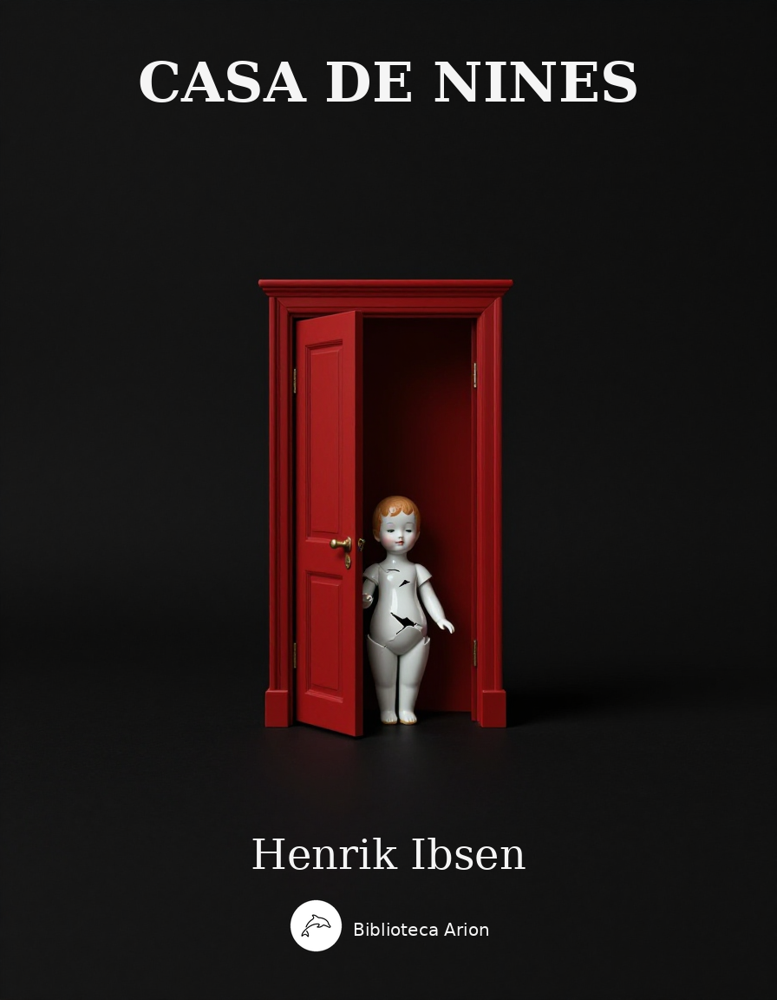

Casa de nines
Et dukkehjem
Drama en tres actes que explora el paper de la dona en la societat del segle XIX. Nora Helmer descobreix que la seva vida matrimonial es basa en il·lusions i pren una decisió radical.
Henrik Ibsen (1879)
Personene
OMDIRIGERING Et Dukkehjem/Personerne
Første akt
(En hyggelig og smakfullt, men ikke kostbart innrettet stue. En dør til høyre i bakgrunnen fører ut til forstuen; en annen dør til venstre i bakgrunnen fører inn til Helmers arbeidsværelse. Mellem begge disse døre et pianoforte. Midt på veggen til venstre en dør og lenger fremme et vindu. Nær ved vinduet et rundt bord med lenestole og en liten sofa. På sideveggen til høyre, noe tilbake, en dør, og på samme vegg, nærmere mot forgrunnen en stentøysovn med et par lenestole og en gyngestol foran. Mellem ovnen og sidedøren et lite bord. Kobberstikk på veggene. En etagère med porselensgjenstande og andre små kunstsaker; et lite bokskap med bøker i praktbind. Teppe på gulvet; ild i ovnen. Vinterdag.)
(Der ringes ute i forstuen; litt efter hører man at der blir lukket opp. Nora kommer fornøyet nynnende inn i stuen; hun er kledd i yttertøy og bærer en hel del pakker, som hun legger fra seg på bordet til høyre. Hun lar døren til forstuen stå åpen efter seg, og man ser der ute et bybud, der bærer en julegran og en kurv, hvilket han gir til stuepiken, som har lukket opp for dem.)
NORA. Gjem juletreet godt, Helene. Børnene må endelig ikke få se det før i aften, når det er pyntet. (til budet; tar portemonéen frem.) Hvor meget -?
BYBUDET. Femti øre.
NORA. Der er en krone. Nei, behold det hele.
(Budet takker og går. Nora lukker døren. Hun vedblir å le stille fornøyet mens hun tar yttertøyet av.)
NORA. (tar en pose med makroner opp av lommen og spiser et par; derpå går hun forsiktig hen og lytter ved sin manns dør). Jo, han er hjemme. (nynner igjen, idet hun går hen til bordet til høyre.)
HELMER. (inne i sitt værelse). Er det lerkefuglen som kvidrer der ute?
NORA. (i ferd med å åpne noen av pakkene). Ja, det er det.
HELMER. Er det ekornet som romsterer der?
NORA. Ja!
HELMER. Når kom ekornet hjem?
NORA. Nu nettopp. (putter makronposen i lommen og visker seg om munnen). Kom her ut, Torvald, så skal du få se hva jeg har kjøpt.
HELMER. Ikke forstyrr! (litt efter; åpner døren og ser inn, med pennen i hånden.) Kjøpt, sier du? Alt det der? Har nu lille spillefuglen vært ute og satt penge over styr igjen?
NORA. Ja men, Torvald, i år må vi dog virkelig slå oss litt løs. Det er jo den første jul vi ikke behøver å spare.
HELMER. Å, vet du hva, ødsle kan vi ikke.
NORA. Jo, Torvald, litt kan vi nok ødsle nu. Ikke sant? Bare en liten bitte smule. Nu får du jo en stor gasje og kommer til å tjene mange, mange penge.
HELMER. Ja, fra nyttår av; men så går det et helt fjerdingår før gasjen forfaller.
NORA. Pytt; vi kan jo låne så lenge.
HELMER. Nora! (går hen til henne og tar henne spøkende i øret). Er nu lettsindigheten ute og går igjen? Sett nu jeg lånte tusen kroner i dag, og du satte dem over styr i juleuken, og jeg så nyttårsaften fikk en taksten i hodet og lå der.
NORA. (legger hånden på hans arm). Å, fy; tal ikke så stygt.
HELMER. Jo, sett nu at slikt hendte, - hva så?
NORA. Hvis der hendte noe så fælt, så kunne det være ganske det samme enten jeg hadde gjeld eller ikke.
HELMER. Nå, men de folk jeg hadde lånt av?
NORA. De? Hvem bryr seg om dem! Det er jo fremmede.
HELMER. Nora, Nora, du est en kvinne! Nei, men alvorlig, Nora; du vet hva jeg tenker i det stykke. Ingen gjeld! Aldri låne! Det kommer noe ufritt, og altså også noe uskjønt, over det hjem som grunnes på lån og gjeld. Nu har vi to holdt tappert ut like til i dag; og det vil vi også gjøre den korte tid det ennu behøves.
NORA (går hen imot ovnen). Ja, ja, som du vil, Torvald.
HELMER (følger efter). Så, så; nu skal ikke lille sanglerken henge med vingene. Hva? Står ekornet der og surmuler. (tar portemonéen opp.) Nora; hva tror du jeg har her?
NORA (vender seg raskt). Penge!
HELMER. Se der. (rekker henne noen sedler.) Herregud, jeg vet jo nok at der går en hel del til i et hus i juletiden.
NORA (teller). Ti - tyve - tredve - førti. Å takk, takk, Torvald; nu hjelper jeg meg langt.
HELMER. Ja, det må du sannelig gjøre.
NORA. Ja, ja, det skal jeg nok. Men kom her, så skal jeg vise deg alt hva jeg har kjøpt. Og så billig! Se, her er nye klær til Ivar - og så en sabel. Her er en hest og en trompet til Bob. Og her er dukke og dukkeseng til Emmy; det er nu så simpelt; men hun river det jo snart i stykker allikevel. Og her har jeg kjoletøyer og tørklær til pikene; gamle Anne-Marie skulle nu hatt meget mer.
HELMER. Og hva er der i den pakke der?
NORA (skriker). Nei, Torvald, det får du ikke se før i aften!
HELMER. Nå så. Men si meg nu, du lille ødeland, hva har du nu tenkt på til deg selv?
NORA. Å pytt; til meg? Jeg bryr meg slett ikke om noe.
HELMER. Jo visst gjør du så. Si meg nu noe rimelig, som du helst kunne ha lyst til.
NORA. Nei, jeg vet virkelig ikke. Jo hør, Torvald.
HELMER. Nå?
NORA (famler ved hans knapper; uten å se på ham). Hvis du vil gi meg noe, så kunne du jo -; du kunne -
HELMER. Nå, nå; ut med det.
NORA (hurtig). Du kunne gi meg penge, Torvald. Bare så meget som du synes du kan avse; så skal jeg siden en av dagene kjøpe noe for dem.
HELMER. Nei men, Nora -
NORA. Å jo, gjør det, kjære Torvald; jeg ber deg så meget om det. Så skulle jeg henge pengene i et smukt gullpapirs omslag på juletreet. Ville ikke det være morsomt?
HELMER. Hva er det de fugle kalles som alltid setter penge over styr?
NORA. Ja ja, spillefugle; jeg vet det nok. Men la oss gjøre som jeg sier, Torvald; så får jeg tid til å overlegge hva jeg mest har bruk for. Er ikke det meget fornuftig? Hva?
HELMER (smilende). Jo visst er det så; det vil si, hvis du virkelig kunne holde på de penge jeg gir deg, og virkelig kjøpte noe til deg selv for dem. Men så går de til huset og til så mangt og meget unyttig, og så må jeg punge ut igjen.
NORA. Å men, Torvald -
HELMER. Kan ikke nektes, min kjære lille Nora. (legger armen om hennes liv.) Spillefuglen er søt; men den bruker svært mange penge. Det er utrolig hvor kostbart det er for en mann å holde spillefugl.
NORA. Å fy, hvor kan du da si det? Jeg sparer dog virkelig alt hva jeg kan.
HELMER (ler). Ja, det var et sant ord. Alt hva du kan. Men du kan slett ikke.
NORA (nynner og smiler stille fornøyet). Hm, du skulle bare vite hvor mange utgifter vi lerker og ekorne har, Torvald.
HELMER. Du er en besynderlig liten en. Ganske som din far var. Du er om deg på alle kanter for å gjøre utvei til penge; men så snart du har dem, blir de liksom borte mellem hendene på deg; du vet aldri hvor du gjør av dem. Nå, man må ta deg som du er. Det ligger i blodet. Jo, jo, jo, slikt er arvelig, Nora.
NORA. Akk, jeg ville ønske jeg hadde arvet mange av pappas egenskaper.
HELMER. Og jeg ville ikke ønske deg annerledes enn nettopp således som du er, min søte lille sanglerke. Men hør; der faller meg noe inn. Du ser så - så - hva skal jeg kalle det? - så fordektig ut i dag -
NORA. Gjør jeg?
HELMER. Ja visst gjør du det. Se meg stivt i øynene.
NORA (ser på ham). Nå?
HELMER (truer med fingeren). Slikkmunnen skulle vel aldri ha grassert i byen i dag?
NORA. Nei, hvor kan du nu falle på det.
HELMER. Har slikkmunnen virkelig ikke gjort en avstikker inn til konditoren?
NORA. Nei, jeg forsikrer deg, Torvald -
HELMER. Ikke nippet litt syltetøy?
NORA. Nei, aldeles ikke.
HELMER. Ikke en gang gnavet en makron eller to?
NORA. Nei, Torvald, jeg forsikrer deg virkelig -
HELMER. Nå, nå, nå; det er jo naturligvis bare mitt spøk -
NORA (går til bordet til høyre). Jeg kunne da ikke falle på å gjøre deg imot.
HELMER. Nei, jeg vet det jo nok; og du har jo gitt meg ditt ord -. (hen til henne.) Nå, behold du dine små julehemmeligheter for deg selv, min velsignede Nora. De kommer vel for lyset i aften når juletreet er tent, kan jeg tro.
NORA. Har du husket på å be doktor Rank.
HELMER. Nei. Men det behøves jo ikke; det følger jo av seg selv at han spiser med oss. Forresten skal jeg be ham når han kommer her i formiddag. God vin har jeg bestilt. Nora, du kan ikke tro hvor jeg gleder meg til i aften.
NORA. Jeg også. Og hvor børnene vil fryde seg, Torvald!
HELMER. Akk, det er dog herlig å tenke på at man har fått en sikker, betrygget stilling; at man har sitt rundelige utkomme. Ikke sant! det er en stor nydelse å tenke på?
NORA. Å, det er vidunderlig!
HELMER. Kan du huske forrige jul? Hele tre uker i forveien lukket du deg hver aften inne til langt over midnatt for å lage blomster til juletreet og alle de andre herligheter som vi skulle overraskes med. Uh, det var den kjedeligste tid jeg har opplevet.
NORA. Da kjedet jeg meg slett ikke.
HELMER (smilende). Men det falt dog temmelig tarvelig ut, Nora.
NORA. Å, skal du nu drille meg med det igjen. Hva kunne jeg for at katten var kommet inn og hadde revet all ting i stykker?
HELMER. Nei visst kunne du ikke, min stakkars lille Nora. Du hadde den beste vilje til å glede oss alle, og det er hovedsaken. Men det er dog godt at de knepne tider er forbi.
NORA. Ja, det er riktignok vidunderlig.
HELMER. Nu behøver ikke jeg å sitte her alene og kjede meg; og du behøver ikke å plage dine velsignede øyne og dine små skjære fine hender -
NORA (klapper i hendene). Nei, ikke sant, Torvald, det behøves ikke lenger? Å, hvor det er vidunderlig deilig å høre! (tar ham under armen.) Nu skal jeg si deg hvorledes jeg hadde tenkt vi skulle innrette oss, Torvald. Så snart julen er over - (det ringer i forstuen.) Å, der ringer det. (rydder litt opp i stuen.) Her kommer visst noen. Det var da kjedelig.
HELMER. For visitter er jeg ikke hjemme; husk det.
STUEPIKEN (i entrédøren). Frue, her er en fremmed dame -
NORA. Ja, la henne komme inn.
STUEPIKEN (til Helmer). Og så kom doktoren med det samme.
HELMER. Gikk han like inn til meg?
STUEPIKEN. Ja, han gjorde så.
(Helmer går inn i sitt værelse. Piken viser fru Linde, som er i reisetøy, inn i stuen og lukker efter henne.)
FRU LINDE (forsagt og litt nølende). God dag, Nora.
NORA (usikker). God dag -
FRU LINDE. Du kjenner meg nok ikke igjen.
NORA. Nei; jeg vet ikke -; jo, visst, jeg synes nok - (ut brytende.) Hva! Kristine! Er det virkelig deg?
FRU LINDE. Ja, det er meg.
NORA. Kristine! Og jeg som ikke kjente deg igjen! Men hvor kunne jeg også -. (saktere.) Hvor du er blitt forandret, Kristine!
FRU LINDE. Ja, det er jeg visstnok. I ni - ti lange år -
NORA. Er det så lenge siden vi sås? Ja, det er det jo også. Å, de siste åtte år har vært en lykkelig tid, kan du tro. Og nu er du altså kommet her inn til byen? Gjort den lange reise ved vintertid. Det var tappert.
FRU LINDE. Jeg kom nettopp med dampskibet i morges.
NORA. For å more deg i julen, naturligvis. Å, hvor det er deilig! Ja, more oss, det skal vi riktignok. Men ta dog overtøyet av. Du fryser dog vel ikke? (hjelper henne.) Se så; nu setter vi oss hyggelig her ved ovnen. Nei, i lenestolen der! Her i gyngestolen vil jeg sitte. (griper hennes hender.) Ja, nu har du jo ditt gamle ansikt igjen; det var bare i det første øyeblikk -. Litt blekere er du dog blitt, Kristine, - og kanskje litt magrere.
FRU LINDE. Og meget, meget eldre, Nora.
NORA. Ja, kanskje litt eldre, bitte, bitte litt; slett ikke meget. (holder plutselig inne, alvorlig.) Å, men jeg tankeløse menneske, som sitter her og snakker! Søte, velsignede Kristine, kan du tilgi meg!
FRU LINDE. Hva mener du, Nora?
NORA (sakte). Stakkars Kristine, du er jo blitt enke.
FRU LINDE. Ja, for tre år siden.
NORA. Å, jeg visste det nok; jeg leste det jo i avisene. Å, Kristine, du må tro meg, jeg tenkte ofte på å skrive til deg i den tid; men alltid oppsatte jeg det, og alltid kom der noe i veien.
FRU LINDE. Kjære Nora, det forstår jeg så godt.
NORA. Nei, det var stygt av meg, Kristine. Å, du stakkar, hvor meget du visst har gått igjennem. - Og han efterlot deg jo ikke noe å leve av?
FRU LINDE. Nei.
NORA. Og ingen børn?
FRU LINDE. Nei.
NORA. Slett ingen ting altså?
FRU LINDE. Ikke en gang en sorg eller et savn til å tære på.
NORA (ser vantro på henne). Ja men, Kristine, hvor kan det være mulig?
FRU LINDE (smiler tungt og stryker henne over håret). Å, det hender undertiden, Nora.
NORA. Så ganske alene. Hvor det må være forferdelig tungt for deg. Jeg har tre deilige børn. Ja nu kan du ikke få se dem, for de er ute med piken. Men nu må du fortelle meg alt -
FRU LINDE. Nei, nei, nei, fortell heller du.
NORA. Nei, du skal begynne. I dag vil jeg ikke være egenkjærlig. I dag vil jeg tenke bare på dine saker. Men ett må jeg dog si deg. Vet du den store lykke som er hendt oss i disse dage?
FRU LINDE. Nei. Hva er det?
NORA. Tenk, min mann er blitt direktør i Aksjebanken.
FRU LINDE. Din mann? Å hvilket hell -!
NORA. Ja, umåtelig! Å være advokat, det er jo så usikkert å leve av, især når man ikke vil befatte seg med andre forretninger enn de som er fine og smukke. Og det har naturligvis Torvald aldri villet; og det holder jeg da ganske med ham i. Å, du kan tro vi gleder oss! Han skal tiltre i banken allerede til nyttår, og da får han en stor gasje og mange prosenter. Herefter kan vi leve ganske annerledes enn før, - ganske som vi vil. Å, Kristine, hvor jeg føler meg lett og lykkelig! Ja, for det er dog deilig å ha dyktig mange penge og ikke behøve å gjøre seg bekymringer. Ikke sant?
FRU LINDE. Jo, iallfall måtte det være deilig å ha det nødvendige.
NORA. Nei ikke blott det nødvendige, men dyktig, dyktig mange penge!
FRU LINDE (smiler). Nora, Nora, er du ennu ikke blitt fornuftig? I skoledagene var du en stor ødeland.
NORA (ler stille). Ja, det sier Torvald ennu. (truer med fingeren.) Men «Nora, Nora» er ikke så gal som I tenker. - Å, vi har sannelig ikke hatt det så at jeg har kunnet ødsle. Vi har måttet arbeide begge to.
FRU LINDE. Du også?
NORA. Ja, med småting, med håndarbeide, med hekling og med broderi og sånt noe; (henkastende.) og med andre ting også. Du vet vel at Torvald gikk ut av departementet da vi ble gift? Der var ingen utsikt til befordring i hans kontor, og så måtte han jo tjene flere penge enn før. Men i det første år overanstrengte han seg så aldeles forferdelig. Han måtte jo søke alskens bifortjeneste, kan du vel tenke deg, og arbeide både tidlig og sent. Men det tålte han ikke, og så ble han så dødelig syk. Så erklærte lægene det for nødvendig at han kom ned til syden.
FRU LINDE. Ja, I oppholdt jer jo et helt år i Italien?
NORA. Ja visst. Det var ikke lett å komme av sted, kan du tro. Ivar var nettopp født den gang. Men av sted måtte vi naturligvis. Å, det var en vidunderlig reise. Og den frelste Torvalds liv. Men den kostet svært mange penge, Kristine.
FRU LINDE. Det kan jeg nok tenke meg.
NORA. Tolv hundre spesier kostet den. Fire tusen åtte hundre kroner. Det er mange penge du.
FRU LINDE. Ja, men i slike tilfelle er det iallfall en stor lykke at man har dem.
NORA. Ja jeg skal si deg, vi fikk dem nu av pappa.
FRU LINDE. Nå sådan. Det var nettopp på den tid din far døde, tror jeg.
NORA. Ja, Kristine, det var nettopp da. Og tenk deg, jeg kunne ikke reise til ham og pleie ham. Jeg gikk jo her og ventet daglig at lille Ivar skulle komme til verden. Og så hadde jeg jo min stakkars dødssyke Torvald å passe. Min kjære snille pappa! Jeg fikk aldri se ham mer, Kristine. Å, det er det tungeste jeg har opplevet siden jeg ble gift.
FRU LINDE. Jeg vet du holdt meget av ham. Men så reiste I altså til Italien?
NORA. Ja; da hadde vi jo pengene; og lægene skyndte på oss. Så reiste vi en måneds tid efter.
FRU LINDE. Og din mann kom aldeles helbredet tilbake?
NORA. Frisk som en fisk!
FRU LINDE. Men - doktoren?
NORA. Hvorledes?
FRU LINDE. Jeg synes piken sa det var doktoren, den herre som kom på samme tid som jeg.
NORA. Ja, det var doktor Rank; men han kommer ikke i sykebesøk; det er vår nærmeste venn, og han ser her innom minst én gang om dagen. Nei, Torvald har aldri hatt en syk time siden. Og børnene er friske og sunne, og jeg også. (springer opp og klapper i hendene.) Å Gud, å Gud, Kristine, det er dog vidunderlig deilig å leve og være lykkelig! - - Å, men det er dog avskyelig av meg -; jeg taler jo bare om mine egne saker. (setter seg på en skammel tett ved henne og legger armene på hennes kne.) Å, du må ikke være vred på meg! - Si meg, er det virkelig sant at du ikke holdt av din mann? Hvorfor tok du ham da?
FRU LINDE. Min mor levet ennu; og hun var sengeliggende og hjelpeløs. Og så hadde jeg mine to yngre brødre å sørge for. Jeg syntes ikke det var forsvarlig å vise hans tilbud tilbake.
NORA. Nei, nei, det kan du ha rett i. Han var altså rik den gang?
FRU LINDE. Han var ganske velstående, tror jeg. Men det var usikre forretninger, Nora. Da han døde, gikk det hele over styr, og der ble ingenting til overs.
NORA. Og så -?
FRU LINDE. Ja, så måtte jeg slå meg igjennem med en liten handel og en liten skole og hva jeg ellers kunne finne på. De siste tre år har vært som en eneste lang hvileløs arbeidsdag for meg. Nu er den til ende, Nora. Min stakkars mor behøver meg ikke mer, for hun er gått bort. Og guttene heller ikke; de er nu kommet i stillinger og kan sørge for seg selv.
NORA. Hvor du må føle deg lett -
FRU LINDE. Nei, du; bare så usigelig tom. Ingen å leve for mer. (står urolig opp.) Derfor holdt jeg det ikke lenger ut der borte i den lille avkrok. Her må det dog være lettere å finne noe som kan legge beslag på en og oppta ens tanker. Kunne jeg bare være så lykkelig å få en fast post, noe kontorarbeide -
NORA. Å, men, Kristine, det er så forferdelig anstrengende; og du ser allerede så anstrengt ut i forveien. Det ville være meget bedre for deg om du kunne komme til et bad.
FRU LINDE (går henimot vinduet). Jeg har ingen pappa, som kan forære meg reisepenge, Nora.
NORA (reiser seg). Å, vær ikke vred på meg!
FRU LINDE (hen til henne). Kjære Nora, vær ikke du vred på meg. Det er det verste ved en stilling som min at den avsetter så megen bitterhet i sinnet. Man har ingen å arbeide for; og dog nødes man til å være om seg på alle kanter. Leve skal man jo; og så blir man egenkjærlig. Da du fortalte meg om den lykkelige forandring i eders stilling - vil du tro det? - jeg gledet meg ikke så meget på dine vegne, som på mine.
NORA. Hvorledes det? Å, jeg forstår det. Du mener Torvald kunne kanskje gjøre noe for deg.
FRU LINDE. Ja, det tenkte jeg meg.
NORA. Det skal han også, Kristine. Overlat det bare til meg; jeg skal innlede det så fint, så fint, - finne på noe elskverdig som han synes riktig godt om. Å, jeg vil så inderlig gjerne være deg til tjeneste.
FRU LINDE. Hvor det er smukt av deg, Nora, at du er så ivrig for min sak, - dobbelt smukt av deg, som selv kjenner så lite til livets byrder og besvær.
NORA. Jeg -? Jeg kjenner så lite til -?
FRU LINDE (smilende). Nå, Herregud, den smule håndarbeide og sånt noe -. Du er et barn, Nora.
NORA (kaster på nakken og går henover gulvet). Det skulle du ikke si så overlegent.
FRU LINDE. Så?
NORA. Du er liksom de andre. I tror alle sammen at jeg ikke duger til noe riktig alvorlig -
FRU LINDE. Nå, nå -
NORA. - at jeg ikke har prøvet noe i denne vanskelige verden.
FRU LINDE. Kjære Nora, du har jo nyss fortalt meg alle dine gjenvordigheter.
NORA. Pytt, - de småtterier! (sakte.) Jeg har ikke fortalt deg det store.
FRU LINDE. Hvilket store? Hva mener du?
NORA. Du overser meg så ganske, Kristine; men det skulle du ikke gjøre. Du er stolt over at du har arbeidet så tungt og så lenge for din mor.
FRU LINDE. Jeg overser visselig ikke noen. Men det er sant: jeg er både stolt og glad når jeg tenker på at det ble meg forunt å gjøre min mors siste levetid så vidt sorgløs.
NORA. Og du er også stolt når du tenker på hva du har gjort for dine brødre.
FRU LINDE. Det synes jeg jeg har rett til.
NORA. Det synes jeg også. Men nu skal du høre noe, Kristine. Jeg har også noe å være stolt og glad over.
FRU LINDE. Det tviler jeg ikke på. Men hvorledes mener du det?
NORA. Tal sakte. Tenk om Torvald hørte det! Han må ikke for noen pris i verden -; der må ingen få det å vite, Kristine; ingen uten du.
FRU LINDE. Men hva er det dog?
NORA. Kom herhen. (drar henne ned på sofaen ved siden av seg.) Ja du, - jeg har også noe å være stolt og glad over. Det er meg, som har reddet Torvalds liv.
FRU LINDE. Reddet -? Hvorledes reddet?
NORA. Jeg fortalte deg jo om reisen til Italien. Torvald kunne ikke ha overstått det hvis han ikke var kommet der ned -
FRU LINDE. Nå, ja; din far ga jer så de fornødne penge -
NORA (smiler). Ja, det tror både Torvald og alle andre; men -
FRU LINDE. Men -?
NORA. Pappa ga oss ikke en skilling. Det var meg, som skaffet pengene til veie.
FRU LINDE. Du? Hele den store sum?
NORA. Tolv hundre spesier. Fire tusen åtte hundre kroner. Hva sier du til det?
FRU LINDE. Ja men, Nora, hvorledes var det mulig? Hadde du da vunnet i lotteriet?
NORA (med ringeakt). I lotteriet? (blåser.) Hva kunst hadde det da vært?
FRU LINDE. Men hvor fikk du dem da fra?
NORA (nynner og smiler hemmelighetsfullt). Hm; tra la la la!
FRU LINDE. For låne dem kunne du jo ikke.
NORA. Så? Hvorfor ikke det?
FRU LINDE. Nei, en kone kan jo ikke låne uten sin manns samtykke.
NORA (kaster på nakken). Å, når det er en kone som har en smule forretningsdyktighet, - en kone som forstår å bære seg litt klokt ad, så -
FRU LINDE. Men, Nora, jeg begriper aldeles ikke -
NORA. Det behøver du jo heller ikke. Det er jo slett ikke sagt at jeg har lånt pengene. Jeg kan jo ha fått dem på andre måter. (kaster seg tilbake i sofaen.) Jeg kan jo ha fått dem av en eller annen beundrer. Når man ser så vidt tiltrekkende ut som jeg -
FRU LINDE. Du er en galning.
NORA. Nu er du visst umåtelig nysgjerrig, Kristine.
FRU LINDE. Ja hør nu her, kjære Nora, - har du ikke der handlet ubesindig?
NORA (sitter atter oppreist). Er det ubesindig å redde sin manns liv?
FRU LINDE. Jeg synes det er ubesindig at du uten hans vitende -
NORA. Men han måtte jo nettopp ikke vite noe! Herregud, kan du ikke forstå det? Han måtte ikke en gang vite hvor farlig det sto til med ham. Det var til meg lægene kom og sa at hans liv sto i fare; at intet annet kunne redde ham enn et opphold i syden. Tror du ikke jeg først forsøkte å lirke meg frem? Jeg talte til ham om hvor deilig det ville være for meg å få reise til utlandet liksom andre unge koner; jeg både gråt og jeg ba; jeg sa at han værs’god skulle huske på de omstendigheter jeg var i, og at han måtte være snill og føye meg; og så slo jeg på at han gjerne kunne oppta et lån. Men da ble han nesten vred, Kristine. Han sa at jeg var lettsindig, og at det var hans plikt som ektemann ikke å føye meg i nykker og luner - som jeg tror han kalte det. Ja ja, tenkte jeg, reddes må du nu; og så var det jeg gjorde utvei -
FRU LINDE. Og fikk din mann ikke vite av din far at pengene ikke kom fra ham?
NORA. Nei, aldri. Pappa døde nettopp i de samme dage. Jeg hadde tenkt å innvie ham i saken og be ham ikke røbe noe. Men da han lå så syk -. Dessverre, det ble ikke nødvendig.
FRU LINDE. Og har du aldri siden betrodd deg til din mann?
NORA. Nei, for himmelens skyld, hvor kan du tenke det? Han, som er så streng i det stykke! Og dessuten - Torvald med sin mandige selvfølelse, - hvor pinlig og ydmykende ville det ikke være for ham å vite at han skyldte meg noe. Det ville ganske forrykke forholdet imellem oss; vårt skjønne lykkelige hjem ville ikke lenger bli hva det nu er.
FRU LINDE. Vil du aldri si ham det?
NORA (eftertenksom, halvt smilende). Jo - en gang kanskje; - om mange år når jeg ikke lenger er så smukk som nu. Du skal ikke le av det! Jeg mener naturligvis: når Torvald ikke lenger synes så godt om meg som nu; når han ikke lenger finner fornøyelse i at jeg danser for ham og forkler meg og deklamerer. Da kunne det være godt å ha noe i bakhånden - (avbrytende.) Vås, vås, vås! Den tid kommer aldri. - Nå, hva sier du så til min store hemmelighet, Kristine? Duer ikke jeg også til noe? - Du kan forresten tro at den sak har voldt meg mange bekymringer. Det har sannelig ikke vært lett for meg å oppfylle mine forpliktelser til rette tid. Jeg skal si deg, der er i forretningsverdenen noe som kalles kvartalsrenter, og noe som kalles avdrag; og de er alltid så forferdelig vanskelige å skaffe til veie. Så har jeg måttet spare litt hist og her hvor jeg kunne, ser du. Av husholdningspengene kunne jeg jo ikke legge noe videre til side, for Torvald måtte jo leve godt. Børnene kunne jeg jo ikke la gå dårlig kledd; hva jeg fikk til dem, syntes jeg jeg måtte bruke alt sammen. De søte velsignede små!
FRU LINDE. Så gikk det vel altså ut over dine egne fornødenheter, stakkars Nora?
NORA. Ja naturligvis. Jeg var jo også den som var nærmest til det. Hver gang Torvald ga meg penge til nye kjoler og sånt noe, brukte jeg aldri mer enn det halve; kjøpte alltid de simpleste og billigste sorter. En Guds lykke var det at all ting kler meg så godt, så Torvald ikke merket det. Men det falt meg mangen gang tungt, Kristine; for det er dog deilig å gå fint kledd. Ikke sant?
FRU LINDE. Å jo så menn.
NORA. Nå, så har jeg jo også hatt andre inntektskilder. I fjor vinter var jeg så heldig å få en hel del arkskrift. Så lukket jeg meg inne og satt og skrev hver aften til langt ut på natten. Akk, jeg var mangen gang så trett, så trett. Men det var dog uhyre morsomt allikevel, således å sitte og arbeide og fortjene penge. Det var nesten som om jeg var en mann.
FRU LINDE. Men hvor meget har du nu på den vis kunnet avbetale?
NORA. Ja, det kan jeg ikke si så nøye. Sånne forretninger, ser du, er det meget vanskelig å holde rede på. Jeg vet kun at jeg har betalt alt hva jeg har kunnet skrape sammen. Mangen gang har jeg ikke visst min arme råd. (smiler.) Da satt jeg her og forestillet meg at en gammel rik herre var blitt forelsket i meg -
FRU LINDE. Hva! Hvilken herre?
NORA. Å snakk! - at han nu var død, og da man åpnet hans testamente, så sto deri med store bokstaver «Alle mine penge skal den elskverdige fru Nora Helmer ha utbetalt straks kontant».
FRU LINDE. Men kjære Nora, - hva var det for en herre?
NORA. Herregud, kan du ikke forstå det? Den gamle herre var jo slett ikke til; det var bare noe jeg satt her og tenkte opp igjen og opp igjen når jeg ikke visste utvei til å skaffe penge. Men det kan også være det samme; det gamle kjedelige menneske kan bli for meg hvor han er; jeg bryr meg hverken om ham eller hans testamente, for nu er jeg sorgløs. (springer opp.) Å Gud, det er dog deilig å tenke på, Kristine! Sorgløs! Å kunne være sorgløs, ganske sorgløs! å kunne leke og tumle seg med børnene; å kunne ha det smukt og nydelig i huset, all ting således som Torvald setter pris på det! Og tenk, så kommer snart våren med stor blå luft. Så kan vi kanskje få reise litt. Jeg kan kanskje få se havet igjen. Å ja, ja, det er riktignok vidunderlig å leve og være lykkelig!
(Klokken høres i forstuen.)
FRU LINDE (reiser seg). Det ringer; det er kanskje best jeg går.
NORA. Nei, bli du; her kommer visst ingen; det er vel til Torvald -
STUEPIKEN (i forstuedøren). Om forlatelse, frue, - her er en herre som vil tale med advokaten -
NORA. Med bankdirektøren, mener du.
STUEPIKEN. Ja, med bankdirektøren; men jeg visste ikke - siden doktoren er der inne -
NORA. Hvem er den herre?
SAKFØRER KROGSTAD’ (i forstuedøren). Det er meg, frue.
FRU LINDE (stusser, farer sammen og vender seg mot vinduet).
NORA (et skritt imot ham, spent, med halv stemme). De? Hva er det? Hva vil De tale med min mann om?
KROGSTAD. Banksaker - på en måte. Jeg har en liten post i Aksjebanken, og Deres mann skal jo nu bli vår sjef, hører jeg -
NORA. Det er altså -
KROGSTAD. Bare tørre forretninger, frue; slett ikke noe annet.
NORA. Ja, vil De da være så god å gå inn kontordøren. (hilser likegyldig, idet hun lukker døren til forstuen; derpå går hun hen og ser til ovnen.)
FRU LINDE. Nora, - hvem var den mann?
NORA. Det var en sakfører Krogstad.
FRU LINDE. Det var altså virkelig ham.
NORA. Kjenner du det menneske?
FRU LINDE. Jeg har kjent ham - for en del år siden. Han var en tid sakførerfullmektig henne på vår kant.
NORA. Ja, det var han jo.
FRU LINDE. Hvor han var forandret.
NORA. Han har nok vært meget ulykkelig gift.
FRU LINDE. Nu er han jo enkemann?
NORA. Med mange børn. Se så; nu brenner det. (hun lukker ovnsdøren og flytter gyngestolen litt til side.)
FRU LINDE. Han driver jo mange slags forretninger, sies det?
NORA. Så? Ja det kan gjerne være; jeg vet slett ikke -. Men la oss ikke tenke på forretninger; det er så kjedelig.
(Doktor Rank kommer fra Helmers værelse.)
DOKTOR RANK (ennu i døren). Nei nei, du; jeg vil ikke forstyrre; jeg vil heller gå litt inn til din hustru. (lukker døren og bemerker fru Linde.) Å om forlatelse; jeg forstyrrer nok her også.
NORA. Nei, på ingen måte. (forestiller.) Doktor Rank. Fru Linde.
RANK. Nå så. Et navn, som ofte høres her i huset. Jeg tror jeg gikk fruen forbi på trappen da jeg kom.
FRU LINDE. Ja; jeg stiger meget langsomt, jeg kan ikke godt tåle det.
RANK. Aha, en liten smule bedervet innvendig?
FRU LINDE. Egentlig mer overanstrengt.
RANK. Ikke annet? Så er De vel kommet til byen for å hvile Dem ut i alle gjestebudene?
FRU LINDE. Jeg er kommet hit for å søke arbeide.
RANK. Skal det være noe probat middel imot overanstrengelse?
FRU LINDE. Man må leve, herr doktor.
RANK. Ja, det er jo en alminnelig mening at det skal være sa nødvendig.
NORA. Å vet De hva, doktor Rank, - De vil så menn også gjerne leve.
RANK. Ja så menn vil jeg så. Så elendig jeg enn er, vil jeg dog gjerne bli ved å pines i det lengste. Alle mine pasienter har det på samme vis. Og således er det med de moralsk angrepne også. Det er nu nettopp i dette øyeblikk et slikt moralsk hospitalslem inne hos Helmer -
FRU LINDE (dempet). Ah!
NORA. Hvem mener De?
RANK. Å, det er en sakfører Krogstad, et menneske som De ikke kjenner noe til. Han er bedervet i karakterrøttene, frue. Men selv han begynte å snakke om, som noe høyviktig, at han måtte leve.
NORA. Så? Hva var det han ville tale med Torvald om?
RANK. Jeg vet sannelig ikke; jeg hørte blott det var noe om Aksjebanken.
NORA. Jeg visst ikke at Krog - at denne sakfører Krogstad hadde noe med Aksjebanken å gjøre.
RANK. Jo, han har fått et slags ansettelse der nede. (til fru Linde.) Jeg vet ikke om man også borte på Deres kanter har et slags mennesker som vimser hesblesende omkring for å oppsnuse moralsk råttenskap og så få vedkommende innlagt til observasjon i en eller annen fordelaktig stilling. De sunne må pent finne seg i å stå utenfor.
FRU LINDE. Det er dog vel også de syke som mest trenger til å lukkes inn.
RANK (trekker på skuldrene). Ja, der har vi det. Det er den betraktning som gjør samfunnet til et sykehus.
NORA (i sine egne tanker, brister ut i en halvhøy latter og klapper i hendene).
RANK. Hvorfor ler De av det? Vet De egentlig hva samfunnet er?
NORA. Hva bryr jeg meg om det kjedelige samfunn? Jeg lo av noe ganske annet. - noe uhyre morsomt. - Si meg, doktor Rank, - alle de som er ansatte i Aksjebanken, blir altså nu avhengige av Torvald?
RANK. Er det det De finner så uhyre morsomt?
NORA (smiler og nynner). La meg om det! La meg om det! (spaserer omkring på gulvet.) Ja det er riktignok umåtelig fornøyelig å tenke på at vi - at Torvald har fått så megen innflytelse på mange mennesker. (tar posen opp av lommen.) Doktor Rank, skal det være en liten makron?
RANK. Se, se; makroner. Jeg trodde det var forbudne varer her.
NORA. Ja, men disse er noen som Kristine ga meg.
FRU LINDE. Hva? Jeg -?
NORA. Nå, nå, nå; bli ikke forskrekket. Du kunne jo ikke vite at Torvald hadde forbudt det. Jeg skal si deg han er bange jeg skal få stygge tenner av dem. Men pytt, - for en gangs skyld -! Ikke sant, doktor Rank? Vær så god! (putter ham en makron i munnen.) Og du også, Kristine. Og jeg skal også ha en; bare en liten en - eller høyst to. (spaserer igjen.) Ja nu er jeg riktignok umåtelig lykkelig. Nu er det bare en eneste ting i verden som jeg skulle ha en sånn umåtelig lyst til.
RANK. Nå? Og hva er det?
NORA. Der er noe som jeg hadde en så umåtelig lyst til å si så Torvald hørte på det.
RANK. Og hvorfor kan De så ikke si det?
NORA. Nei, det tør jeg ikke, for det er så stygt.
FRU LINDE. Stygt?
RANK. Ja, da er det ikke rådelig. Men til oss kan De jo nok -. Hva er det De har sånn lyst til å si så Helmer hører på det?
NORA. Jeg har en sånn umåtelig lyst til å si: død og pine.
RANK. Er De gal!
FRU LINDE. Men bevares, Nora -!
RANK. Si det. Der er han.
NORA (gjemmer makronposen). Hyss, hyss, hyss!
(Helmer, med overfrakke på armen og hatt i hånden, kommer fra sitt værelse.)
NORA (imot ham). Nå, kjære Torvald, ble du av med ham?
HELMER. Ja, nu gikk han.
NORA. Må jeg forestille deg -; det er Kristine som er kommet til byen.
HELMER. Kristine -? Om forlatelse, men jeg vet ikke -
NORA. Fru Linde, kjære Torvald; fru Kristine Linde.
HELMER. Ah så. Formodentlig en barndomsvenninne av min hustru?
FRU LINDE. Ja vi har kjent hinannen i tidligere dage.
NORA. Og tenk, nu har hun gjort den lange reise her inn for å få tale med deg.
HELMER. Hva skal det si?
FRU LINDE. Ja ikke egentlig -
NORA. Kristine er nemlig umåtelig flink i kontorarbeide, og så har hun en sånn uhyre lyst til å komme under en dyktig manns ledelse og lære mer enn det hun alt kan -
HELMER. Meget fornuftig, frue.
NORA. Og da hun hørte at du var blitt bankdirektør - der kom telegram om det - så reiste hun så fort hun kunne her inn og -. Ikke sant, Torvald, du kan nok for min skyld gjøre litt for Kristine? Hva?
HELMER. Jo det var slett ikke umulig. Fruen er formodentlig enke?
FRU LINDE. Ja.
HELMER. Og har øvelse i kontorforretninger?
FRU LINDE. Ja så temmelig.
HELMER. Nå, da er det høyst rimelig at jeg kan skaffe Dem en ansettelse -
NORA (klapper i hendene). Ser du; ser du!
HELMER. De er kommet i et heldig øyeblikk, frue -
FRU LINDE. Å, hvorledes skal jeg takke Dem -?
HELMER. Behøves slett ikke. (trekker ytterfrakken på.) Men i dag må De ha meg unnskyldt -
RANK. Vent; jeg går med deg. (henter sin pels i entréen og varmer den ved ovnen.)
NORA. Bli ikke lenge ute, kjære Torvald.
HELMER. En times tid; ikke mer.
NORA. Går du også, Kristine?
FRU LINDE (tar yttertøyet på). Ja, nu må jeg ut og se meg om efter et værelse.
HELMER. Så går vi kanskje ned over gaten sammen.
NORA (hjelper henne). Hvor kjedelig at vi skal bo så inn skrenket; men det er oss umulig å -
FRU LINDE. Å, hva tenker du på! Farvel kjære Nora, og takk for alt.
NORA. Farvel så lenge. Ja, i aften kommer du naturligvis igjen. Og De også, doktor Rank. Hva? Om De blir så bra? Å jo så menn gjør De så; pakk Dem bare godt inn.
(Man går under alminnelig samtale ut i entréen. Der høres børnestemmer utenfor på trappen.)
NORA. Der er de! Der er de!
(Hun løper hen og lukker opp. Barnepiken Anne-Marie kommer med børnene.)
NORA. Kom inn; kom inn! (bøyer seg ned og kysser dem.) Å I søte, velsignede -! Ser du dem, Kristine? Er de ikke deilige!
RANK. Ikke passiar her i luftdraget!
HELMER. Kom, fru Linde; nu blir her ikk utholdelig for andre enn mødre.
(Doktor Rank, Helmer og fru Linde går nedover trappene. Barnepiken går inn i stuen med børnene. Nora likeledes, idet hun lukker døren til forstuen.)
NORA. Hvor friske og kjekke I ser ut. Nei, for røde kinner I har fått. Som epler og roser. (børnene taler i munnen på henne under det følgende.) Har I moret jer så godt? Det var jo prektig. Ja så; du har trukket både Emmy og Bob på kjelken? Nei tenk, på en gang! Ja, du er en flink gutt, Ivar. Å, la meg holde henne litt, Anne-Marie. Mitt søte lille dukkebarn! (tar den minste fra barnepiken og danser med henne.) Ja, ja, mamma skal danse med Bob også. Hva? Har I kastet sneball? Å, der skulle jeg ha vært med! Nei, ikke det; jeg vil selv kle dem av, Anne-Marie. Å jo, la meg få lov; det er så morsomt. Gå inn så lenge; du ser så forfrossen ut. Der står varm kaffe til deg på ovnen.
(Barnepiken går inn i værelset til venstre. Nora tar børnenes yttertøy av og kaster det omkring, idet hun lar dem fortelle i munnen på hverandre.)
NORA. Ja så? Så der var en stor hund som løp efter jer? Men den bet ikke? Nei, hundene biter ikke små deilige dukkebørn. Ikke se i pakkene, Ivar! Hva det er? Ja, det skulle I bare vite. Å nei, nei; det er noe fælt noe. Så? Skal vi leke? Hva skal vi leke? Gjemmespill. Ja, la oss leke gjemmespill. Bob skal gjemme seg først. Skal jeg? Ja, la meg gjemme meg først.
(Hun og børnene leker under latter og jubel i stuen og i det tilstøtende værelse til høyre. Til sist gjemmer Nora seg under bordet; børnene kommer stormende inn, søker, men kan ikke finne henne, hører hennes dempede latter, styrter hen til bordet, løfter teppet opp, ser henne. Stormende jubel. Hun kryper frem som for å skremme dem. Ny jubel. Det har imidlertid banket på inngangsdøren; ingen har lagt merke til det. Nu åpnes døren halvt, og Sakfører Krogstad kommer til syne; han venter litt; leken fortsettes.)
KROGSTAD. Om forlatelse, fru Helmer -
NORA (med et dempet skrik, vender seg og springer halvt i været.) Ah! Hva vil De?
KROGSTAD. Unnskyld; ytterdøren sto på klem; der må noen ha glemt å lukke den -
NORA (reiser seg). Min mann er ikke hjemme, herr Krogstad.
KROGSTAD. Jeg vet det.
NORA. Ja - hva vil De så her?
KROGSTAD. Tale et ord med Dem.
NORA. Med -? (til børnene, sakte.) Gå inn til Anne-Marie. Hva? Nei, den fremmede mann vil ikke gjøre mamma noe ondt. Når han er gått, skal vi leke igjen. (hun fører børnene inn i værelset til venstre og lukker døren efter dem.)
NORA (urolig, spent). De vil tale med meg?
KROGSTAD. Ja, jeg vil det.
NORA. I dag-? Men vi har jo ennu ikke den første i måneden -
KROGSTAD. Nei, vi har julaften. Det vil komme an på Dem selv hva juleglede De får.
NORA. Hva er det De vil? Jeg kan aldeles ikke i dag -
KROGSTAD. Det skal vi inntil videre ikke snakke om. Det er noe annet. De har dog vel tid et øyeblikk?
NORA. Å ja; ja visst, det har jeg nok, enskjønt -
KROGSTAD. Godt. Jeg satt inne på Olsens restaurasjon og så Deres mann gå nedover gaten -
NORA. Ja vel.
KROGSTAD. - med en dame.
NORA. Og hva så?
KROGSTAD. Måtte jeg være så fri å spørre; var ikke den dame en fru Linde?
NORA. Jo.
KROGSTAD. Nettopp kommet til byen?
NORA. Ja, i dag.
KROGSTAD. Hun er jo en god venninne av Dem?
NORA. Jo, det er hun. Men jeg innser ikke -
KROGSTAD. Jeg har også kjent henne en gang.
NORA. Det vet jeg.
KROGSTAD. Så? De har rede på den sak. Det tenkte jeg nok. Ja, må jeg så spørre Dem kort og godt: skal fru Linde ha noen ansettelse i Aksjebanken?
NORA. Hvor kan De tillate Dem å utspørre meg, herr Krogstad, De, en av min manns underordnede? Men siden De spør, så skal De få vite det: Ja, fru Linde skal ha en ansettelse. Og det er meg som har talt hennes sak, herr Krogstad. Nu vet De det.
KROGSTAD. Jeg hadde altså lagt riktig sammen.
NORA (går opp og ned ad gulvet). Å, man har dog vel alltid en smule innflytelse, skulle jeg tro. Fordi om man er en kvinne, er det slett ikke derfor sagt at -. Når man står i et underordnet forhold, herr Krogstad, så burde man virkelig vokte seg for å støte noen som - hm -
KROGSTAD. - som har innflytelse?
NORA. Ja nettopp.
KROGSTAD (skifter tone). Fru Helmer, vil De være av den godhet å anvende Deres innflytelse til fordel for meg.
NORA. Hva nu? Hva mener De?
KROGSTAD. Vil De være så god å sørge for at jeg beholder min underordnede stilling i banken.
NORA. Hva skal det si? Hvem tenker på å ta Deres stilling fra Dem?
KROGSTAD. Å, De behøver ikke å spille den uvitende like overfor meg. Jeg skjønner godt at det ikke kan være Deres venninne behagelig å utsette seg for å støte sammen med meg; og jeg skjønner nu også hvem jeg kan takke for at jeg skal jages vekk.
NORA. Men jeg forsikrer Dem -
KROGSTAD. Ja, ja, ja, kort og godt: det er ennu tid, og jeg rår Dem at De anvender Deres innflytelse for å forhindre det.
NORA. Men, herr Krogstad, jeg har aldeles ingen innflytelse.
KROGSTAD. Ikke det? Jeg syntes De nylig selv sa -
NORA. Det var naturligvis ikke således å forstå. Jeg! Hvor kan De tro at jeg har noen sånn innflytelse på min mann?
KROGSTAD. Å, jeg kjenner Deres mann fra studenterdagene. Jeg tenker ikke herr bankdirektøren er fastere enn andre ektemenn.
NORA. Taler De ringeaktende om min mann, så viser jeg Dem døren.
KROGSTAD. Fruen er modig.
NORA. Jeg er ikke bange for Dem lenger. Når nyttår er over, skal jeg snart være ute av det hele.
KROGSTAD (mer behersket). Hør meg nu, frue. Hvis det blir nødvendig, så kommer jeg til å kjempe liksom på livet for å beholde min lille post i banken.
NORA. Ja, det later virkelig til.
KROGSTAD. Det er ikke bare for inntektens skyld; den er det meg ennogså minst om å gjøre. Men der er noe annet -. Nå ja, ut med det! Det er dette her, ser De. De vet naturligvis like så godt som alle andre at jeg en gang for en del år siden har gjort meg skyldig i en ubesindighet.
NORA. Jeg tror jeg har hørt om noe sånt.
KROGSTAD. Saken kom ikke for retten; men alle veie ble likesom stengt for meg med det samme. Så slo jeg inn på de forretninger som De jo vet. Noe måtte jeg jo gripe til; og jeg tør si jeg har ikke vært blant de verste. Men nu må jeg ut av alt dette. Mine sønner vokser til; for deres skyld må jeg se å skaffe meg tilbake så megen borgerlig aktelse som mulig. Denne post i banken var liksom det første trappetrinn for meg. Og nu vil Deres mann sparke meg vekk fra trappen, så jeg kommer til å stå nede i sølen igjen.
NORA. Men for Guds skyld, herr Krogstad, det står aldeles ikke i min makt å hjelpe Dem.
KROGSTAD. Det er fordi De ikke har vilje til det; men jeg har midler til å tvinge Dem.
NORA. De vil dog vel ikke fortelle min mann at jeg skylder Dem penge?
KROGSTAD. Hm; hvis jeg nu fortalte ham det?
NORA. Det ville være skammelig handlet av Dem. (med gråten i halsen). Denne hemmelighet, som er min glede og min stolthet, den skulle han få vite, på en så stygg og plump måte, - få vite den av Dem. De vil utsette meg for de frykteligste ubehageligheter -
KROGSTAD. Bare ubehageligheter?
NORA (heftig). Men gjør De det kun; det blir verst for Dem selv; for da får min mann riktig se hvilket slett menneske De er, og da får De nu aldeles ikke beholde posten.
KROGSTAD. Jeg spurte om det bare var huslige ubehageligheter De var bange for?
NORA. Får min mann det å vite, så vil han naturligvis straks betale hva der står til rest; og så har vi ikke mer med Dem å skaffe.
KROGSTAD (et skritt nærmere). Hør, fru Helmer; - enten har De ikke noen sterk hukommelse, eller også har De ikke videre skjønn på forretninger. Jeg får nok sette Dem litt grundigere inn i saken.
NORA. Hvorledes det?
KROGSTAD. Da Deres mann var syk, kom De til meg for å få låne tolv hundre spesier.
NORA. Jeg visste ingen annen.
KROGSTAD. Jeg lovet da å skaffe Dem beløpet -
NORA. De skaffet det jo også.
KROGSTAD. Jeg lovet å skaffe Dem beløpet på visse betingelser. De var den gang så opptatt av Deres manns sykdom, og så ivrig for å få reisepenge, at jeg tror De ikke hadde videre tanke for alle biomstendighetene. Det er derfor ikke av veien å minne Dem om dette. Nå; jeg lovet å skaffe Dem pengene mot et gjeldsbevis, som jeg avfattet.
NORA. Ja, og som jeg underskrev.
KROGSTAD. Godt. Men nedenunder tilføyet jeg noen linjer, hvori Deres far innesto for gjelden. Disse linjer skulle Deres far underskrive.
NORA. Skulle -? Han underskrev jo.
KROGSTAD. Jeg hadde satt datum in blanco; det vil si, Deres far skulle selv anføre på hvilken dag han underskrev papiret. Husker fruen det?
NORA. Ja jeg tror nok -
KROGSTAD. Jeg overga Dem derpå gjeldsbeviset, for at De skulle sende det i posten til Deres far. Var det ikke så?
NORA. Jo.
KROGSTAD. Og det gjorde De naturligvis også straks; for allerede en fem - seks dage efter brakte De meg beviset med Deres fars underskrift. Så fikk De da beløpet utbetalt.
NORA. Nu ja; har jeg ikke avbetalt ordentlig?
KROGSTAD. Så temmelig, jo. Men - for å komme tilbake til det vi talte om, - det var nok en tung tid for Dem den gang, frue?
NORA. Ja det var det.
KROGSTAD. Deres far lå nok meget syk, tror jeg.
NORA. Han lå på sitt ytterste.
KROGSTAD. Døde nok kort efter?
NORA. Ja.
KROGSTAD. Si meg, fru Helmer, skulle De tilfeldigvis huske Deres fars dødsdag? Hva dag i måneden, mener jeg.
NORA. Pappa døde den 29. september.
KROGSTAD. Det er ganske riktig; det har jeg erkyndiget meg om. Og derfor er der en besynderlighet, (tar et papir frem) som jeg slett ikke kan forklare meg.
NORA. Hvilken besynderlighet? Jeg vet ikke -
KROGSTAD. Det er den besynderlighet, frue, at Deres far har underskrevet dette gjeldsbevis tre dage efter sin død.
NORA. Hvorledes? Jeg forstår ikke -
KROGSTAD. Deres far døde den 29. september. Men se her. Her har Deres far datert sin underskrift den 2. oktober. Er det ikke besynderlig, frue?
NORA (tier).
KROGSTAD. Kan De forklare meg det?
NORA (tier fremdeles).
KROGSTAD. Påfallende er det også at ordene 2. oktober og årstallet ikke er skrevet med Deres fars håndskrift, men med en håndskrift som jeg synes jeg skulle kjenne. Nå, det lar seg jo forklare; Deres far kan ha glemt å datere sin underskrift, og så har en eller annen gjort det på måfå her, forinnen man ennu visste om dødsfallet. Der er ikke noe ondt i det. Det er navnets underskrift det kommer an på. Og den er jo ekte, fru Helmer? Det er jo virkelig Deres far som selv har skrevet sitt navn her?
NORA (efter en kort taushet, kaster hodet tilbake og ser trossig på ham). Nei, det er ikke. Det er meg som har skrevet pappas navn.
KROGSTAD. Hør, frue, - vet De vel at dette er en farlig tilståelse?
NORA. Hvorfor det? De skal snart få Deres penge.
KROGSTAD. Må jeg gjøre Dem et spørsmål, - hvorfor sendte De ikke papiret til Deres far?
NORA. Det var umulig. Pappa lå jo syk. Hvis jeg skulle ha bedt om hans underskrift, så måtte jeg også sagt ham hva pengene skulle brukes til. Men jeg kunne jo ikke si ham, så syk som han var, at min manns liv sto i fare. Det var jo umulig.
KROGSTAD. Så hadde det vært bedre for Dem om De hadde oppgitt den utenlandsreise.
NORA. Nei, det var umulig. Den reise skulle jo redde min manns liv. Den kunne jeg ikke oppgi.
KROGSTAD. Men tenkte De da ikke på at det var et bedrageri imot meg -?
NORA. Det kunne jeg aldeles ikke ta noe hensyn til. Jeg brød meg slett ikke om Dem. Jeg kunne ikke utstå Dem for alle de kolde vanskeligheter De gjorde, skjønt De visste hvor farlig det sto til med min mann.
KROGSTAD. Fru Helmer, De har åpenbart ikke noen klar forestilling om hva det egentlig er for noe De har gjort Dem skyldig i. Men jeg kan fortelle Dem at det var hverken noe mer eller noe verre, det jeg en gang begikk, og som ødela hele min borgerlige stilling.
NORA. De? Vil De bille meg inn at De skulle ha foretatt Dem noe modig for å redde Deres hustrus liv?
KROGSTAD. Lovene spør ikke om beveggrunne.
NORA. Da må det være noen meget dårlige love.
KROGSTAD. Dårlige eller ikke, - fremlegger jeg dette papir i retten, så blir De dømt efter lovene.
NORA. Det tror jeg aldeles ikke. En datter skulle ikke ha rett til å skåne sin gamle dødssyke far for engstelser og bekymringer? Skulle ikke en hustru ha rett til å redde sin manns liv? Jeg kjenner ikke lovene så nøye; men jeg er viss på at der må stå etsteds i dem at sånt er tillatt. Og det vet ikke De beskjed om, De, som er sakfører? De må være en dårlig jurist, herr Krogstad.
KROGSTAD. Kan så være. Men forretninger, - slike forretninger som vi to har med hinannen, - dem tror De dog vel jeg forstår meg på? Godt. Gjør nu hva De lyster. Men det sier jeg Dem: blir jeg utstøtt for annen gang, så skal De gjøre meg selskap.
(Han hilser og går ut gjennem forstuen.)
NORA (en stund eftertenksom, kaster med nakken). Å hva! - Å ville gjøre meg bange! Så enfoldig er jeg da ikke. (gir seg i ferd med å legge børnenes tøy sammen; holder snart opp.) Men -? - Nei, men det er jo umulig! Jeg gjorde det jo av kjærlighet.
BØRNENE (i døren til venstre). Mamma, nu gikk den fremmede mann ut igjennem porten.
NORA. Ja, ja, jeg vet det. Men tal ikke til noen om den fremmede mann. Hører I det? Ikke til pappa heller!
BØRNENE. Nei, mamma; men vil du så leke igjen?
NORA. Nei, nei; ikke nu.
BØRNENE. Å men, mamma, du lovet det jo.
NORA. Ja, men jeg kan ikke nu. Gå inn; jeg har så meget å gjøre. Gå inn; gå inn, kjære, søte børn. (hun nøder dem varsomt inn i værelset og lukker døren efter dem.)
NORA (setter seg på sofaen, tar et broderi og gjør noen sting, men går snart i stå). Nei! (kaster broderiet, reiser seg, går til forstuen og roper ut:) Helene! La meg få treet inn. (går til bordet til venstre og åpner bordskuffen; stanser atter.) Nei, men det er jo aldeles umulig!
STUEPIKEN (med grantreet). Hvor skal jeg sette det, frue?
NORA. Der; midt på gulvet.
STUEPIKEN. Skal jeg ellers hente noe?
NORA. Nei, takk; jeg har hva jeg behøver.
(Piken, der har satt treet fra seg, går ut igjen.)
NORA (i ferd med å pynte juletreet). Her skal lys - og her skal blomster. - Det avskyelige menneske! Snakk, snakk, snakk! Det er ingen ting i veien. Juletreet skal bli deilig. Jeg vil gjøre alt hva du har lyst til Torvald; - jeg skal synge for deg, danse for deg -
(Helmer, med en pakke papirer under armen, kommer utenfra.)
NORA. Ah, - kommer du alt igjen?
HELMER. Ja. Har her vært noen?
NORA. Her? Nei.
HELMER. Det var besynderlig. Jeg så Krogstad gå ut av porten.
NORA. Så? Å ja, det er sant, Krogstad var her et øyeblikk.
HELMER. Nora, jeg kan se det på deg, han har vært her og bedt deg legge et godt ord inn for ham.
NORA. Ja.
HELMER. Og det skulle du gjøre liksom av egen drift? Du skulle fortie for meg at han hadde vært her. Ba han ikke om det også?
NORA. Jo, Torvald; men -
HELMER. Nora, Nora, og det kunne du innlate deg på? Føre samtale med et slikt menneske, og gi ham løfte på noe! Og så ovenikjøpet si meg en usannhet!
NORA. En usannhet -?
HELMER. Sa du ikke at her ingen hadde vært? (truer med fingeren.) Det må aldri min lille sangfugl gjøre mer. En sangfugl må ha rent nebb å kvidre med; aldri falske toner. (tar henne om livet.) Er det ikke så det skal være? Jo, det visste jeg nok. (slipper henne.) Og så ikke mer om det. (setter seg foran ovnen.) Ah, hvor her er lunt og hyggelig. (blar litt i sine papirer.)
NORA (beskjeftiget med juletreet, efter et kort opphold.) Torvald!
HELMER. Ja.
NORA. Jeg gleder meg sa umåtelig til kostymeballet hos Stenborgs i overmorgen.
HELMER. Og jeg er umåtelig nysgjerrig efter å se hva du vil overraske meg med.
NORA. Akk, det dumme innfall.
HELMER. Nå?
NORA. Jeg kan ikke finne på noe som duer; alt sammen blir så tåpelig, så intetsigende.
HELMER. Er lille Nora kommet til den erkjennelse?
NORA (bak hans stol, med armene på stolryggen). Har du meget travelt, Torvald?
HELMER. Å -
NORA. Hva er det for papirer?
HELMER. Banksaker.
NORA. Allerede?
HELMER. Jeg har latt den avtredende bestyrelse gi meg fullmakt til å foreta de fornødne forandringer i personalet og i forretningsplanen. Det må jeg bruke juleuken til. Jeg vil ha alt i orden til nyttår.
NORA. Det var altså derfor at denne stakkars Krogstad -
HELMER. Hm.
NORA (fremdeles lenet til stolryggen, purrer langsomt i hans nakkehår.) Hvis du ikke hadde hatt så travelt, ville jeg ha bedt deg om en umåtelig stor tjeneste, Torvald?
HELMER. La meg høre. Hva skulle det være?
NORA. Der er jo ingen der har en sann fin smak som du. Nu ville jeg så gjerne se godt ut på kostymeballet. Torvald, kunne ikke du ta deg av meg og bestemme hva jeg skal være, og hvorledes min drakt skal være innrettet?
HELMER. Aha, er den lille egensindige ute og søker en redningsmann?
NORA. Ja Torvald, jeg kan ikke komme noen vei uten din hjelp.
HELMER. Godt, godt: jeg skal tenke på saken; vi skal nok finne på råd.
NORA. Å hvor det er snilt av deg. (går atter til juletreet; opphold.) Hvor smukt de røde blomster tar seg ut. - Men si meg, er det virkelig så slemt, det som denne Krogstad har gjort seg skyldig i?
HELMER. Skrevet falske navne. Har du noen forestilling om hva det vil si?
NORA. Kan han ikke ha gjort det av nød?
HELMER. Jo, eller, som så mange, i ubesindighet. Jeg er ikke så hjerteløs at jeg ubetinget skulle fordømme en mann for en sånn enkeltstående handlings skyld.
NORA. Nei, ikke sant, Torvald!
HELMER. Mangen en kan moralsk reise seg igjen hvis han åpent bekjenner sin brøde og utstår sin straff.
NORA. Straff -?
HELMER. Men den vei gikk nu ikke Krogstad; han hjalp seg igjennem med knep og kunstgrep; og det er dette som moralsk har nedbrutt ham.
NORA. Tror du at det skulle -?
HELMER. Tenk deg blott hvorledes et sånt skyldbevisst menneske må lyve og hykle og forstille seg til alle sider, må gå med maske på like overfor sine aller nærmeste, ja like overfor sin egen hustru og sine egne børn. Og dette med børnene, det er just det forferdeligste, Nora.
NORA. Hvorfor?
HELMER. Fordi en sånn dunstkrets av løgn bringer smitte og sykdomsstoff inn i et helt hjems liv. Hvert åndedrag som børnene tar i et sånt hus, er fylt med spirer til noe stygt.
NORA (nærmere bak ham). Er du viss på det?
HELMER. Å kjære, det har jeg titt nok erfart som advokat. Nesten alle tidlig forvorpne mennesker har hatt løgnaktige mødre.
NORA. Hvorfor just - mødre?
HELMER. Det skriver seg hyppigst fra mødrene; men fedre virker naturligvis i samme retning; det vet enhver sakfører meget godt. Og dog har denne Krogstad gått der hjemme i hele år og forgiftet sine egne børn i løgn og forstillelse; det er derfor jeg kaller ham moralsk forkommen. (strekker hendene ut imot henne.) Derfor skal min søte lille Nora love meg ikke å tale hans sak. Din hånd på det. Nå, nå, hva er det? Rekk meg hånden. Se så. Avgjort altså. Jeg forsikrer deg, det ville vært meg umulig å arbeide sammen med ham; jeg føler bokstavelig et legemlig illebefinnende i slike menneskers nærhet.
NORA (drar hånden til seg og går over på den annen side av juletreet). Hvor varmt her er. Og jeg har så meget å bestille.
HELMER (reiser seg og samler sine papirer sammen). Ja, jeg får også tenke på å få lest litt av dette igjennem før bordet. Din drakt skal jeg også tenke på. Og noe til å henge i gullpapir på juletreet har jeg kanskje også i beredskap. (legger hånden på hennes hode.) Å du min velsignede lille sangfugl. (han går inn i sitt værelse og lukker døren efter seg.)
NORA (sakte, efter en stillhet). Å hva! Det er ikke så. Det er umulig. Det må være umulig.
BARNEPIKEN (i døren til venstre). De små ber så vakkert om de må komme inn til mamma.
NORA. Nei, nei, nei; slipp dem ikke inn til meg! Vær hos dem du, Anne-Marie.
BARNEPIKEN. Ja, ja, frue. (lukker døren.)
NORA (blek av redsel). Forderve mine små børn -! Forgifte hjemmet? (kort opphold; hun hever nakken.) Dette er ikke sant. Dette er aldri i evighet sant.
Annen akt
(Samme stue. Oppe i kroken ved pianofortet står juletreet, plukket, forpjusket og med nedbrente lysestumper. Noras yttertøy ligger på sofaen.)
(Nora, alene i stuen, går urolig omkring; til sist stanser hun ved sofaen og tar sin kåpe.)
NORA (slipper kåpen igjen). Nu kom der noen! (mot døren; lytter.) Nei, - der er ingen. Naturligvis - der kommer ingen i dag, første juledag; - og ikke i morgen heller. - Men kanskje - (åpner døren og ser ut.) Nei; ingenting i brevkassen; ganske tom. (går fremover gulvet.) Å tosseri! Han gjør naturligvis ikke alvor av det. Der kan jo ikke skje noe slikt. Det er umulig. Jeg har jo tre små børn.
(Barnepiken, med en stor pappeske, kommer fra værelset til venstre.)
BARNEPIKEN. Jo endelig fant jeg da esken med maskeradeklærne.
NORA. Takk; sett den på bordet.
BARNEPIKEN (gjør så). Men de er nok svært i uorden.
NORA. Å gid jeg kunne rive dem i hundre tusen stykker!
BARNEPIKEN. Bevares; de kan godt settes i stand; bare litt tålmodighet.
NORA. Ja, jeg vil gå hen og få fru Linde til å hjelpe meg.
BARNEPIKEN. Nu ut igjen? I dette stygge vær? Fru Nora forkjøler seg, - blir syk.
NORA. Og det var ikke det verste. - Hvorledes har børnene det?
BARNEPIKEN. De stakkars småkryp leker med julegavene, men -
NORA. Spør de titt efter meg?
BARNEPIKEN. De er jo så vant til å ha mamma om seg.
NORA. Ja men, Anne-Marie, jeg kan ikke herefter være så meget sammen med dem som før.
BARNEPIKEN. Nå, småbørn venner seg til alle ting.
NORA. Tror du det? Tror du de ville glemme sin mamma hvis hun var ganske borte?
BARNEPIKEN. Bevares; - ganske borte!
NORA. Hør, si meg, Anne-Marie, - det har jeg så ofte tenkt på - hvorledes kunne du bære over ditt hjerte å sette ditt barn ut til fremmede?
BARNEPIKEN. Men det måtte jeg jo når jeg skulle være amme for lille Nora.
NORA. Ja men at du ville det?
BARNEPIKEN. Når jeg kunne få en så god plass? En fattig pike som er kommet i ulykken, må være glad til. For det slette menneske gjorde jo ingenting for meg.
NORA. Men din datter har da visst glemt deg.
BARNEPIKEN. Å nei så menn har hun ikke. Hun skrev da til meg, både da hun gikk til presten, og da hun var blitt gift.
NORA (tar henne om halsen). Du gamle Anne-Marie, du var en god mor for meg da jeg var liten.
BARNEPIKEN. Lille Nora, stakkar, hadde jo ingen annen mor enn jeg.
NORA. Og hvis de små ingen annen hadde, så vet jeg nok at du ville -. Snakk, snakk, snakk. (åpner esken.) Gå inn til dem. Nu må jeg -. I morgen skal du få se hvor deilig jeg skal bli.
BARNEPIKEN. Ja, der blir så menn ingen på hele ballet så deilig som fru Nora. (hun går inn i værelset til venstre.)
NORA (begynner å pakke ut av esken, men kaster snart det hele fra seg). Å, hvis jeg torde gå ut. Hvis bare ingen kom. Hvis her bare ikke hendte noe her hjemme imens. Dum snakk; der kommer ingen. Bare ikke tenke. Børste av muffen. Deilige hansker, deilige hansker. Slå det hen; slå det hen! En, to, tre, fire, fem, seks - (skriker:) Ah, der kommer de - (vil imot døren, men står ubesluttsom.)
(Fru Linde kommer fra forstuen hvor hun har skilt seg ved yttertøyet.)
NORA. Å, er det deg, Kristine. Der er vel ingen andre der ute? - Hvor det var godt at du kom.
FRU LINDE. Jeg hører du har vært oppe og spurt efter meg.
NORA. Ja, jeg gikk just forbi. Der er noe du endelig må hjelpe meg med. La oss sette oss her i sofaen. Se her. Der skal være kostymeball i morgen aften ovenpå hos konsul Stenborgs, og nu vil Torvald at jeg skal være neapolitansk fiskerpike og danse tarantella, for den lærte jeg på Capri.
FRU LINDE. Se, se; du skal gi en hel forestilling?
NORA. Ja Torvald sier jeg bør gjøre det. Se, her har jeg drakten; den lot Torvald sy til meg der nede; men nu er det alt sammen så forrevet, og jeg vet slett ikke -
FRU LINDE. Å det skal vi snart få i stand; det er jo ikke annet enn besetningen som er gått litt løs hist og her. Nål og tråd? Nå, her har vi jo hva vi behøver.
NORA. Å hvor det er snilt av deg.
FRU LINDE (syr). Så du skal altså være forkledd i morgen, Nora? Vet du hva, - da kommer jeg hen et øyeblikk og ser deg pyntet. Men jeg har jo rent glemt å takke deg for den hyggelige aften i går.
NORA (reiser seg og går bortover gulvet). Å i går synes jeg ikke her var så hyggelig som det pleier. - Du skulle kommet litt før til byen, Kristine. - Ja, Torvald forstår riktignok å gjøre hjemmet fint og deilig.
FRU LINDE. Du ikke mindre, tenker jeg; du er vel ikke for ingenting din fars datter. Men si meg, er doktor Rank alltid så nedstemt som i går?
NORA. Nei, i går var det svært påfallende. Men han bærer forresten på en meget farlig sykdom. Han har tæring i ryggmarven, stakkar. Jeg skal si deg, hans far var et vemmelig menneske, som holdt elskerinner og sånt noe; og derfor ble sønnen sykelig fra barndommen av, forstår du.
FRU LINDE (lar sytøyet synke). Men kjæreste, beste Nora, hvor får du slikt å vite?
NORA (spaserer). Pytt, - når man har tre børn, så får en undertiden besøk av - av fruer, som er så halvveis lægekyndige; og de forteller en jo et og annet.
FRU LINDE (syr igjen; kort taushet). Kommer doktor Rank hver dag her i huset?
NORA. Hver evige dag. Han er jo Torvalds beste ungdomsvenn, og min gode venn også. Doktor Rank hører liksom huset til.
FRU LINDE. Men si meg du: er den mannen fullt oppriktig? Jeg mener, vil han ikke gjerne si folk behageligheter?
NORA. Nei, tvert imot. Hvor faller du på det?
FRU LINDE. Da du i går forestillet meg for ham, forsikret han at han ofte hadde hørt mitt navn her i huset; men siden merket jeg at din mann slett ikke hadde noe begrep om hvem jeg egentlig var. Hvor kunne så doktor Rank -?
NORA. Jo, det er ganske riktig, Kristine. Torvald holder jo så ubeskrivelig meget av meg; og derfor vil han eie meg ganske alene, som han sier. I den første tid ble han liksom skinnsyk bare jeg nevnte noen av de kjære mennesker der hjemme. Så lot jeg det naturligvis være. Men med doktor Rank taler jeg titt om slikt noe; for han vil gjerne høre på det, ser du.
FRU LINDE. Hør her, Nora; du er i mange stykker som et barn ennu; jeg er jo adskillig eldre enn du, og har litt mer erfaring. Jeg vil si deg noe: du skulle se å komme ut av dette her med doktor Rank.
NORA. Hva for noe skulle jeg se å komme ut av?
FRU LINDE. Både av det ene og det annet, synes jeg. I går snakket du noe om en rik beundrer, som skulle skaffe deg penge -
NORA. Ja, en som ikke er til - dessverre. Men hva så?
FRU LINDE. Har doktor Rank formue?
NORA. Ja, det har han.
FRU LINDE. Og ingen å sørge for?
NORA. Nei, ingen; men -?
FRU LINDE. Og han kommer hver dag her i huset?
NORA. Ja, det hører du jo.
FRU LINDE. Men hvor kan den fine mann være sa pågående?
NORA. Jeg forstår deg aldeles ikke.
FRU LINDE. Forstill deg nu ikke, Nora. Tror du ikke jeg skjønner hvem du har lånt de tolv hundre spesier av?
NORA. Er du fra sans og samling? Kan du tenke deg noe slikt! En venn av oss, som kommer her hver eneste dag! Hvilken fryktelig pinlig stilling ville ikke det være?
FRU LINDE. Altså virkelig ikke ham?
NORA. Nei, det forsikrer jeg deg. Det har aldri et øyeblikk kunnet falle meg inn -. Han hadde heller ingen penge å låne bort den gang; han arvet først bakefter.
FRU LINDE. Nå, det tror jeg var et hell for deg, min kjære Nora.
NORA. Nei, det kunne da aldri falle meg inn å be doktor Rank -. Forresten er jeg ganske viss på, at dersom jeg ba ham -
FRU LINDE. Men det gjør du naturligvis ikke.
NORA. Nei naturligvis. Jeg synes ikke jeg kan tenke meg at det skulle bli nødvendig. Men jeg er ganske sikker på, at dersom jeg talte til doktor Rank -
FRU LINDE. Bak din manns rygg?
NORA. Jeg må ut av det annet; det er også bak hans rygg. Jeg må ut av dette her.
FRU LINDE. Ja, ja, det sa jeg også i går; men -
NORA (går opp og ned). En mann kan meget bedre klare slikt noe enn et fruentimmer -
FRU LINDE. Ens egen mann, ja.
NORA. Snikksnakk. (stanser.) Når en betaler alt hva en skylder, så får en jo sitt gjeldsbevis tilbake.
FRU LINDE. Ja det forstår seg.
NORA. Og kan rive det i hundre tusen stykker og brenne det opp, - det ekle skitne papir!
FRU LINDE (ser stivt på henne, legger sytøyet fra seg og reiser seg langsomt). Nora, du skjuler noe for meg.
NORA. Kan du se det på meg?
FRU LINDE. Det er hendt deg noe siden i går morges. Nora, hva er det for noe?
NORA (imot henne). Kristine! (lytter.) Hyss! Nu kom Torvald hjem. Se her; sett deg inn til børnene så lenge. Torvald tåler ikke å se skreddersøm. La Anne-Marie hjelpe deg.
FRU LINDE (samler en del av sakene sammen). Ja, ja, men jeg går ikke herfra før vi har talt oppriktig sammen.
(Hun går inn til venstre; i det samme kommer Helmer fra forstuen.)
NORA (går ham i møte). Å, hvor jeg har ventet på deg, kjære Torvald.
HELMER. Var det sypiken -?
NORA. Nei, det var Kristine; hun hjelper meg å gjøre min drakt i stand. Du kan tro jeg skal komme til å ta meg ut.
HELMER. Ja var det ikke et ganske heldig innfall av meg?
NORA. Prektig! Men er jeg ikke også snill at jeg føyer deg?
HELMER (tar henne under haken). Snill - fordi du føyer din mann? Nå, nå, du lille galning, jeg vet nok du mente det ikke så. Men jeg vil ikke forstyrre deg; du skal prøve, kan jeg tro.
NORA. Og du skal vel arbeide?
HELMER. Ja. (viser en pakke papirer.) Se her. Jeg har vært nede i banken - (vil gå inn i sitt værelse.)
NORA. Torvald.
HELMER (stanser). Ja.
NORA. Hvis nu din lille ekorn ba deg riktig inderlig vakkert om en ting -?
HELMER. Hva så?
NORA. Ville du så gjøre det?
HELMER. Først må jeg naturligvis vite hva det er.
NORA. Ekornen skulle løpe omkring og gjøre spillopper hvis du ville være snill og føyelig.
HELMER. Frem med det da.
NORA. Lerkefuglen skulle kvidre i alle stuene, både høyt og lavt -
HELMER. Å hva, det gjør jo lerkefuglen allikevel.
NORA. Jeg skulle leke alfepike og danse for deg i måneskinnet, Torvald.
HELMER. Nora, - det er dog vel aldri det du slo på i morges?
NORA (nærmere). Jo, Torvald, jeg ber deg så bønnlig!
HELMER. Og du har virkelig mot til å rippe den sak opp igjen?
NORA. Ja, ja, du må føye meg; du må la Krogstad få beholde sin post i banken.
HELMER. Min kjære Nora, hans post har jeg bestemt for fru Linde.
NORA. Ja, det er umåtelig snilt av deg; men du kan jo bare avskjedige en annen kontorist istedenfor Krogstad.
HELMER. Dette er dog en utrolig egensindighet! Fordi du går hen og gir et ubetenksomt løfte om å tale for ham, så skulle jeg -!
NORA. Det er ikke derfor, Torvald. Det er for din egen skyld. Dette menneske skriver jo i de styggeste aviser; det har du selv sagt. Han kan gjøre deg så usigelig meget ondt. Jeg har en sånn dødelig angst for ham -
HELMER. Aha, jeg forstår; det er gamle erindringer som skremmer deg opp.
NORA. Hva mener du med det?
HELMER. Du tenker naturligvis på din far.
NORA. Ja; ja vel. Husk bare på hvorledes ondskapsfulle mennesker skrev i avisene om pappa og baktalte ham så gruelig. Jeg tror de hadde fått ham avsatt hvis ikke departementet hadde sendt deg derhen for å se efter, og hvis ikke du hadde vært så velvillig og så hjelpsom imot ham.
HELMER. Min lille Nora, der er en betydelig forskjell mellem din far og meg. Din far var ingen uangripelig embedsmann. Men det er jeg; og det håper jeg at jeg skal bli ved å være så lenge jeg står i min stilling.
NORA. Å, der er ingen som vet hva onde mennesker kan finne på. Nu kunne vi få det så godt, så rolig og lykkelig her i vårt fredelige og sorgløse hjem, - du og jeg og børnene, Torvald! Derfor er det at jeg ber deg så inderlig -
HELMER. Og just ved å gå i forbønn for ham gjør du meg det umulig å beholde ham. Det er allerede bekjent i banken at jeg vil avskjedige Krogstad. Skulle det nu ryktes at den nye bankdirektøren hadde latt seg ombestemme av sin kone -
NORA. Ja hva så -
HELMER. Nei naturligvis; når bare den lille egensindige kunne få sin vilje -. Jeg skulle gå hen og gjøre meg latterlig for hele personalet, - bringe folk på den tanke at jeg var avhengig av alskens fremmede innflytelser? Jo du kan tro jeg ville snart komme til å spore følgene! Og dessuten - der er en omstendighet som gjør Krogstad aldeles umulig i banken så lenge jeg står som direktør.
NORA. Hva er det for noe?
HELMER. Hans moralske brøst kunne jeg kanskje i nødsfall ha oversett -
NORA. Ja, ikke sant, Torvald?
HELMER. Og jeg hører han skal være ganske brukbar også. Men han er en ungdomsbekjent av meg. Det er et av disse overilede bekjentskaper som man så mangen gang senere i livet sjeneres av. Ja, jeg kan gjerne si deg det like ut: vi er dus. Og dette taktløse menneske legger slett ikke skjul på det når andre er til stede. Tvert imot, - han tror at det berettiger ham til en familiær tone imot meg; og så trumfer han hvert øyeblikk ut med sitt: du, du Helmer. Jeg forsikrer deg, det virker høyst pinlig på meg. Han ville gjøre meg min stilling i banken utålelig.
NORA. Torvald, alt dette mener du ikke noe med.
HELMER. Ja så? Hvorfor ikke?
NORA. Nei, for dette her er jo bare smålige hensyn.
HELMER. Hva er det du sier? Smålig? Synes du jeg er smålig!
NORA. Nei, tvert imot, kjære Torvald; og just derfor -
HELMER. Like meget; du kaller mine beveggrunne smålige; så må vel jeg også være det. Smålig! Ja så! - Nå, dette skal tilforlatelig få en ende. (går hen til forstuen og roper:) Helene!
NORA. Hva vil du?
HELMER (søker mellem sine papirer). En avgjørelse. (Stuepiken kommer inn.)
HELMER. Se her; ta dette brev; gå ned med det straks. Få fatt i et bybud og la ham besørge det. Men hurtig. Adressen står utenpå. Se, der er penge.
STUEPIKEN. Godt. (hun går med brevet.)
HELMER (legger papirene sammen). Se så, min lille fru stivnakke.
NORA (åndeløs). Torvald, - hva var det for et brev?
HELMER. Krogstads oppsigelse.
NORA. Kall det tilbake, Torvald! Det er ennu tid. Å, Torvald, kall det tilbake! Gjør det for min skyld; - for din egen skyld; for børnenes skyld! Hører du, Torvald; gjør det! Du vet ikke hva dette kan bringe over oss alle.
HELMER. For sent.
NORA. Ja, for sent.
HELMER. Kjære Nora, jeg tilgir deg denne angst som du her går i, skjønt den i grunnen er en fornærmelse imot meg. Jo, det er! Eller er det kanskje ikke en fornærmelse å tro at jeg skulle være bange for en forkommen vinkelskrivers hevn? Men jeg tilgir deg det allikevel, fordi det så smukt vidner om din store kjærlighet til meg. (tar henne i sine arme.) Således skal det være, min egen elskede Nora. La så komme hva der vil. Når det riktig gjelder, kan du tro jeg har både mot og krefter. Du skal se jeg er mann for å ta alt på meg.
NORA (skrekkslagen). Hva mener du med det?
HELMER. Alt, sier jeg -
NORA (fattet). Det skal du aldri i evighet gjøre.
HELMER. Godt; så deler vi, Nora, - som mann og hustru. Det er som det skal være. (kjæler for henne.) Er du nu fornøyet? Så, så, så; ikke disse forskremte dueøyne. Det er jo alt sammen ikke annet enn de tommeste innbilninger. - Nu skulle du spille tarantellaen igjennem og øve deg med tamburinen. Jeg setter meg i det indre kontor og lukker mellemdøren, så hører jeg ingenting; du kan gjøre all den larm du vil. (vender seg i døren.) Og når Rank kommer, så si ham hvor han kan finne meg. (han nikker til henne, går med sine papirer inn sitt værelse og lukker efter seg.)
NORA (forvillet av angst, står som fastnaglet, hvisker). Han var i stand til å gjøre det. Han gjør det. Han gjør det, tross alt i verden. - Nei, aldri i evighet dette! Før alt annet! Redning -! En utvei - (det ringer i forstuen). Doktor Rank -! Før alt annet! Før alt hva det så skal være! (hun stryker seg over ansiktet, griper seg sammen og går hen og åpner døren til forstuen. Doktor Rank står der ute og henger sin pelsfrakke opp. Under det følgende begynner det å mørkne.)
NORA. God dag, doktor Rank. Jeg kjente Dem på ringningen. Men De skal ikke gå inn til Torvald nu; for jeg tror han har noe å bestille.
RANK. Og De?
NORA (idet han går inn i stuen, og hun lukker døren efter ham). Å det vet De nok, - for Dem har jeg alltid en stund til overs.
RANK. Takk for det. Det skal jeg gjøre bruk av så lenge jeg kan.
NORA. Hva mener De med det? Så lenge De kan?
RANK. Ja. Forskrekker det Dem?
NORA. Nå, det er et så underlig uttrykk. Skulle der da inntreffe noe?
RANK. Der vil inntreffe det som jeg lenge har vært forberedt på. Men jeg trodde riktignok ikke at det skulle komme så snart.
NORA (griper efter hans arm). Hva er det De har fått å vite? Doktor Rank, De skal si meg det!
RANK (setter seg ved ovnen). Med meg går det nedover. Det er ikke noe å gjøre ved.
NORA (ånder lettet). Er det Dem -?
RANK. Hvem ellers? Det kan ikke nytte å lyve for seg selv. Jeg er den miserableste av alle mine pasienter, fru Helmer. I disse dage har jeg foretatt et generaloppgjør av min indre status. Bankerott. Innen en måned ligger jeg kanskje og råtner oppe på kirkegården.
NORA. Å fy, hvor stygt De taler.
RANK. Tingen er også forbannet stygg. Men det verste er at der vil gå så megen annen stygghet forut. Der står nu bare en eneste undersøkelse tilbake; når jeg er ferdig med den, så vet jeg så omtrent hva tid oppløsningen begynner. Der er noe jeg vil si Dem. Helmer har i sin fine natur en så utpreget motbydelighet mot alt hva der er heslig. Jeg vil ikke ha ham i mitt sykeværelse -
NORA. Å men doktor Rank -
RANK. Jeg vil ikke ha ham der. På ingen måte. Jeg stenger min dør for ham. - Så snart jeg har fått full visshet for det verste, sender jeg Dem mitt visittkort med et sort kors på, og da vet De at nu er ødeleggelsens vederstyggelighet begynt.
NORA. Nei, i dag er De da rent urimelig. Og jeg som så gjerne ville at De skulle ha vært i riktig godt lune.
RANK. Med døden i hendene? - Og således å bøte for en annens skyld. Er det rettferdighet i dette? Og i hver eneste familie råder der på en eller annen måte en slik ubønnhørlig gjengjeldelse -
NORA (holder for ørene). Snikksnakk! Lystig; lystig!
RANK. Ja, det er min sel ikke annet enn til å le ad, det hele. Min arme, uskyldige ryggrad må svi for min fars lystige løytnantsdage.
NORA (ved bordet til venstre). Han var jo så henfallen til asparges og gåseleverposteier. Var det ikke så?
RANK. Jo; og til trøfler.
NORA. Ja trøfler, ja. Og så til østers, tror jeg?
RANK. Ja østers, østers; det forstår seg.
NORA. Og så all den portvin og champagne til. Det er sørgelig at alle disse lekre ting skal slå seg på benraden.
RANK. Især at de skal slå seg på en ulykkelig benrad, som ikke har fått det minste godt av dem.
NORA. Ak ja, det er nu det aller sørgeligste.
RANK (ser forskende på henne). Hm -
NORA (litt efter). Hvorfor smilte De?
RANK. Nei, det var Dem som lo.
NORA. Nei, det var Dem som smilte, doktor Rank!
RANK (reiser seg). De er nok en større skjelm enn jeg hadde tenkt.
NORA. Jeg er så oppsatt på galskaper i dag.
RANK. Det later til.
NORA (med begge hender på hans skuldre). Kjære, kjære doktor Rank, De skal ikke dø fra Torvald og meg.
RANK. Og det savn ville De så menn lett forsvinne. Den som går bort, glemmes snart.
NORA (ser angst på ham). Tror De det?
RANK. Man slutter nye forbindelser, og så -
NORA. Hvem slutter nye forbindelser?
RANK. Det vil både De og Helmer gjøre når jeg er vekk. De selv er allerede i god gang, synes jeg. Hva skulle denne fru Linde her i går aftes?
NORA. Aha, - De er dog vel aldri skinnsyk på den stakkars Kristine?
RANK. Jo, jeg er. Hun vil bli min efterfølgerske her i huset. Når jeg har fått forfall, skal kanskje dette fruentimmer -
NORA. Hyss; tal ikke så høyt; hun er der inne.
RANK. I dag også? Ser De vel.
NORA. Bare for å sy på min drakt. Herregud, hvor urimelig De er. (setter seg på sofaen.) Vær nu snill, doktor Rank; i morgen skal De få se hvor smukt jeg skal danse; og da skal De forestille Dem at jeg gjør det bare for Deres skyld, - ja, og så naturligvis for Torvalds; - det forstår seg. (tar forskjellige saker ut av esken.) Doktor Rank; sett Dem her, så skal jeg vise Dem noe.
RANK (setter seg). Hva er det?
NORA. Se her. Se!
RANK. Silkestrømper.
NORA. Kjødfarvede. Er ikke de deilige? Ja, nu er her så mørkt; men i morgen -. Nei, nei, nei; De får bare se fotbladet. Å jo, De kan så menn gjerne få se oventil også.
RANK. Hm -
NORA. Hvorfor ser De så kritisk ut? Tror De kanskje ikke de passer?
RANK. Det kan jeg umulig ha noen begrunnet formening om.
NORA (ser et øyeblikk på ham). Fy skam Dem. (slår ham lett på øret med strømpene.) Det skal De ha. (pakker dem atter sammen.)
RANK. Og hva er det så for andre herligheter jeg skal få se?
NORA. De får ikke se en smule mer; for De er uskikkelig.
(hun nynner litt og leter mellem sakene.)
RANK (efter en kort taushet). Når jeg sitter her således ganske fortrolig sammen med Dem, så begriper jeg ikke - nei, jeg fatter det ikke - hva der skulle blitt av meg hvis jeg aldri var kommet her i huset.
NORA (smiler). Jo jeg tror nok at De i grunnen hygger Dem ganske godt hos oss.
RANK (saktere, ser hen for seg). Og så å skulle gå fra det alt sammen -
NORA. Snikksnakk; De går ikke fra det.
RANK (som før). - og ikke kunne efterlate seg et fattig takkens tegn en gang; knapt nok et flyktig savn, - ikke annet enn en ledig plass, som kan utfylles av den første den beste.
NORA. Og hvis jeg nu ba Dem om -? Nei -
RANK. Om hva?
NORA. Om et stort bevis på Deres vennskap -
RANK. Ja, ja?
NORA. Nei jeg mener, - om en umåtelig stor tjeneste -
RANK. Ville De virkelig for én gangs skyld gjøre meg så lykkelig?
NORA. Å, De vet jo slett ikke hva det er.
RANK. Nu godt; så si det.
NORA. Nei men jeg kan ikke, doktor Rank; det er noe så urimelig meget, - både et råd og en hjelp og en tjeneste -
RANK. Så meget desto bedre. Det er meg ufattelig hva De kan mene. Men så tal dog. Har jeg da ikke Deres fortrolighet?
NORA. Jo det har De som ingen annen. De er min troeste og beste venn, det vet De nok. Derfor vil jeg også si Dem det. Nu vel da, doktor Rank; der er noe som De må hjelpe meg å forhindre. De vet hvor inderlig, hvor ubeskrivelig høyt Torvald elsker meg; aldri et øyeblikk ville han betenke seg på å gi sitt liv hen for min skyld.
RANK (bøyet mot henne). Nora, - tror De da at han er den eneste -?
NORA (med et lett rykk). Som -?
RANK. Som gladelig ga sitt liv hen for Deres skyld.
NORA (tungt). Ja så.
RANK. Jeg har svoret ved meg selv at De skulle vite det før jeg gikk bort. En bedre leilighet ville jeg aldri finne. - Ja, Nora, nu vet De det. Og nu vet De også at til meg kan De betro Dem som til ingen annen.
NORA (reiser seg; jevnt og rolig). La meg slippe frem.
RANK (gjør plass for henne, men blir sittende). Nora -
NORA (i døren til forstuen). Helene, bring lampen inn. - (går hen imot ovnen.) Akk, kjære doktor Rank, dette her var virkelig stygt av Dem.
RANK (reiser seg). At jeg har elsket Dem fullt så inderlig som noen annen? Var det stygt?
NORA. Nei, men at De går hen og sier meg det. Det var jo slett ikke nødvendig -
RANK. Hva mener De? Har De da visst -?
(Stuepiken kommer inn med lampen, setter den på bordet og går ut igjen.)
RANK. Nora, - fru Helmer -, jeg spør Dem, har De visst noe?
NORA. Å hva vet jeg hva jeg har visst eller ikke visst? Jeg kan virkelig ikke si Dem -. At De kunne være så klosset, doktor Rank! Nu var all ting så godt.
RANK. Nå, De har iallfall nu visshet for at jeg står Dem til rådighet med liv og sjel. Og vil De så tale ut.
NORA (ser på ham). Efter dette?
RANK. Jeg ber Dem, la meg få vite hva det er.
NORA. Ingenting kan De få vite nu.
RANK. Jo, jo. Således må De ikke straffe meg. La meg få lov til å gjøre for Dem hva der står i menneskelig makt.
NORA. Nu kan De ingenting gjøre for meg. - Forresten behøver jeg visst ikke noen hjelp. De skal se det er bare innbilninger alt sammen. Ja visst er det så. Naturligvis! (setter seg i gyngestolen, ser på ham, smiler.) Jo, De er riktignok en nett herre, doktor Rank. Synes De ikke De skammer Dem nu lampen er kommet inn?
RANK. Nei; egentlig ikke. Men jeg skal kanskje gå - for stetse?
NORA. Nei, det skal De da riktignok ikke gjøre. De skal naturligvis komme her som før. De vet jo godt Torvald kan ikke unnvære Dem.
RANK. Ja, men De?
NORA. Å, jeg synes alltid her blir så uhyre fornøyelig når De kommer.
RANK. Det er just det som lokket meg inn på et villspor. De er meg en gåte. Mangen gang har det forekommet meg at De nesten likså gjerne ville være sammen med meg som med Helmer.
NORA. Ja, ser De, der er jo noen mennesker som man holder mest av, og andre mennesker som man nesten helst vil være sammen med.
RANK. Å ja, det er noe i det.
NORA. Da jeg var hjemme, holdt jeg naturligvis mest av pappa. Men jeg syntes alltid det var så umåtelig morsomt når jeg kunne stjele meg ned i pikekammeret; for de veiledet meg ikke en smule; og så talte de alltid så meget fornøyelig seg imellem.
RANK. Aha; det er altså dem jeg har avløst.
NORA (springer opp og hen til ham). Å, kjære, snille doktor Rank, det mente jeg jo slett ikke. Men De kan vel skjønne at det er med Torvald liksom med pappa -
(Stuepiken kommer fra forstuen.)
STUEPIKEN. Frue! (hvisker og rekker henne et kort.)
NORA (kaster et øye på kortet). Ah! (stikker det i lommen.)
RANK. Noe galt på ferde?
NORA. Nei, nei, på ingen måte; det er bare noe -; det er min nye drakt -
RANK. Hvorledes? Der ligger jo Deres drakt.
NORA. Å, ja den; men det er en annen; jeg har bestilt den -; Torvald må ikke vite det -
RANK. Aha, der har vi altså den store hemmelighet.
NORA. Ja visst; gå bare inn til ham; han sitter i det indre værelse; hold ham opp så lenge -
RANK. Vær rolig; han skal ikke slippe fra meg. (han går inn i Helmers værelse.)
NORA (til piken). Og han står og venter i kjøkkenet?
STUEPIKEN. Ja, han kom opp baktrappen -
NORA. Men sa du ikke at her var noen?
STUEPIKEN. Jo, men det hjalp ikke.
NORA. Han vil ikke gå igjen?
STUEPIKEN. Nei, han går ikke før han får talt med fruen.
NORA. Så la ham komme inn; men sakte. Helene, du må ikke si det til noen; det er en overraskelse for min mann.
STUEPIKEN. Ja, ja, jeg forstår nok - (hun går ut.)
NORA. Det forferdelige skjer. Det kommer allikevel. Nei, nei, nei, det kan ikke skje; det skal ikke skje. (hun går hen og skyter skodden for Helmers dør.)
(Stuepiken åpner forstuedøren for sakfører Krogstad og lukker igjen efter ham. Han er kledd i reisepels, ytterstøvler og skinnhue.)
NORA (hen imot ham). Tal sakte; min mann er hjemme.
KROGSTAD. Nå, la ham det.
NORA. Hva vil De meg?
KROGSTAD. Få vite beskjed om noe.
NORA. Så skynd Dem. Hva er det?
KROGSTAD. De vet vel at jeg har fått min oppsigelse.
NORA. Jeg kunne ikke forhindre det, herr Krogstad. Jeg har kjempet til det ytterste for Deres sak; men det hjalp ikke noe.
KROGSTAD. Har Deres mann så liten kjærlighet til Dem? Han vet hva jeg kan utsette Dem for, og allikevel vover han -
NORA. Hvor kan De tenke at han har fått det å vite?
KROGSTAD. Å nei, jeg tenkte det nu heller ikke. Det lignet slett ikke min gode Torvald Helmer å vise så meget mannsmot -
NORA. Herr Krogstad, jeg krever aktelse for min mann.
KROGSTAD. Bevares, all skyldig aktelse. Men siden fruen holder dette her så engstelig skjult, så tør jeg vel anta at De også har fått litt bedre opplysning enn i går om hva De egentlig har gjort?
NORA. Mer enn De noensinne kunne lære meg.
KROGSTAD. Ja, slik en dårlig jurist som jeg -
NORA. Hva er det De vil meg?
KROGSTAD. Bare se hvorledes det sto til med Dem, fru Helmer. Jeg har gått og tenkt på Dem hele dagen. En inkassator, en vinkelskriver, en - nå en som jeg, har også litt av det som kalles for hjertelag, ser De.
NORA. Så vis det; tenk på mine små børn.
KROGSTAD. Har De og Deres mann tenkt på mine? Men det kan nu være det samme. Det var bare det jeg ville si Dem, at De ikke behøver å ta denne sak altfor alvorlig. Der vil ikke for det første skje noen påtale fra min side.
NORA. Å nei; ikke sant; det visste jeg nok.
KROGSTAD. Det hele kan jo ordnes i all minnelighet; det behøver slett ikke komme ut iblant folk; det blir bare imellem oss tre.
NORA. Min mann må aldri få noe å vite om dette.
KROGSTAD. Hvorledes vil De kunne forhindre det? Kan De kanskje betale hva der står til rest?
NORA. Nei, ikke nu straks.
KROGSTAD. Eller har De kanskje utvei til å reise penge en av dagene?
NORA. Ingen utvei som jeg vil gjøre bruk av.
KROGSTAD. Ja, det ville nu ikke ha nyttet Dem noe allikevel. Om De så sto her med aldri så mange kontanter i hånden, så fikk De ikke Deres forskrivning ifra meg for det.
NORA. Så forklar meg da hva De vil bruke den til.
KROGSTAD. Jeg vil bare beholde den, - ha den i mitt verge. Der er ingen uvedkommende som får nyss om det. Hvis De derfor skulle gå her med en eller annen fortvilet beslutning -
NORA. Det gjør jeg.
KROGSTAD. - hvis De skulle tenke på å løpe fra hus og hjem -
NORA. Det gjør jeg!
KROGSTAD. - eller De skulle tenke på det som verre er -
NORA. Hvor kan De vite det?
KROGSTAD. - så la slikt fare.
NORA. Hvor kan De vite at jeg tenker på det?
KROGSTAD. De fleste av oss tenker på det i førstningen. Jeg tenkte også på det; men jeg hadde min sel ikke mot -
NORA (tonløst). Jeg ikke heller.
KROGSTAD (lettet). Nei, ikke sant; De har ikke mot til det, De heller?
NORA. Jeg har det ikke; jeg har det ikke.
KROGSTAD. Det ville også være en stor dumhet. Når bare den første huslige storm er over -. Jeg har her i lommen brev til Deres mann -
NORA. Og der står det alt sammen?
KROGSTAD. I så skånsomme uttrykk som mulig.
NORA (hurtig). Det brev må han ikke få. Riv det i stykker igjen. Jeg vil gjøre utvei til penge allikevel.
KROGSTAD. Om forlatelse, frue, men jeg tror jeg sa Dem nylig -
NORA. Å jeg taler ikke om de penge jeg skylder Dem. La meg få vite hvor stor sum De fordrer av min mann, så skal jeg skaffe pengene.
KROGSTAD. Jeg fordrer ingen penge av Deres mann.
NORA. Hva fordrer De da?
KROGSTAD. Det skal De få vite. Jeg vil på fote, frue; jeg vil til værs; og det skal Deres mann hjelpe meg med. I halvannet år har jeg ikke gjort meg skyldig i noe uhederlig; jeg har i all den tid kjempet med de trangeste kår; jeg var tilfreds med å arbeide meg opp skritt for skritt. Nu er jeg jaget vekk, og jeg lar meg ikke nøyes med bare å tas til nåde igjen. Jeg vil til værs, sier jeg Dem. Jeg vil inn i banken igjen, - ha en høyere stilling; Deres mann skal opprette en post for meg -
NORA. Det gjør han aldri!
KROGSTAD. Han gjør det; jeg kjenner ham; han vover ikke å kny. Og er jeg først der inne sammen med ham, da skal De bare få se! Innen et år skal jeg være direktørens høyre hånd. Det skal bli Nils KROGSTAD og ikke Torvald Helmer som styrer Aksjebanken.
NORA. Det skal De aldri komme til å oppleve!
KROGSTAD. Vil De kanskje -?
NORA. Nu har jeg mot til det.
KROGSTAD. Å De skremmer meg ikke. En fin forvent dame som De -
NORA. De skal få se; De skal få se!
KROGSTAD. Under isen kanskje? Ned i det kolde, kullsorte vann? Og så til våren flyte opp, stygg, ukjennelig, med avfalt hår -
NORA. De skremmer meg ikke.
KROGSTAD. De skremmer heller ikke meg. Slikt noe gjør man ikke, fru Helmer. Hva ville det dessuten nytte til? Jeg har ham jo like fullt i lommen.
NORA. Bakefter? Når ikke jeg lenger -?
KROGSTAD. Glemmer De at da er jeg rådig over Deres eftermæle?
NORA (står målløs og ser på ham).
KROGSTAD. Ja, nu har jeg forberedt Dem. Gjør så ingen dumheter. Når Helmer har fått mitt brev, så venter jeg bud fra ham. Og husk vel på at det er Deres mann selv som har tvunget meg inn igjen på denne slags veie. Det skal jeg aldri tilgi ham. Farvel, frue. (han går ut gjennem forstuen.)
NORA (mot forstuedøren, åpner den på klem og lytter). Går. Gir ikke brevet av. Å nei, nei, det ville jo også være umulig! (åpner døren mer og mer.) Hva er det? Han står utenfor. Går ikke nedover trappene. Betenker han seg? Skulle han -? (et brev faller i brevkassen; derpå hører man Krogstads skritt, som taper seg nedenfor i trappetrinnene.)
NORA (med et dempet skrik, løper fremover gulvet og henimot sofabordet; kort opphold). I brevkassen. (lister seg sky hen til forstuedøren.) Der ligger det. - Torvald, Torvald, - nu er vi redningsløse!
FRU LINDE (kommer med kostymet fra værelset til venstre). Ja nu vet jeg ikke mer å rette. Skulle vi kanskje prøve -?
NORA (hest og sakte). Kristine, kom her.
FRU LINDE (kaster kledningen på sofaen). Hva feiler deg? Du ser ut som forstyrret.
NORA. Kom her. Ser du det brev? Der; se, - gjennem ruten i brevkassen.
FRU LINDE. Ja, ja; jeg ser det nok.
NORA. Det brev er fra Krogstad -
FRU LINDE. Nora, - det er Krogstad som har lånt deg pengene!
NORA. Ja; og nu får Torvald all ting å vite.
FRU LINDE. Å tro meg, Nora, det er best for jer begge.
NORA. Der er mer enn du vet om. Jeg har skrevet et falsk navn -
FRU LINDE. Men for himmelens skyld -?
NORA. Nu er det bare det jeg vil si deg, Kristine, at du skal være mitt vidne.
FRU LINDE. Hvorledes vidne? Hva skal jeg -?
NORA. Dersom jeg kommer til å gå fra forstanden, - og det kunne jo godt hende -
FRU LINDE. Nora!
NORA. Eller der skulle tilstøte meg noe annet, - noe, således at jeg ikke kunne være til stede her -
FRU LINDE. Nora, Nora, du er jo rent som fra deg selv!
NORA. Hvis der så skulle være noen som ville ta alt på seg, hele skylden, forstår du -
FRU LINDE. Ja, ja; men hvor kan du tenke -?
NORA. Da skal du vidne at det ikke er sant, Kristine. Jeg er slett ikke fra meg selv; jeg har min fulle forstand nu; og jeg sier deg: der har ikke noen annen visst om det; jeg alene har gjort det alt sammen. Husk på det.
FRU LINDE. Det skal jeg nok. Men jeg forstår ikke alt dette.
NORA. Å hvor skulle du kunne forstå det? Det er jo det vidunderlige som nu vil skje.
FRU LINDE. Det vidunderlige?
NORA. Ja, det vidunderlige. Men det er så forferdelig, Kristine; det må ikke skje, ikke for noen pris i verden.
FRU LINDE. Jeg vil gå like hen og tale med Krogstad.
NORA. Gå ikke hen til ham; han gjør deg noe ondt!
FRU LINDE. Det var en tid da han gjerne hadde gjort hva det skulle være for min skyld.
NORA. Han?
FRU LINDE. Hvor bor han?
NORA. Å, hva vet jeg -? Jo, (tar i lommen.) her er hans kort. Men brevet, brevet -!
HELMER (innenfor i sitt værelse, banker på døren). Nora!
NORA (skriker i angst). Å, hva er det? Hva vil du meg?
HELMER. Nå, nå, bli bare ikke så forskrekket. Vi kommer jo ikke; du har jo stengt døren; prøver du kanskje?
NORA. Ja, ja; jeg prøver. Jeg blir så smukk, Torvald.
FRU LINDE (som har lest på kortet). Han bor jo like her om hjørnet.
NORA. Ja; men det nytter jo ikke. Vi er redningsløse. Brevet ligger jo i kassen.
FRU LINDE. Og din mann har nøkkelen?
NORA. Ja, alltid.
FRU LINDE. Krogstad må kreve sitt brev tilbake ulest, han må finne på et påskudd -
NORA. Men just på denne tid pleier Torvald -
FRU LINDE. Forhal det; gå inn til ham så lenge. Jeg kommer igjen så fort jeg kan. (hun går hurtig ut gjennem forstuedøren.)
NORA (går hen til Helmers dør, åpner den og kikker inn). Torvald!
HELMER (i bakværelset). Nå, tør man endelig slippe inn i sin egen stue igjen? Kom, Rank, nu skal vi da få se - (i døren.) Men hva er det?
NORA. Hvilket, kjære Torvald?
HELMER. Rank forberedte meg på en storartet forkledningsscene.
RANK (i døren). Jeg forsto det så, men jeg tok altså feil.
NORA. Ja, der får ingen beundre meg i min prakt før i morgen.
HELMER. Men, kjære Nora, du ser så anstrengt ut. Har du øvet deg for meget?
NORA. Nei, jeg har slett ikke øvet meg ennu.
HELMER. Det blir dog nødvendig -
NORA. Ja, det blir aldeles nødvendig, Torvald. Men jeg kan ingen vei komme uten din hjelp; jeg har rent glemt det alt sammen.
HELMER. Å vi skal snart friske det opp igjen.
NORA. Ja, ta deg endelig av meg, Torvald. Vil du love meg det? Å, jeg er så engstelig. Det store selskap -. Du må ofre deg ganske for meg i aften. Ikke en smule forretninger; ikke en penn i hånden. Hva? Ikke sant, kjære Torvald?
HELMER. Det lover jeg deg; i aften skal jeg være helt og holdent til din tjeneste, - du lille hjelpeløse tingest. - Hm, det er sant, ett vil jeg dog først - (går mot forstuedøren.)
NORA. Hva vil du se der ute?
HELMER. Bare se om der skulle være kommet breve.
NORA. Nei, nei, gjør ikke det, Torvald!
HELMER. Hva nu?
NORA. Torvald, jeg ber deg; der er ingen.
HELMER. La meg dog se. (vil gå.)
NORA (ved pianoet, slår de første takter av tarantellaen).
HELMER (ved døren, stanser). Aha!
NORA. Jeg kan ikke danse i morgen hvis jeg ikke får prøve med deg.
HELMER (går hen til henne). Er du virkelig så bange, kjære Nora?
NORA. Ja, så umåtelig bange. La meg få prøve straks; der er ennu tid før vi går til bords. Å sett deg ned og spill for meg, kjære Torvald; rett på meg; veiled meg som du pleier.
HELMER. Gjerne, meget gjerne, siden du ønsker det. (han setter seg ved pianoet.)
NORA (griper tamburinen ut av esken og likeledes et langt broket sjal, hvormed hun ilferdig draperer seg; derpå står hun med et sprang fremme på gulvet og roper:) Spill nu for meg! Nu vil jeg danse!
(Helmer spiller, og Nora danser; doktor Rank står ved pianoet bak Helmer og ser til.)
HELMER (spillende). Langsommere, - langsommere.
NORA. Kan ikke annerledes.
HELMER. Ikke så voldsomt, Nora!
NORA. Just så må det være.
HELMER (holder opp). Nei, nei, dette går aldeles ikke.
NORA (ler og svinger tamburinen). Var det ikke det jeg sa deg?
RANK. La meg spille for henne.
HELMER (reiser seg). Ja gjør det; så kan jeg bedre veilede henne.
(Rank setter seg ved pianoet og spiller; Nora danser med stigende villhet. Helmer har stillet seg ved ovnen og henvender jevnlig under dansen rettende bemerkninger til henne; hun synes ikke å høre det; hennes hår løsner og faller ut over skuldrene; hun enser det ikke, men vedblir å danse.
(Fru Linde kommer inn.)
FRU LINDE (står som målbundet ved døren). Ah -!
NORA (under dansen). Her ser du løyer, Kristine.
HELMER. Men kjæreste beste Nora, du danser jo som om det gikk på livet løs.
NORA. Det gjør det jo også.
HELMER. Rank, hold opp; dette er jo den rene galskap. Hold opp, sier jeg.
(Rank holder opp å spille, og Nora stanser plutselig.)
HELMER (hen til henne). Dette hadde jeg dog aldri kunnet tro. Du har jo glemt alt hva jeg har lært deg.
NORA (kaster tamburinen fra seg). Der ser du selv.
HELMER. Nå, her må riktignok veiledning til.
NORA. Ja, du ser hvor nødvendig det er. Du må veilede meg like til det siste. Lover du meg det, Torvald?
HELMER. Det kan du trygt stole på.
NORA. Du skal ikke, hverken i dag eller i morgen, ha tanke for noe annet enn meg; du skal ikke åpne noe brev, - ikke åpne brevkassen -
HELMER. Aha, det er ennu angsten for dette menneske -
NORA. Å ja, ja, det også.
HELMER. Nora, jeg ser det på deg, der ligger alt brev fra ham.
NORA. Jeg vet ikke; jeg tror det; men du skal ikke lese slikt noe nu; det må ikke komme noe stygt inn imellom oss før all ting er forbi.
RANK (sakte til Helmer). Du bør ikke si henne imot.
HELMER (slår armene om henne). Barnet skal få sin vilje. Men i morgen natt, når du har danset -
NORA. Da er du fri.
STUEPIKEN (i døren til høyre). Frue, bordet er dekket.
NORA. Vi vil ha champagne, Helene.
STUEPIKEN. Godt, frue. (går ut.)
HELMER. Ei, ei, - stort gilde altså?
NORA. Champagnegilde til den lyse morgen. (roper ut:) Og litt makroner, Helene, mange, - for én gangs skyld.
HELMER (tar hennes hender). Så, så, så; ikke denne oppskremte villhet. Vær nu min egen lille lerkefugl, som du pleier.
NORA. Å ja, det skal jeg nok. Men gå inn så lenge; og De også, doktor Rank. Kristine, du må hjelpe meg å få håret satt opp.
RANK (sakte idet de går). Der er da vel aldri noe - sånt noe i vente?
HELMER. Å langtfra, kjære; det er slett ikke annet enn denne barnaktige angst som jeg fortalte deg om. (de går inn til høyre.)
NORA. Nu!?
FRU LINDE. Reist på landet.
NORA. Jeg så det på deg.
FRU LINDE. Han kommer hjem i morgen aften. Jeg skrev en seddel til ham.
NORA. Det skulle du latt være. Du skal ingenting forhindre. Det er dog i grunnen en jubel, dette her, å gå og vente på det vidunderlige.
FRU LINDE. Hva er det du venter på?
NORA. Å, det kan ikke du forstå. Gå inn til dem; nu kommer jeg på øyeblikket.
(Fru Linde går inn i spiseværelset.)
NORA (står en stund liksom for å samle seg; derpå ser hun på sitt ur). Fem. Syv timer til midnatt. Så fireogtyve timer til neste midnatt. Da er tarantellaen ute. Fireogtyve og syv? Enogtredve timer å leve i.
HELMER (i døren til høyre). Men hvor blir så lille lerkefuglen av?
NORA (imot ham med åpne arme). Her er lerkefuglen!
Tredje akt
(Samme værelse. Sofabordet med stole omkring, er flyttet frem midt på gulvet. En lampe brenner på bordet. Døren til forstuen står åpen. Der høres dansemusikk fra etasjen ovenover.)
(Fru Linde sitter ved bordet og blar adspredt i en bok; forsøker å lese, men synes ikke å kunne holde tankene samlet; et par gange lytter hun spent mot ytterdøren.)
FRU LINDE (ser på sitt ur). Ennu ikke. Og nu er det dog på den høyeste tid. Hvis han bare ikke - (lytter igjen.) Ah, der er han. (hun går ut i forstuen og åpner forsiktig den ytre dør; der høres sakte skritt i trappen; hun hvisker:) Kom inn. Her er ingen.
SAKFØRER KROGSTAD (i døren). Jeg fant en seddel fra Dem hjemme. Hva skal dette her bety?
FRU LINDE. Jeg må nødvendig tale med Dem.
KROGSTAD. Så? Og det må nødvendig skje her i i huset?
FRU LINDE. Hjemme hos meg var det umulig; mitt værelse har ikke egen inngang. Kom inn; vi er ganske alene; piken sover, og Helmers er på ball ovenpå.
KROGSTAD (går inn i stuen). Se, se; Helmers danser i aften? Virkelig?
FRU LINDE. Ja, hvorfor ikke det?
KROGSTAD. Å nei, sant nok.
FRU LINDE. Ja, Krogstad, la oss så tale sammen.
KROGSTAD. Har da vi to noe mer å tale om?
FRU LINDE. Vi har meget å tale om.
KROGSTAD. Det trodde jeg ikke.
FRU LINDE. Nei, for De har aldri forstått meg riktig.
KROGSTAD. Var det noe annet å forstå enn det som er så ganske liketil i verden? En hjerteløs kvinne gir en mann løpepass når det tilbyr seg noe som er fordelaktigere.
FRU LINDE. Tror De at jeg er så aldeles hjerteløs? Og tror De at jeg brøt med lett hjerte?
KROGSTAD. Ikke det?
FRU LINDE. Krogstad, har De virkelig trodd det?
KROGSTAD. Hvis ikke så var, hvorfor skrev De da den gang til meg slik som De gjorde?
FRU LINDE. Jeg kunne jo ikke annet. Når jeg skulle bryte med Dem, var det jo også min plikt å utrydde hos Dem alt hva De følte for meg.
KROGSTAD (knuger sine hender). Således altså. Og dette - dette bare for pengenes skyld!
FRU LINDE. De må ikke glemme at jeg hadde en hjelpeløs mor og to små brødre. Vi kunne ikke vente på Dem, Krogstad; med Dem hadde det jo så lange utsikter den gang.
KROGSTAD. La så være; men De hadde ikke rett til å forstøte meg for noe annet menneskes skyld.
FRU LINDE. Ja, jeg vet ikke. Mangen gang har jeg spurt meg selv om jeg hadde rett til det.
KROGSTAD (saktere). Da jeg mistet Dem, var det som om all fast grunn gled bort under føttene på meg. Se på meg; nu er jeg en skibbrudden mann på et vrak.
FRU LINDE. Hjelpen torde være nær.
KROGSTAD. Den var nær; men så kom De og stillet Dem imellem.
FRU LINDE. Imot mitt vitende, Krogstad. Det var først i dag jeg fikk høre at det er Dem jeg skal avløse i banken.
KROGSTAD. Jeg tror Dem når De sier det. Men nu da De vet det, trer De så ikke tilbake?
FRU LINDE. Nei; for det ville dog ikke gavne Dem det minste.
KROGSTAD. Å gavne, gavne -; jeg ville gjøre det allikevel.
FRU LINDE. Jeg har lært å handle fornuftig. Livet og den hårde, bitre nødvendighet har lært meg det.
KROGSTAD. Og livet har lært meg ikke å tro på talemåter.
FRU LINDE. Da har livet lært Dem en meget fornuftig ting. Men på handlinger må De dog tro?
KROGSTAD. Hvorledes mener De det?
FRU LINDE. De sa De sto som en skibbrudden mann på et vrak.
KROGSTAD. Det hadde jeg vel god grunn til å si.
FRU LINDE. Jeg sitter også som en skibbrudden kvinne på et vrak. Ingen å sørge over, og ingen å sørge for.
KROGSTAD. De valgte selv.
FRU LINDE. Der var intet annet valg den gang.
KROGSTAD. Nå, men hva så?
FRU LINDE. Krogstad, hvis nu vi to skibbrudne mennesker kunne komme over til hinannen.
KROGSTAD. Hva er det De sier?
FRU LINDE. To på ett vrak står dog bedre en én på hver sitt.
KROGSTAD. Kristine!
FRU LINDE. Hvorfor tror De jeg kom hit til byen?
KROGSTAD. Skulle De ha hatt en tanke for meg?
FRU LINDE. Jeg må arbeide hvis jeg skal bære livet. Alle mine levedage, så lenge jeg kan minnes, har jeg arbeidet, og det har vært min beste og eneste glede. Men nu står jeg ganske alene i verden, så forferdelig tom og forlatt. Å arbeide for seg selv, er der jo ingen glede i. Krogstad, skaff meg noen og noe å arbeide for.
KROGSTAD. Dette tror jeg ikke på. Det er ikke annet enn overspent kvinnehøymod, som går hen og ofrer seg selv.
FRU LINDE. Har De noensinne merket at jeg var overspent?
KROGSTAD. Kunne De da virkelig dette? Si meg, - har De full rede på min fortid?
FRU LINDE. Ja.
KROGSTAD. Og vet De hva jeg her går og gjelder for?
FRU LINDE. Det lot på Dem før som om De mente at med meg kunne De være blitt en annen.
KROGSTAD. Det vet jeg så sikkert.
FRU LINDE. Skulle det ikke kunne skje ennu?
KROGSTAD. Kristine; - dette sier De med fullt overlegg! Ja, De gjør. Jeg ser det på Dem. Har De altså virkelig mot -?
FRU LINDE. Jeg trenger til noen å være mor for; og Deres børn trenger til en mor. Vi to trenger til hinannen. Krogstad, jeg har tro på grunnlaget i Dem; - jeg tør all ting sammen med Dem.
KROGSTAD (griper hennes hender). Takk, takk, Kristine; - nu skal jeg også vite å reise meg i de andres øyne. - Ah, men jeg glemte -
FRU LINDE (lytter). Hyss! Tarantellaen! Gå, gå!
KROGSTAD. Hvorfor? Hva er det?
FRU LINDE. Hører De den dans der oppe? Når den er ute, kan vi vente dem.
KROGSTAD. Å ja, jeg skal gå. Det er jo alt forgjeves. De kjenner naturligvis ikke til det skritt som jeg har foretatt imot Helmers.
FRU LINDE. Jo, Krogstad, jeg kjenner til det.
KROGSTAD. Og allikevel skulle De ha mot til -?
FRU LINDE. Jeg forstår godt hvorhen fortvilelsen kan drive en mann som Dem.
KROGSTAD. Å, hvis jeg kunne gjøre dette ugjort!
FRU LINDE. Det kunne De nok; for Deres brev ligger ennu i kassen.
KROGSTAD. Er De viss på det?
FRU LINDE. Ganske visst; men -
KROGSTAD (ser forskende på henne). Skulle det være så å forstå? De vil frelse Deres venninne for enhver pris. Si det likeså god rent ut. Er det så?
FRU LINDE. Krogstad; den som én gang har solgt seg selv for andres skyld, gjør det ikke om igjen.
KROGSTAD. Jeg vil forlange mitt brev tilbake.
FRU LINDE. Nei, nei.
KROGSTAD. Jo naturligvis; jeg bier her til Helmer kommer ned; jeg sier ham at han skal gi meg mitt brev igjen, - at det bare dreier seg om min oppsigelse, - at han ikke skal lese det -
FRU LINDE. Nei, Krogstad, De skal ikke kalle brevet tilbake.
KROGSTAD. Men si meg, var det ikke egentlig derfor at De satte meg stevne her?
FRU LINDE. Jo, i den første forskrekkelse; men nu ligger der et døgn imellem, og det er utrolige ting jeg i den tid har vært vidne til her i huset. Helmer må få vite alt sammen; denne ulykksalige hemmelighet må for dagen; det må komme til full forklaring imellem de to; det kan umulig bli ved med alle disse fordølgelser og utflukter.
KROGSTAD. Nu vel; hvis De altså vover det -. Men ett kan jeg iallfall gjøre, og det skal gjøres straks -
FRU LINDE (lytter). Skynd Dem! Gå, gå! Dansen er ute; vi er ikke trygge et øyeblikk lenger.
KROGSTAD. Jeg venter på Dem der nede.
FRU LINDE. Ja, gjør det; De må følge meg til porten.
KROGSTAD. Så utrolig lykkelig har jeg aldri vært før. (han går ut gjennem ytterdøren; døren mellem værelset og forstuen blir fremdeles stående åpen.)
FRU LINDE (rydder litt opp og legger sitt yttertøy til rette). Hvilken vending! Ja, hvilken vending. Mennesker å arbeide for, - å leve for; et hjem å bringe hygge inn i. Nå, der skal riktignok tas fatt -. Gid de snart ville komme (lytter.) Aha, der er de nok. Tøyet på. (tar hatt og kåpe.)
(Helmers og Noras stemmer høres utenfor; en nøkkel dreies om, og Helmer fører Nora nesten med makt inn i forstuen. Hun er kledd i det italienske kostyme med et stort sort sjal over seg; han er i selskapsdrakt med en åpen sort domino utenpå.)
NORA (ennu i døren, motstrebende). Nei, nei, nei; ikke her inn! Jeg vil opp igjen. Jeg vil ikke gå så tidlig.
HELMER. Men kjæreste Nora -
NORA. Å jeg ber deg så bønnlig, Torvald; jeg ber deg så inderlig vakkert, - bare en time ennu!
HELMER. Ikke et eneste minutt, min søte Nora. Du vet det var en avtale. Se så; inn i stuen; du står her og forkjøler deg. (han fører henne, tross hennes motstand, lempelig inn i stuen.)
FRU LINDE. God aften.
NORA. Kristine!
HELMER. Hva, fru Linde, er De her sa sent?
FRU LINDE. Ja, unnskyld; jeg ville så gjerne se Nora pyntet.
NORA. Har du sittet her og ventet på meg?
FRU LINDE. Ja; jeg kom dessverre ikke betids nok; du var alt ovenpå; og så syntes jeg ikke jeg kunne gå igjen før jeg hadde sett deg.
HELMER (tar Noras sjal av). Ja, se riktig på henne. Jeg skulle nok tro at hun er verd å se på. Er hun ikke deilig, fru Linde?
FRU LINDE. Jo, det må jeg si -
HELMER. Er hun ikke merkverdig deilig? Det var også den alminnelige mening i selskapet. Men forskrekkelig egensindig er hun, - den søte lille tingest. Hva skal vi gjøre ved det? Vil De tenke Dem, jeg måtte nesten bruke makt for å få henne av sted.
NORA. Å Torvald, du vil komme til å angre på at du ikke unte meg om det så bare var en halv time til.
HELMER. Der hører De, frue. Hun danser sin tarantella, - gjør stormende lykke, - som var vel fortjent, - skjønt der i foredraget kanskje var vel megen naturlighet; jeg mener, - litt mer enn der strengt tatt torde kunne forenes med kunstens fordringer. Men la gå! Hovedsaken er, - hun gjør lykke; hun gjør stormende lykke. Skulle jeg så la henne bli efter dette? Avsvekke virkningen? Nei takk; jeg tok min deilige Capripike - caprisiøse lille Capripike, kunne jeg si - under armen; en hurtig runde gjennem salen; en bøyning til alle sider, og - som det heter i romansproget - det skjønne syn er forsvunnet. En avslutning bør alltid være virkningsfull, fru Linde; men det er det meg ikke mulig å få gjort Nora begripelig. Puh, her er varmt her inne. (kaster dominoen på en stol og åpner døren til sitt værelse.) Hva? Der er jo mørkt. Å ja; naturligvis. Unnskyld - (han går der inn og tenner et par lys.)
NORA (hvisker hurtig og åndeløst). Nu?!
FRU LINDE (sakte). Jeg har talt med ham.
NORA. Og så -?
FRU LINDE. Nora, - du må si din mann alt sammen.
NORA (tonløst). Jeg visste det.
FRU LINDE. Du har ingenting å frykte for fra Krogstads side; men tale må du.
NORA. Jeg taler ikke.
FRU LINDE. Så taler brevet.
NORA. Takk, Kristine; jeg vet nu hva der er å gjøre. Hyss -!
HELMER (kommer inn igjen). Nå, frue, har De så beundret henne?
FRU LINDE. Ja; og nu vil jeg si god natt.
HELMER. Å hva, allerede? Er det Deres, det strikketøy?
FRU LINDE (tar det). Ja; takk; det hadde jeg så nær glemt.
HELMER. Strikker De altså?
FRU LINDE. Å ja.
HELMER. Vet De hva, De skulle heller brodere.
FRU LINDE. Så? Hvorfor det?
HELMER. Jo, for det er langt smukkere. Vil De se; man holder broderiet således med den venstre hånd, og så fører man med den høyre nålen - således - ut i en lett, langstrakt bue; ikke sant -?
FRU LINDE. Jo, det kan vel være -
HELMER. Mens derimot å strikke - det kan aldri bli annet enn uskjønt; se her; de sammenklemte arme, - strikkepinnene, som går opp og ned; - det har noe kinesisk ved seg. - Ah, det var virkelig en glimrende champagne der ble servert med.
FRU LINDE. Ja, god natt, Nora, og vær nu ikke egensindig mer.
HELMER. Vel talt, fru Linde!
FRU LINDE. God natt, herr direktør.
HELMER (følger henne til døren). God natt, god natt; jeg håper da De slipper vel hjem? Jeg skulle så gjerne -; men det er jo ikke noe langt stykke De har å gå. God natt, god natt. (hun går; han lukker efter henne og kommer inn igjen). Se så; endelig fikk vi henne da på døren. Hun er forskrekkelig kjedelig, det menneske.
NORA. Er du ikke meget trett, Torvald?
HELMER. Nei, ikke det minste.
NORA. Ikke søvnig heller?
HELMER. Aldeles ikke; jeg føler meg tvert imot umåtelig opplivet. Men du? Ja, du ser riktignok både trett og søvnig ut.
NORA. Ja, jeg er meget trett. Nu vil jeg snart sove.
HELMER. Ser du; ser du! Det var altså dog riktig av meg at vi ikke ble lenger.
NORA. Å, det er all ting riktig hva du gjør.
HELMER (kysser henne på pannen). Nu taler lerkefuglen som om den var et menneske. Men la du merke til hvor lystig Rank var i aften?
NORA. Så? Var han det? Jeg fikk ikke tale med ham.
HELMER. Jeg nesten heller ikke; men jeg har ikke på lenge sett ham i så godt lune. (ser en stund på henne; derpå kommer han nærmere.) Hm, - det er dog herlig å være kommet hjem til seg selv igjen; å være ganske alene med deg. - Å du henrivende deilige unge kvinne!
NORA. Se ikke således på meg, Torvald!
HELMER. Skal jeg ikke se på min dyreste eiendom? På all den herlighet som er min, min alene, min hel og holden.
NORA (går over på den annen side av bordet). Du skal ikke tale således til meg i natt.
HELMER (følger efter). Du har ennu tarantellaen i blodet, merker jeg. Og det gjør deg enda mer forlokkende. Hør! Nu begynner gjestene å gå. (saktere.) Nora, - snart er det stille i hele huset.
NORA. Ja, det håper jeg.
HELMER. Ja, ikke sant, min egen elskede Nora? Å, vet du vel, - når jeg således er ute med deg i selskap, - vet du hvorfor jeg taler så lite til deg, holder meg så fjernt fra deg, bare sender deg et stjålent øyekast iblant, - vet du hvorfor jeg gjør det? Det er fordi jeg da biller meg inn at du er min hemmelige elskede, min unge hemmelige forlovede, og at ingen aner at det er noe imellem oss to.
NORA. Å ja, ja, ja; jeg vet jo nok at alle dine tanker er hos meg.
HELMER. Og når vi så skal gå, og jeg legger sjalet om dine fine ungdomsfulle skuldre, - om denne vidunderlige nakkebøyning, - da forestiller jeg meg at du er min unge brud, at vi nettopp kommer fra vielsen, at jeg for første gang er alene med deg, - ganske alene med deg, du unge skjelvende deilighet! Hele denne aften har jeg ikke hatt noen annen lengsel enn deg. Da jeg så deg jage og lokke i tarantellaen, - mitt blod kokte; jeg holdt det ikke lenger ut; derfor var det jeg tok deg med meg ned så tidlig -
NORA. Gå nu, Torvald! Du skal gå fra meg. Jeg vil ikke alt dette.
HELMER. Hva skal det si? Du leker nok spøkefugl med meg, lille Nora. Vil; vil? Er jeg ikke din mann -?
(det banker på ytterdøren.)
NORA (farer sammen). Hørte du -?
HELMER (mot forstuen). Hvem er det?
DOKTOR RANK (utenfor). Det er meg. Tør jeg komme inn et øyeblikk?
HELMER (sakte, fortredelig). Å hva vil han da nu? (høyt.) Vent litt. (går hen og lukker opp.) Nå, det er jo snilt at du ikke går vår dør forbi.
RANK. Jeg syntes jeg hørte din stemme, og så ville jeg dog gjerne se innom. (lar øyet streife flyktig omkring.) Akk ja; disse kjære kjente tomter. I har det lunt og hyggelig inne hos jer, I to.
HELMER. Det lot til at du hygget deg rett godt ovenpå også.
RANK. Fortrinlig. Hvorfor skulle jeg ikke det? Hvorfor skal man ikke ta all ting med i denne verden? Iallfall så meget man kan, og så lenge man kan. Vinen var fortreffelig -
HELMER. Champagnen især.
RANK. La du også merke til det? Det er nesten utrolig hvor meget jeg kunne skylle ned.
NORA. Torvald drakk også meget champagne i aften.
RANK. Så?
NORA. Ja; og da er han alltid så fornøyelig bakefter.
RANK. Nå, hvorfor skal man ikke ta seg en glad aften efter en vel anvendt dag?
HELMER. Vel anvendt; det tør jeg dessverre ikke rose meg av.
RANK (slår ham på skulderen). Men det tør jeg, ser du!
NORA. Doktor Rank, De har visst foretatt en videnskapelig undersøkelse i dag.
RANK. Ja nettopp.
HELMER. Se, se; lille Nora taler om videnskapelige undersøkelser!
NORA. Og tør jeg ønske Dem til lykke med utfallet?
RANK. Ja så menn tør De så.
NORA. Det var altså godt?
RANK. Det best mulige både for lægen og pasienten, - visshet.
NORA (hurtig og forskende). Visshet?
RANK. Full visshet. Skulle jeg så ikke ta meg en lystig aften bakefter?
NORA. Jo, det gjorde De rett i, doktor Rank.
HELMER. Det sier jeg med; bare du ikke kommer til å svi for det i morgen.
RANK. Nå, man får jo ikke noe for ingenting her i livet.
NORA. Doktor Rank, - De holder visst meget av maskerader?
RANK. Ja, når der er bra mange løyerlige forkledninger -
NORA. Hør her; hva skal vi to være på den neste maskerade?
HELMER. Du lille lettsindige, - tenker du nu alt på den neste!
RANK. Vi to? Jo, det skal jeg si Dem; De skal være lykkebarn -
HELMER. Ja, men finn på et kostyme som kan betegne det.
RANK. La din hustru møte som hun står og går igjennem verden -
HELMER. Det var virkelig treffende sagt. Men vet du ikke hva du selv vil være?
RANK. Jo, min kjære venn, det er jeg fullkommen på det rene med.
HELMER. Nå?
RANK. På neste maskerade vil jeg være usynlig.
HELMER. Det var et pussig innfall.
RANK. Der finnes en stor sort hatt -; har du ikke hørt tale om usynlighetshatten? Den får en over seg, og så er der ingen som ser en.
HELMER (med et undertrykt smil). Nei, det har du rett i.
RANK. Men jeg glemmer jo rent hva jeg kom for. Helmer, gi meg en sigar, en av de mørke Havanna.
HELMER. Med største fornøyelse. (byr etuiet frem.)
RANK (tar en og skjærer spissen av). Takk.
NORA (stryker en voksstikke av). La meg gi Dem ild.
RANK. Takk for det. (hun holder stikken for ham; han tenner.) Og så farvel!
HELMER. Farvel, farvel, kjære venn!
NORA. Sov godt, doktor Rank.
RANK. Takk for det ønske.
NORA. Ønsk meg det samme.
RANK. Dem? Nå ja, når De vil det -. Sov godt. Og takk for ilden. (han nikker til dem begge og går.)
HELMER (dempet). Han hadde drukket betydelig.
NORA (åndsfraværende). Kanskje det.
(Helmer tar sitt nøkleknippe opp av lommen og går ut i forstuen.)
NORA. Torvald - hva vil du der?
HELMER. Jeg må tømme brevkassen; den er ganske full; der blir ikke plass til avisene i morgen tidlig -
NORA. Vil du arbeide i natt?
HELMER. Det vet du jo jeg ikke vil. - Hva er det? Her har vært noen ved låsen.
NORA. Ved låsen -?
HELMER. Ja visst har der så. Hva kan det være? Jeg skulle dog aldri tro at pikene -? Her ligger en avbrekket hårnål. Nora, det er din -
NORA (hurtig). Så må det være børnene -
HELMER. Det må du sannelig venne dem av med. Hm, hm; - nå, der fikk jeg den opp allikevel. (tar innholdet ut og roper ut i kjøkkenet.) Helene? - Helene; slukk lampen i entréen. (han går inn i værelset igjen og lukker døren til forstuen.)
HELMER (med brevene i hånden). Se her. Vil du se hvorledes det har opphopet seg. (blar imellem.) Hva er det for noe?
NORA (ved vinduet). Brevet! Å nei, nei, Torvald!
HELMER. To visittkort - fra Rank.
NORA. Fra doktor Rank?
HELMER (ser på dem). Doktor medicinæ Rank. De lå øverst; han må ha stukket dem inn da han gikk.
NORA. Står der noe på den?
HELMER. Der står et sort kors over navnet. Se her. Det er dog et uhyggelig påfunn. Det er jo nettopp som han meldte sitt eget dødsfall.
NORA. Det gjør han også.
HELMER. Hva? Vet du noe? Har han sagt deg noe?
NORA. Ja. Når de kort kommer, så har han tatt avskjed med oss. Han vil lukke seg inne og dø.
HELMER. Min stakkars venn. Jeg visste jo at jeg ikke skulle få beholde ham lenge. Men så snart -. Og så gjemmer han seg bort som et såret dyr.
NORA. Når det skal skje, så er det best at det skjer uten ord. Ikke sant, Torvald?
HELMER (går opp og ned). Han var så sammenvokset med oss. Jeg synes ikke jeg kan tenke meg ham borte. Han, med sine lidelser og med sin ensomhet, ga liksom en skyet bakgrunn for vår sollyse lykke. - Nå, det er kanskje best således. For ham iallfall. (stanser.) Og måskje også for oss, Nora. Nu er vi to ganske henvist til hinannen alene. (slår armene om henne.) Å, du min elskede hustru; jeg synes ikke jeg kan holde deg fast nok. Vet du vel, Nora, - mangen gang ønsker jeg at en overhengende fare måtte true deg, for at jeg kunne vove liv og blod og alt, for din skyld.
NORA (river seg løs og sier sterkt og besluttet). Nu skal du lese dine breve, Torvald.
HELMER. Nei, nei, ikke i natt. Jeg vil være hos deg, min elskede hustru.
NORA. Med dødstanken på din venn -?
HELMER. Du har rett. Dette har rystet oss begge; der er kommet uskjønnhet inn imellem oss; tanker om død og oppløsning. Dette må vi søke frigjørelse for. Inntil da -. Vil vi gå hver til sitt.
NORA (om hans hals). Torvald, - god natt! God natt!
HELMER (kysser henne på pannen). God natt, du min lille sangfugl. Sov godt, Nora. Nu leser jeg brevene igjennem. (han går med pakken inn i sitt værelse og lukker døren efter seg.)
NORA (med forvillede øyne, famler omkring, griper Helmers domino, slår den omkring seg og hvisker hurtig, hest og avbrutt:) Aldri se ham mer. Aldri. Aldri. (kaster sitt sjal over hodet.) Aldri se børnene mer heller. Ikke dem heller. Aldri; aldri. - Å, det iskolde sorte vann. Å, det bunnløse-; dette -. Å, når det bare var over. - Nu har han det; nu leser han det. Å nei, nei; ikke ennu. Torvald, farvel du og børnene -
(Hun vil styrte ut gjennem forstuen; i det samme river Helmer sin dør opp og står der med et åpnet brev i hånden.)
HELMER. Nora!
NORA (skriker høyt). Ah -!
HELMER. Hva er det? Vet du hva der står i dette brev?
NORA. Ja, jeg vet det. La meg gå! La meg komme ut!
HELMER (holder henne tilbake). Hvor vil du hen?
NORA (prøver å rive seg løs). Du skal ikke redde meg, Torvald!
HELMER (tumler tilbake). Sant! Er det sant hva han skriver? Forferdelig! Nei, nei; det er jo umulig at dette kan være sant.
NORA. Det er sant. Jeg har elsket deg over alt i verdens rike.
HELMER. Å kom ikke her med tåpelige utflukter.
NORA (et skritt imot ham). Torvald -!
HELMER. Du ulykksalige, - hva er det du har foretatt deg!
NORA. La meg komme bort. Du skal ikke bære det for min skyld. Du skal ikke ta det på deg.
HELMER. Ikke noe komediespill. (låser forstuedøren av.) Her blir du og står meg til regnskap. Forstår du hva du har gjort? Svar meg! Forstår du det?
NORA (ser ufravendt på ham og sier med et stivnende uttrykk:) Ja, nu begynner jeg å forstå det til bunns.
HELMER (går omkring på gulvet). Å hvor forferdelig jeg er våknet opp. I alle disse åtte år, - hun som var min lyst og stolthet, - en hyklerske, en løgnerske, - verre, verre, -en forbryterske! - Å, denne bunnløse heslighet, som ligger i alt dette! Fy, fy!
NORA (tier og ser fremdeles ufravendt på ham).
HELMER (stanser foran henne). Jeg burde ha anet at noe slikt ville skje. Jeg burde ha forutsett det. Alle din fars lettsindige grunnsetninger. - Ti! Alle din fars lettsindige grunnsetninger har du tatt i arv. Ingen religion, ingen moral, ingen pliktfølelse -. Å, hvor jeg er blitt straffet for at jeg så igjennem fingrene med ham. For din skyld gjorde jeg det; og således lønner du meg.
NORA. Ja, således.
HELMER. Nu har du ødelagt hele min lykke. Hele min fremtid har du forspilt for meg. Å, det er forferdelig å tenke på. Jeg er i et samvittighetsløst menneskes vold; han kan gjøre med meg hva han vil, forlange av meg hva det skal være, byde og befale over meg som det lyster ham; - jeg tør ikke kny. Og så jammerlig må jeg synke ned og gå til grunne for en lettsindig kvinnes skyld!
NORA. Når jeg er ute av verden, så er du fri.
HELMER. Å ingen fakter. Slike talemåter hadde din far også på rede hånd. Hva ville det nytte meg at du var ute av verden, som du sier? Ikke det ringeste ville det nytte meg. Han kan gjøre saken bekjent allikevel; og gjør han det, så blir jeg kanskje mistenkt for å ha vært vitende om din forbryterske handling. Man vil kanskje tro at jeg har stått bakved, - at det er meg som har tilskyndet deg! Og alt dette kan jeg takke deg for, deg, som jeg har båret på hendene gjennem hele vårt ekteskap. Forstår du nu hva du har gjort imot meg?
NORA (med kold ro). Ja.
HELMER. Dette er så utrolig at jeg ikke kan fastholde det. Men vi må se å komme til rette. Ta sjalet av. Ta det av, sier jeg! Jeg må se å tilfredsstille ham på en eller annen måte. Saken må dysses ned for enhver pris. - Og hva deg og meg angår, så må det se ut som om alt var imellem oss liksom før. Men naturligvis kun for verdens øyne. Du blir altså fremdeles her i huset; det er en selvfølge. Men børnene får du ikke lov til å oppdra; dem tør jeg ikke betro deg -. Å, å måtte si dette til henne som jeg har elsket så høyt, og som jeg ennu -! Nå, det må være forbi. Her efter dags gjelder det ikke lenger lykken; det gjelder bare å redde restene, stumpene, skinnet. (det ringer på entréklokken.)
HELMER (farer sammen). Hva er det? Så sent. Skulle det forferdeligste -! Skulle han -! Skjul deg, Nora! Si du er syk.
(Nora blir stående ubevegelig. Helmer går hen og åpner forstuedøren.)
STUEPIKEN (halvt avkledd i forstuedøren). Her kom et brev til fruen.
HELMER. Gi meg det. (griper brevet og lukker døren.) Ja, det er fra ham. Du får det ikke; jeg vil selv lese det.
NORA. Les du.
HELMER (ved lampen). Jeg har neppe mot til det. Kanskje er vi fortapt, både du og jeg. Nei; jeg må vite det. (bryter brevet ilsomt; løper noen linjer igjennem; ser på et innlagt papir; et gledesskrik:) Nora!
NORA (ser spørrende på ham).
HELMER. Nora! - Nei; jeg må lese det ennu en gang. - Jo, jo; så er det. Jeg er frelst! Nora, jeg er frelst!
NORA. Og jeg?
HELMER. Du også, naturligvis; vi er frelst begge to, både du og jeg. Se her. Han sender deg ditt gjeldsbevis tilbake. Han skriver at han fortryder og angrer -; at et lykkelig omslag i hans liv -; å, det kan jo være det samme hva han skriver. Vi er frelst, Nora! Der er ingen som kan gjøre deg noe. Å, Nora, Nora -; nei, først alt dette avskyelige ut av verden. La meg se - (kaster et blikk på forskrivningen.) Nei, jeg vil ikke se det; det skal ikke være for meg annet enn en drøm alt sammen. (river beviset og begge brevene i stykker og kaster det hele inn i ovnen og ser på det mens det brenner.) Se så; nu er det ikke mer til. - Han skrev at du siden julaften -. Å, det må ha vært tre forferdelige dage for deg, Nora.
NORA. Jeg har kjempet en hård strid i disse tre dage.
HELMER. Og våndet deg, og ikke øynet annen utvei enn -. Nei; vi vil ikke minnes alt dette heslige. Vi kan kun juble og gjenta: det er over; det er over! Hva er det dog for noe - dette stivnede uttrykk? Å stakkars lille Nora, jeg forstår det nok; du synes ikke du kan tro på at jeg har tilgitt deg. Men det har jeg, Nora; jeg sverger deg til: jeg har tilgitt deg alt. Jeg vet jo, at hva du gjorde, det gjorde du av kjærlighet til meg.
NORA. Det er sant.
HELMER. Du har elsket meg som en hustru bør elske sin mann. Det var kun midlene som du ikke hadde innsikt nok til å dømme om. Men tror du at du er meg mindre kjær fordi du ikke forstår å handle på egen hånd? Nei, nei; støtt du deg bare til meg; jeg skal råde deg; jeg skal veilede deg. Jeg måtte ikke være en mann hvis ikke nettopp denne kvinnelige hjelpeløshet gjorde deg dobbelt tiltrekkende i mine øyne. Du skal ikke feste deg ved de hårde ord jeg sa i den første forferdelse, da jeg syntes alt måtte styrte sammen over meg. Jeg har tilgitt deg, Nora; jeg sverger deg til jeg har tilgitt deg.
NORA. Jeg takker deg for din tilgivelse. (hun går ut gjennem døren til høyre.)
HELMER. Nei, bli -. (ser inn.) Hva vil du der i alkoven?
NORA (innenfor). Kaste maskeradedrakten.
HELMER (ved den åpne dør). Ja, gjør det; se å komme til ro og få samlet ditt sinn til likevekt igjen, du min lille forskremte sangfugl. Hvil du deg trygt ut; jeg har brede vinger til å dekke deg med. (går omkring i nærheten av døren.) Å, hvor vårt hjem er lunt og smukt, Nora. Her er ly for deg; her skal jeg holde deg som en jaget due, jeg har fått reddet uskadd ut av høkens klør; jeg skal nok bringe ditt stakkars klappende hjerte til ro. Litt efter litt vil det skje, Nora; tro du meg. I morgen vil alt dette se ganske annerledes ut for deg; snart vil all ting være liksom før; jeg skal ikke lenge behøve å gjenta for deg at jeg har tilgitt deg; du vil selv usvikelig føle at jeg har gjort det. Hvor kan du tenke det skulle kunne falle meg inn å ville forstøte deg, eller blott bebreide deg noe? Å, du kjenner ikke en virkelig manns hjertelag, Nora. Det er for en mann noe så ubeskrivelig søtt og tilfredsstillende i dette å vite med seg selv at han har tilgitt sin hustru, - at han har tilgitt henne av fullt og oppriktig hjerte. Hun er jo derved liksom i dobbelt forstand blitt hans eiendom: han har liksom satt henne inn i verden på ny; hun er på en måte blitt både hans hustru og hans barn tillike. Således skal du være for meg her efter dags, du lille rådville, hjelpeløse vesen. Engst deg ikke for noen ting, Nora; bare åpenhjertig imot meg, så skal jeg være både din vilje og din samvittighet. - Hva er det? Ikke til sengs? Har du kledd deg om?
NORA (i sin hverdagskjole). Ja, Torvald, nu har jeg kledd meg om.
HELMER. Men hvorfor, nu, så sent -?
NORA. I natt sover jeg ikke.
HELMER. Men, kjære Nora -
NORA (ser på sitt ur). Klokken er ennu ikke så mange. Sett deg her, Torvald; vi to har meget å tale sammen. (hun setter seg ved den ene side av bordet.)
HELMER. Nora, - hva er dette her? Dette stivnede uttrykk -
NORA. Sett deg ned. Det blir langt. Jeg har meget å tale med deg om.
HELMER (setter seg ved bordet like overfor henne). Du engster meg, Nora. Og jeg forstår deg ikke.
NORA. Nei, det er det just. Du forstår meg ikke. Og jeg har heller aldri forstått deg - før i aften. Nei, du skal ikke avbryte meg. Du skal bare høre på hva jeg sier. - Dette er et oppgjør, Torvald.
HELMER. Hvorledes mener du det?
NORA (efter en kort taushet). Er deg ikke én ting påfallende, således som vi sitter her?
HELMER. Hva skulle det være?
NORA. Vi har nu vært gift i åtte år. Faller det deg ikke inn at det er første gang vi to, du og jeg, mann og kone, taler alvorlig sammen?
HELMER. Ja, alvorlig, - hva vil det si?
NORA. I åtte samfulle år, - ja lenger, - like fra vårt første bekjentskap, har vi aldri vekslet et alvorlig ord om alvorlige ting.
HELMER. Skulle jeg da idelig og alltid innvie deg i bekymringer som du dog ikke kunne hjelpe meg å bære?
NORA. Jeg taler ikke om bekymringer. Jeg sier vi har aldri sittet i alvor sammen for å søke å komme til bunns i noe.
HELMER. Men, kjæreste Nora, ville da det ha vært for deg?
NORA. Der er vi ved saken. Du har aldri forstått meg. - Der er øvet megen urett imot meg, Torvald. Først av pappa og siden av deg.
HELMER. Hva! Av oss to, - av oss to der har elsket deg høyere enn alle andre mennesker?
NORA (ryster på hodet). I har aldri elsket meg. I har bare syntes det var fornøyelig å være forelsket i meg.
HELMER. Men Nora, hva er dette for ord?
NORA. Ja, det er nu så, Torvald. Da jeg var hjemme hos pappa, så fortalte han meg alle sine meninger, og så hadde jeg de samme meninger; og hvis jeg hadde andre, så skjulte jeg det; for det ville han ikke ha likt. Han kalte meg sitt dukkebarn, og han lekte med meg som jeg lekte med mine dukker. Så kom jeg i huset til deg -
HELMER. Hva er det for uttrykk du bruker om vårt ekteskap?
NORA (uforstyrret). Jeg mener, så gikk jeg fra pappas hender over i dine. Du innrettet all ting efter din smak, og så fikk jeg den samme smak som du; eller jeg lot bare så; jeg vet ikke riktig -; jeg tror det var begge dele; snart det ene og snart det annet. Når jeg nu ser på det, så synes jeg jeg har levet her som et fattig menneske - bare fra hånden til munnen. Jeg har levet av å gjøre kunster for deg, Torvald. Men du ville jo ha det så. Du og pappa har gjort stor synd imot meg. I er skyld i at der ikke er blitt noe av meg.
HELMER. Nora, hvor du er urimelig og utakknemlig! Har du ikke vært lykkelig her?
NORA. Nei, det har jeg aldri vært. Jeg trodde det; men jeg har aldri vært det.
HELMER. Ikke - ikke lykkelig!
NORA. Nei; bare lystig. Og du har alltid vært så snill imot meg. Men vårt hjem har ikke vært annet enn en lekestue. Her har jeg vært din dukkehustru, liksom jeg hjemme var pappas dukkebarn. Og børnene, de har igjen vært mine dukker. Jeg syntes det var fornøyelig når du tok og lekte med meg, liksom de syntes det var fornøyelig når jeg tok og lekte med dem. Det har vært vårt ekteskap, Torvald.
HELMER. Det er noe sant i hva du sier, - så overdrevent og overspent det enn er. Men herefter skal det bli annerledes. Lekens tid skal være forbi; nu kommer oppdragelsens.
NORA. Hvis oppdragelse? Min eller børnenes?
HELMER. Både din og børnenes, min elskede Nora.
NORA. Akk, Torvald, du er ikke mann for å oppdra meg til en rett hustru for deg.
HELMER. Og det sier du?
NORA. Og jeg, - hvorledes er jeg forberedt til å oppdra børnene?
HELMER. Nora!
NORA. Sa du det ikke selv for en stund siden, - den oppgave torde du ikke betro meg.
HELMER. I oppbrusningens øyeblikk! Hvor vil du akte på det?
NORA. Jo; det var meget riktig sagt av deg. Jeg makter ikke den oppgave. Der er en oppgave som må løses først. Jeg må se å oppdra meg selv. Det er du ikke mann for å hjelpe meg med. Det må jeg være alene om. Og derfor reiser jeg nu fra deg.
HELMER (springer opp). Hva var det du sa?
NORA. Jeg må stå ganske alene hvis jeg skal få rede på meg selv og på alle ting utenfor. Derfor kan jeg ikke bli hos deg lenger.
HELMER. Nora, Nora!
NORA. Jeg vil gå herfra nu straks. Kristine tar nok imot meg for i natt -
HELMER. Du er avsindig! Du får ikke lov! Jeg forbyr deg det!
NORA. Det kan ikke nytte å forby meg noe herefter. Jeg tar med meg hva der tilhører meg selv. Av deg vil jeg ingenting ha, hverken nu eller senere.
HELMER. Hvilket vanvidd er dog dette!
NORA. I morgen reiser jeg hjem, - jeg mener, til mitt gamle hjemsted. Der vil det være lettest for meg å komme inn i et eller annet.
HELMER. Å du forblindede, uerfarne skapning.
NORA. Jeg må se å få erfaring, Torvald.
HELMER. Forlate ditt hjem, din mann og dine børn! Og du tenker ikke på hva folk vil si.
NORA. Det kan jeg ikke ta noe hensyn til. Jeg vet bare det blir nødvendig for meg.
HELMER. Å, det er opprørende. Således kan du svikte dine helligste plikter.
NORA. Hva regner du da for mine helligste plikter?
HELMER. Og det skal jeg behøve å si deg! Er det ikke pliktene imot din mann og dine børn?
NORA. Jeg har andre likså hellige plikter.
HELMER. Det har du ikke. Hvilke plikter skulle det være.
NORA. Pliktene imot meg selv.
HELMER. Du er først og fremst hustru og mor.
NORA. Det tror jeg ikke lenger på. Jeg tror at jeg er først og fremst et menneske, jeg, likså vel som du, - eller iallfall at jeg skal forsøke på å bli det. Jeg vet nok at de fleste gir deg rett, Torvald, at det står noe slikt i bøkene. Men jeg kan ikke lenger la meg nøye med hva de fleste sier, og hva der står i bøkene. Jeg må selv tenke over de ting og se å få rede på dem.
HELMER. Du skulle ikke ha rede på din stilling i ditt eget hjem? Har du ikke i sånne spørsmål en usvikelig veileder? Har du ikke religionen?
NORA. Akk, Torvald, jeg vet jo slett ikke riktig hva religionen er.
HELMER. Hva er det du sier!
NORA. Jeg vet jo ikke annet enn hva presten Hansen sa da jeg gikk til konfirmasjonen. Han fortale at religionen var det og det. Når jeg kommer bort fra alt dette her og blir ensom, så vil jeg undersøke den sak også. Jeg vil se om det var riktig hva presten Hansen sa, eller iallfall om det er riktig for meg.
HELMER. Å, slikt er dog uhørt av en så ung kvinne! Men kan ikke religionen rettlede deg, så la meg dog ryste opp i din samvittighet. For moralsk følelse har du dog? Eller, svar meg, - har du kanskje ingen?
NORA. Ja, Torvald, det er ikke godt å svare på det. Jeg vet det jo slett ikke. Jeg er ganske i villrede med de ting. Jeg vet bare at jeg har en ganske annen mening om slikt noe enn du. Jeg hører også nu at lovene er annerledes enn jeg tenkte; men at de love skulle være riktige, det kan jeg umulig få i mitt hode. En kvinne skal altså ikke ha rett til å skåne sin gamle døende far, eller til å redde sin manns liv! Slikt tror jeg ikke på.
HELMER. Du taler som et barn. Du forstår ikke det samfunn du lever i.
NORA. Nei, det gjør jeg ikke. Men nu vil jeg sette meg inn i det. Jeg må se å komme efter hvem der har rett, samfunnet eller jeg.
HELMER. Du er syk, Nora; du har feber; jeg tror nesten du er fra sans og samling.
NORA. Jeg har aldri følt meg så klar og sikker som i natt.
HELMER. Og klar og sikker forlater du din mann og dine børn?
NORA. Ja; det gjør jeg.
HELMER. Så er kun én forklaring mulig.
NORA. Hvilken?
HELMER. Du elsker meg ikke mer.
NORA. Nei, det er just tingen.
HELMER. Nora! - Og det sier du!
NORA. Å, det gjør meg så ondt, Torvald; for du har alltid vært så snill imot meg. Men jeg kan ikke gjøre ved det. Jeg elsker deg ikke mer.
HELMER (med tilkjempet fatning). Er dette også en klar og sikker overbevisning?
NORA. Ja, fullkommen klar og sikker. Det er derfor jeg ikke vil være her lenger.
HELMER. Og vil du også kunne gjøre meg rede for hvorved jeg har forspilt din kjærlighet?
NORA. Ja, det kan jeg godt. Det var i aften da det vidunderlige ikke kom; for da så jeg at du ikke var den mann jeg hadde tenkt meg.
HELMER. Forklar deg nøyere; jeg begriper deg ikke.
NORA. Jeg har ventet så tålmodig nu i åtte år; for Herregud, jeg innså jo nok at det vidunderlige kommer ikke sånn til hverdags. Så brøt dette knusende inn over meg; og da var jeg så usvikelig viss på: nu kommer det vidunderlige. Da Krogstads brev lå der ute, - aldri falt det meg med en tanke inn at du kunne ville bøye deg under dette menneskes vilkår. Jeg var så usvikelig viss på at du ville si til ham: gjør saken bekjent for hele verden. Og når det var skjedd -
HELMER. Ja hva så? Når jeg hadde prisgitt min egen hustru til skam og skjensel -!
NORA. Når det var skjedd, da tenkte jeg så usvikelig sikkert at du ville tre frem og ta alt på deg og si: jeg er den skyldige.
HELMER. Nora -!
NORA. Du mener at jeg aldri ville tatt imot et slikt offer av deg? Nei, det forstår seg. Men hva ville mine forsikringer gjelde like overfor dine? - Det var det vidunderlige som jeg gikk og håpet på i redsel. Og for å hindre det, var det at jeg ville ende mitt liv.
HELMER. Jeg skulle gladelig arbeide netter og dage for deg, Nora, - bære sorg og savn for din skyld. Men der er ingen som ofrer sin ære for den man elsker.
NORA. Det har hundre tusen kvinner gjort.
HELMER. Å, du både tenker og du taler som et uforstandig barn.
NORA. La gå. Men du hverken tenker eller taler som den mann jeg skal kunne slutte meg til. Da din forskrekkelse var over, - ikke for hva der truet meg, men for hva du selv var utsatt for, og da hele faren var forbi, - da var det for deg som om slett ingen ting var skjedd. Jeg var akkurat som før din lille sanglerke, din dukke, som du herefter skulle bære dobbelt varlig på hendene, siden den var så skjør og skrøpelig. (reiser seg.) Torvald, - i den stund gikk det opp for meg at jeg i åtte år hadde levet her sammen med en fremmed mann, og at jeg hadde fått tre børn -. Å jeg tåler ikke å tenke på det! Jeg kunne rive meg selv i stumper og stykker.
HELMER (tungt). Jeg ser det; jeg ser det. Der er visselig kommet en avgrunn imellem oss. - Å, men, Nora, skulle den ikke kunne utfylles?
NORA. Således som jeg nu er, er jeg ingen hustru for deg.
HELMER. Jeg har kraft til å bli en annen.
NORA. Måskje, - hvis dukken tas fra deg.
HELMER. Å skilles - skilles fra deg! Nei, nei, Nora, jeg kan ikke fatte den tanke.
NORA (går inn til høyre). Dess vissere må det skje. (hun kommer tilbake med sitt yttertøy og en liten vadsekk, som hun setter på stolen ved bordet.)
HELMER. Nora, Nora, ikke nu! Vent til i morgen.
NORA (tar kåpen på). Jeg kan ikke bli liggende natten over i en fremmed manns værelser.
HELMER. Men kan vi da ikke bo her som bror og søster -?
NORA (binder hatten fast). Du vet meget godt det ville ikke vare lenge -. (slår sjalet om seg.) Farvel, Torvald. Jeg vil ikke se de små. Jeg vet de er i bedre hender enn mine. Således som jeg nu er, kan jeg ingen ting være for dem.
HELMER. Men en gang, Nora, - en gang -?
NORA. Hvor kan jeg vite det? Jeg vet jo slett ikke hva der blir ut av meg.
HELMER. Men du er min hustru, både som du er, og som du blir.
NORA. Hør, Torvald; - når en hustru forlater sin manns hus, således som jeg nu gjør, så har jeg hørt at han efter loven er løst fra alle forpliktelser imot henne. Jeg løser deg iallfall fra enhver forpliktelse. Du skal ikke føle deg bundet ved noe, like så litt som jeg vil være det. Der må være full frihet på begge sider. Se her har du din ring tilbake. Gi meg min.
HELMER. Også dette?
NORA. Dette også.
HELMER. Her er den.
NORA. Så. Ja, nu er det altså forbi. Her legger jeg nøklene. Om alle saker i huset vet pikene beskjed - bedre enn jeg. I morgen, når jeg er reist, kommer Kristine her hen for å pakke sammen de ting som er min eiendom hjemmefra. Det vil jeg ha sendt efter meg.
HELMER. Forbi; forbi! Nora, vil du aldri mer tenke på meg?
NORA. Jeg kommer visst ofte til å tenke på deg og på børnene og på huset her.
HELMER. Må jeg skrive deg til, Nora?
NORA. Nei, - aldri. Det får du ikke lov til.
HELMER. Å, men sende deg må jeg dog -
NORA. Intet; intet.
HELMER. - hjelpe deg hivis du skulle behøve det.
NORA. Nei, sier jeg. Jeg mottar ingen ting av fremmede.
HELMER. Nora, - kan jeg aldri bli mer enn en fremmed for deg?
NORA. (tar sin vadsekk). Akk, Torvald, da måtte det vidunderligste skje. -
HELMER. Nevn meg dette vidunderligste!
NORA. Da måtte både du og jeg forvandle oss således at -. Å, Torvald, jeg tror ikke lenger på noe vidunderlig.
HELMER. Men jeg vil tro på det. Nevn det! Forvandle oss således at -?
NORA. At samliv mellom oss to kunne bli et ekteskap. Farvel.
(hun går ut gjennem forstuen.)
HELMER. (synker ned på en stol ved døren og slår hendene for ansiktet). Nora! Nora! (ser seg om og reiser seg.) Tomt. Hun er her ikke mer. (et håp skyter opp i ham.) Det vidunderligste -?!
(nedenfra høres drønnet av en port som slås i lås.)
Casa de nines
Henrik Ibsen
Traduit del noruec per Biblioteca Arion
Personatges
Torvald Helmer, advocat
Nora, la seva esposa
El doctor Rank
La senyora Linde
Krogstad, procurador
La mainadera Anne-Marie
La criada Helene
El missatger
Els tres fills petits de Helmer i Nora
Primer acte
(Una sala d’estar agradable i decorada amb bon gust, però sense luxe. A la dreta del fons, una porta que dona a l’entrada; una altra porta a l’esquerra del fons dona a l’estudi de Helmer. Entre les dues portes, un pianoforte. A la paret de l’esquerra, al mig, una porta, i més endavant una finestra. Prop de la finestra, una taula rodona amb butaques i un sofà petit. A la paret lateral de la dreta, una mica endarrerida, una porta, i a la mateixa paret, més cap al davant, una estufa de ceràmica amb un parell de butaques i una gandula davant seu. Entre l’estufa i la porta lateral, una tauleta. Gravats a les parets. Una étagère amb objectes de porcellana i altres petites peces d’art; un petit llibreter amb llibres en enquadernació de luxe. Catifa al terra; foc a l’estufa. Dia d’hivern.)
(Es sent el timbre a l’entrada; poc després se sent que obren la porta. Nora entra a la sala tararejant de bon humor; porta roba d’abric i molts paquets que deixa sobre la taula de la dreta. Deixa la porta de l’entrada oberta darrere seu, i es veu a fora un missatger que porta un arbre de Nadal i una cistella, que lliura a la criada, que els ha obert la porta.)
NORA. Amaga bé l’arbre de Nadal, Helene. Els nens no el poden veure de cap manera fins al vespre, quan estigui adornat. (al missatger; treu el moneder.) Quant és?
EL MISSATGER. Cinquanta cèntims.
NORA. Aquí teniu una corona. No, guardeu-vos el canvi.
(El missatger dóna les gràcies i se’n va. Nora tanca la porta. Continua rient baixet i de bon humor mentre es treu la roba d’abric.)
NORA. (treu una bossa de macarons de la butxaca i en menja un parell; després s’acosta amb cura i escolta a la porta del seu marit.) Sí, és a casa. (torna a tararejant mentre va cap a la taula de la dreta.)
HELMER. (des del seu despatx.) És la lluerneta que piula aquí fora?
NORA. (tot obrint alguns paquets.) Sí, soc jo.
HELMER. És la guardiola que remena?
NORA. Sí!
HELMER. Quan ha tornat la guardiola a casa?
NORA. Ara mateix. (posa la bossa de macarons a la butxaca i s’eixuga la boca.) Vine aquí fora, Torvald, i veuràs el que he comprat.
HELMER. No em molestis! (una mica després; obre la porta i mira cap a dins, amb la ploma a la mà.) Comprat, has dit? Tot això? Ha tornat a malgastar diners la meva ocellet?
NORA. Però, Torvald, enguany realment ens hem de permetre una mica de disbauxa. És el primer Nadal que no hem d’estalviar.
HELMER. Ah, mira, malbaratar no podem.
NORA. Sí, Torvald, una mica sí que podem. No et sembla? Només una miqueta. Ara ja cobres un sou gran i guanyaràs molts, molts diners.
HELMER. Sí, a partir d’any nou; però fins aleshores passa tot un trimestre abans que cobri.
NORA. Bah; mentrestant podem demanar un préstec.
HELMER. Nora! (se li acosta i li estira l’orella de broma.) Tornem a tenir la mà foradada? Imagina que avui jo demanés mil corones en préstec, que tu les malgastessis durant la setmana de Nadal, i que la nit de cap d’any m’hagués caigut una rajola al cap i jo estigués immòbil.
NORA. (li posa la mà al braç.) Oh, fia; no diguis coses tan lletges.
HELMER. Sí, imagina que passés una cosa així, llavors, què?
NORA. Si passés una cosa tan terrible, m’importaria ben poc tenir deutes o no.
HELMER. Però i la gent a qui hauríem demanat el préstec?
NORA. Ells? Qui se’n preocupa? Són desconeguts.
HELMER. Nora, Nora, ets una dona! No, però seriosament, Nora; ja saps com penso en aquest punt. Cap deute! Mai demanar préstecs! Hi ha quelcom d’infame, i per tant també de lleig, en una llar fundada sobre préstecs i deutes. Fins avui els dos hem aguantat amb valentia; i ho continuarem fent el poc temps que encara cal.
NORA. (va cap a l’estufa.) Sí, sí, com vulguis, Torvald.
HELMER. (la segueix.) Ja, ja; ara la meva ocellet no ha de plegar les ales. Hm? Té la guardiola allà amb morros. (treu el moneder.) Nora; saps el que tinc aquí?
NORA. (es gira de pressa.) Diners!
HELMER. Mira. (li allarga uns bitllets.) Déu meu, ja sé prou bé que en una casa durant les festes de Nadal se’n va molt.
NORA. (compta.) Deu - vint - trenta - quaranta. Oh, gràcies, gràcies, Torvald; amb això ja me’n surto bé.
HELMER. Sí, això has de fer.
NORA. Sí, ja ho faré. Però vine aquí, que et mostraré tot el que he comprat. I tan barat! Mira, aquí hi ha roba nova per a l’Ivar - i un sabre. Aquí hi ha un cavall i una trompeta per al Bob. I aquí una nina i un bressol de nina per a l’Emmy; és molt senzill, però de totes maneres ho esguerrarà aviat. I aquí hi ha teles de vestit i mocadors per a les noies; la vella Anne-Marie n’hauria d’haver tingut molt més.
HELMER. I què hi ha en aquell paquet?
NORA. (crida.) No, Torvald, no ho pots veure fins al vespre!
HELMER. Bé, bé. Però digues-me ara, meva petita pròdiga, que has pensat per a tu mateixa?
NORA. Oh, bah; per a mi? No m’importa gens res.
HELMER. Sí que t’importa. Digues-me ara alguna cosa raonable que et vingui de gust.
NORA. No, no sé realment. Oh, escolta, Torvald.
HELMER. Sí?
NORA. (toqueteja els seus botons; sense mirar-lo.) Si vols donar-me alguna cosa, podries - podries -
HELMER. Vinga, vinga; digues-ho.
NORA. (de pressa.) Podries donar-me diners, Torvald. Tan sols el que creguis que pots permetre’t; i llavors un d’aquests dies en compraré alguna cosa.
HELMER. Però, Nora -
NORA. Oh, sí, fes-ho, estimat Torvald; t’ho demano moltíssim. Aleshores penjaria els diners en un bonic embolcall de paper daurat a l’arbre de Nadal. No seria divertit?
HELMER. Com s’anomenen aquells ocells que sempre malgasten els diners?
NORA. Sí, sí, ocellets malgastadors; ja ho sé. Però fem el que dic, Torvald; que tindré temps de pensar el que necessito més. No és molt raonable? Oi?
HELMER. (somrient.) Certament que ho és; és a dir, si realment poguessis guardar els diners que et dono i de veritat en compressis alguna cosa per a tu. Però amb ells va a la casa i a tantes coses inútils, i llavors me n’han de sortir més.
NORA. Oh, però, Torvald -
HELMER. No es pot negar, estimada Nora meva. (li passa el braç per la cintura.) L’ocellet és encantadora; però gasta molts diners. No és increïble el que val per a un home tenir un ocellet.
NORA. Oh, fia, com pots dir això? Jo m’estalvio realment tot el que puc.
HELMER. (riu.) Sí, era ben cert. Tot el que pots. Però és que no pots gens.
NORA. (tararareja i somriu baixet de bon humor.) Hm, si sabessis quantes despeses tenim les llueretes i les guardioles, Torvald.
HELMER. Ets un ésser ben singular. Exactament com era el teu pare. En fas de tot per aconseguir diners; però en el moment que els tens, se t’escapen de les mans com per encantament; mai no saps on els has posat. Bé, t’he d’acceptar tal com ets. Ho portes a la sang. Sí, sí, sí, és hereditari, Nora.
NORA. Ai, com m’hauria agradat heretar moltes de les qualitats del pare.
HELMER. I jo no voldria que fossis diferent de com ets, meva estimada ocellet. Però escolta; em ve una cosa al cap. Avui sembles tan - tan - com ho diria? - tan sospitosa -
NORA. Soc jo?
HELMER. Certament que sí. Mira’m fixament als ulls.
NORA. (el mira.) Sí?
HELMER. (amenaça amb el dit.) La llepa-dolços no haurà estat pel carrer avui?
NORA. No, com pots pensar-ho.
HELMER. De veritat que la llepa-dolços no ha fet una escapada a la confiteria?
NORA. No, t’ho asseguro, Torvald -
HELMER. No ha tastiat una mica de melmelada?
NORA. No, de cap manera.
HELMER. Ni tan sols ha rosegat un parell de macarons?
NORA. No, Torvald, t’ho asseguro de veritat -
HELMER. Bé, bé, bé; naturalment és broma meva -
NORA. (va a la taula de la dreta.) No podia pensar de fer-te la contra.
HELMER. No, ja ho sé; i m’has donat la teva paraula -. (se li acosta.) Bé, guarda els teus petits secrets de Nadal per a tu, Nora meva beneïda. Sortiran a la llum aquest vespre quan s’encengui l’arbre de Nadal, de ben segur.
NORA. Has recordat de convidar el doctor Rank?
HELMER. No. Però no cal; és evident que soparà amb nosaltres. De totes maneres l’invitaré quan véngui aquest matí. He encarregat vi bo. Nora, no pots imaginar com m’alegro del vespre.
NORA. Jo també. I com s’alegrarà els nens, Torvald!
HELMER. Oh, és meravellós pensar que un té una posició segura i assegurada; que un té ingressos generosos. No és cert! Dóna un gran plaer pensar-hi?
NORA. Oh, és esplèndid!
HELMER. Recordes el Nadal passat? Durant tres setmanes senceres et tancaves cada vespre fins molt après de mitjanit per fer flors per a l’arbre de Nadal i tots els altres meravellosos atuells amb els quals ens havies de sorprendre. Uf, va ser el temps més avorrit que he viscut.
NORA. Doncs jo no m’avorrí gens.
HELMER. (somrient.) Però va sortir força malament, Nora.
NORA. Oh, em tornes a prendre el pèl per això? Però si no és culpa meva que el gat hagués entrat i ho hagués esgarrat tot!
HELMER. No, és clar que no és culpa teva, pobra Noreta. Tenies la millor voluntat de contents a tothom, i és el que importa. Però és bé que s’hagin acabat els temps difícils.
NORA. Sí, és realment meravellós.
HELMER. Ara no he de seure aquí sol avorrint-me; i tu no has de maltractar els teus preuats ullets ni les teves petites i delicades mans -
NORA. (bat les mans.) No, no és cert, Torvald, ja no cal? Oh, és meravellós de sentir! (li agafa el braç.) Ara et diré com havia pensat que ens organitzéssim, Torvald. Tan aviat com passin les festes - (sona el timbre a l’entrada.) Ah, truca. (recull una mica la sala.) Segur que ve algú. Quin contratemps.
HELMER. Per a visites, no soc a casa; recorda-ho.
LA CRIADA. (a la porta de l’entrada.) Senyora, hi ha una senyora forastera -
NORA. Sí, fes-la entrar.
LA CRIADA. (a Helmer.) I el doctor ha vingut alhora.
HELMER. Ha anat directament al meu despatx?
LA CRIADA. Sí, ho ha fet.
(Helmer entra al seu despatx. La criada fa entrar la senyora Linde, que porta roba de viatge, a la sala i tanca la porta darrere seu.)
SENYORA LINDE. (tímida i una mica vacil·lant.) Bon dia, Nora.
NORA. (insegura.) Bon dia -
SENYORA LINDE. Suposo que no em reconeixeu.
NORA. No; no sé -; sí, sembla que - (trencant en exclamació.) Que! Kristine! Ets tu de veritat?
SENYORA LINDE. Sí, soc jo.
NORA. Kristine! I jo que no t’he reconegut! Però com podia -. (més baixet.) Com has canviat, Kristine!
SENYORA LINDE. Sí, suposo que sí. Nou - deu anys llargs -
NORA. Fa tant de temps que no ens vèiem? Sí, també és cert. Ah, els últims vuit anys han estat un temps feliç, pots creure-m’ho. I ara ets aquí a la ciutat? Has fet el llarg viatge en ple hivern. Quina valentia.
SENYORA LINDE. He arribat aquest matí amb el vapor.
NORA. Per divertir-te en les festes de Nadal, naturalment. Oh, com és d’agradable! Sí, ens divertirem, és clar. Però treu la roba d’abric. No tens fred? (l’ajuda.) Ara sí; ara ens asseurem còmodament aquí prop de l’estufa. No, a la butaca de brac! Aquí a la gandula m’asseuré jo. (li agafa les mans.) Sí, ara tens de nou el teu antic rostre; només va ser en el primer moment -. Una mica més pàl·lida ets, però, Kristine, - i potser una mica més prima.
SENYORA LINDE. I molt, molt més vella, Nora.
NORA. Sí, potser una mica més vella, una miqueta, una miqueta; no gaire. (s’atura de sobte, seriosa.) Oh, però quin ser tan poc reflexiu soc, asseguda aquí xerrant! Benvolguda, estimada Kristine, pots perdonar-me?
SENYORA LINDE. Què vols dir, Nora?
NORA. (baixet.) Pobra Kristine, t’has quedat vídua.
SENYORA LINDE. Sí, fa tres anys.
NORA. Oh, ja ho sabia; ho vaig llegir als diaris. Oh, Kristine, pots creure’m, sovint vaig pensar d’escriure’t en aquell temps; però sempre ho deixava per a un altre dia, i sempre sorgien obstacles.
SENYORA LINDE. Estimada Nora, ho entenc perfectament.
NORA. No, va estar malament per part meva, Kristine. Oh, pobra teva, quantes coses deus haver passat. - I ell no et va deixar res per viure?
SENYORA LINDE. No.
NORA. I cap fill?
SENYORA LINDE. No.
NORA. Absolutament res, doncs?
SENYORA LINDE. Ni tan sols un dol o una enyorança de la qual nodrir-me.
NORA. (la mira amb incredulitat.) Però, Kristine, com pot ser possible?
SENYORA LINDE. (somriu amb tristesa i li passa la mà pels cabells.) Oh, de vegades passa, Nora.
NORA. Tan completament sola. Ha de ser terriblement dur per a tu. Jo tinc tres fills meravellosos. Ara no els pots veure, perquè són fora amb la mainadera. Però ara m’has de comptar-ho tot -
SENYORA LINDE. No, no, no, millor explica’m tu.
NORA. No, tu has de començar. Avui no vull ser egoista. Avui vull pensar únicament en les teves coses. Però una cosa t’he de dir. Saps la gran alegria que ens ha passat aquests dies?
SENYORA LINDE. No. Quina és?
NORA. Imagina’t, el meu marit ha estat nomenat director del Banc d’Accions.
SENYORA LINDE. El teu marit? Quina sort!
NORA. Sí, immensa! Ser advocat és una manera de viure tan incerta, sobretot si no es vol ocupar d’altres negocis que no siguin fins i dignes. I naturalment el Torvald mai no ha volgut fer-ho; i jo hi estic completament d’acord. Oh, imagina’t com ens n’alegrem! Entrarà al banc ja a l’any nou, i aleshores tindrà un sou gran i molts percentatges. D’ara endavant podrem viure de manera molt diferent que abans, - exactament com vulguem. Oh, Kristine, com em sento d’alleugerida i feliç! Sí, perquè és meravellós tenir molts diners i no haver de preocupar-se. No és cert?
SENYORA LINDE. Sí, almenys deu ser meravellós tenir el necessari.
NORA. No tan sols el necessari, sinó molts, molts diners!
SENYORA LINDE. (somriu.) Nora, Nora, encara no has tornat al seny? En els temps d’escola eres una gran pròdiga.
NORA. (riu baixet.) Sí, això em diu encara el Torvald. (amenaça amb el dit.) Però «Nora, Nora» no és tan boja com penseu. - Ah, nosaltres realment no ho hem tingut tan bé com per poder malbaratar. Els dos hem hagut de treballar.
SENYORA LINDE. Tu també?
NORA. Sí, amb bagatelles, amb labors de mà, amb ganxet i brodats i coses per l’estil; (de passada.) i amb altres coses també. Saps que el Torvald va sortir del ministeri quan ens vàrem casar? No hi havia perspectives d’ascens a la seva oficina, i llavors havia de guanyar més diners que abans. Però durant el primer any es va sobreesforçar d’una manera absolutament espantosa. Va haver de buscar tota mena d’ingressos accessoris, pots imaginar, i treballar de bon matí fins ben entrada la nit. Però no ho va poder aguantar, i llavors es va posar greument malalt. Els metges van declarar que era necessari que anés al sud.
SENYORA LINDE. Sí, vau estar tot un any a Itàlia?
NORA. Sí, certament. No va ser fàcil d’arreglar, pots creure. L’Ivar havia nascut justament aleshores. Però havíem de marxar, naturalment. Oh, va ser un viatge meravellós. I va salvar la vida del Torvald. Però va costar molts diners, Kristine.
SENYORA LINDE. Ja m’ho imagino.
NORA. Dotze-cents espècies va costar. Quatre mil vuit-centes corones. Això és molt.
SENYORA LINDE. Sí, però en tals circumstàncies és una gran sort tenir-los.
NORA. Sí, t’haig de dir que els vam rebre del pare.
SENYORA LINDE. Ah, ja. Va ser precisament en aquella època que va morir el teu pare, crec.
NORA. Sí, Kristine, va ser justament aleshores. I imagina’t, no vaig poder anar a veure’l i tenir-ne cura. Aquí esperava dia a dia que el petit Ivar vingués al món. I llavors tenia el meu pobre Torvald mortalment malalt de qui ocupar-me. El meu estimat bon pare! No el vaig veure mai més, Kristine. Oh, és el més dur que he viscut des que em vaig casar.
SENYORA LINDE. Ja sé que li tenies molt d’afecte. I llavors vau anar a Itàlia?
NORA. Sí; aleshores ja teníem els diners; i els metges ens pressionaven. Vam marxar al cap d’un mes.
SENYORA LINDE. I el teu marit va tornar completament guarit?
NORA. Sa com un peix!
SENYORA LINDE. Però - el doctor?
NORA. Com dius?
SENYORA LINDE. Em sembla que la criada ha dit que era el doctor, el senyor que ha vingut alhora que jo.
NORA. Sí, era el doctor Rank; però ell no ve per visita mèdica; és el nostre amic més íntim, i es passa per aquí com a mínim una vegada al dia. No, el Torvald no ha tingut ni una hora de malaltia des d’aleshores. I els nens estan sans i forts, i jo també. (se salta i bat les mans.) Oh Déu, oh Déu, Kristine, és meravellós viure i ser feliç! - - Oh, però és vergonyós per part meva; parle únicament de les meves coses. (s’asseu a un tamboret molt prop d’ella i li posa els braços a les genolls.) Oh, no t’has d’empipar amb mi! - Digues-me, és realment cert que no estimaves el teu marit? Per què te’l vas quedar, doncs?
SENYORA LINDE. Ma mare vivia encara; i estava al llit i desemparada. I a més tenia dos germans petits a qui proveir. Vaig creure que no era responsable de rebutjar la seva proposta.
NORA. No, no, potser tens raó. Era ric aleshores?
SENYORA LINDE. Era força acomodat, em sembla. Però eren negocis insegurs, Nora. Quan ell va morir, es va anar tot a fons i no va quedar res.
NORA. I llavors?
SENYORA LINDE. Sí, llavors vaig haver de tirar endavant amb un petit comerç i una petita escola i el que pogués trobar. Els últims tres anys han estat per a mi com un llarg dia de treball sense descans. Ara ha acabat, Nora. Ma pobra mare ja no em necessita, perquè s’ha mort. I els nois tampoc; ara han aconseguit feines i es poden valer per ells mateixos.
SENYORA LINDE. Com deus sentir-te alleugerida -
SENYORA LINDE. No, res d’això; tan increïblement buida. Ningú per qui viure ja. (s’aixeca inquieta.) Per això no he pogut aguantar més allà, en aquell racó de món. Aquí deu ser més fàcil trobar alguna cosa que pugui absorbir-me i ocupar els meus pensaments. Si pogués ser tan afortunada de tenir una plaça fixa, algun treball d’oficina -
NORA. Oh, però, Kristine, és tan esgotador; i tu ja sembla que estàs esgotada de bon principi. Seria molt millor per a tu poder anar a prendre les aigües.
SENYORA LINDE. (va cap a la finestra.) No tinc cap pare que em pugui regalar diners per al viatge, Nora.
NORA. (s’aixeca.) Oh, no t’empipis amb mi!
SENYORA LINDE. (se li acosta.) Estimada Nora, no t’empipi tu amb mi. El pitjor d’una situació com la meva és que hi diposita tanta amargor. No tens ningú per qui treballar; i malgrat això et veus forçada a estar sempre pendent de tot. Has de viure; i llavors et tornes egoista. Quan m’has explicat el feliç canvi en la teva situació - pots creure-ho? - no m’alegrava tant per tu com per mi.
NORA. Com és això? Oh, entenc. Vols dir que el Torvald podria potser fer alguna cosa per tu.
SENYORA LINDE. Sí, era el que em pensava.
NORA. I ho farà, Kristine. Deixa-ho a mi; ho plantejaré tan delicadament, tan delicadament, - pensaré alguna cosa amable que li sembles que li agrada molt. Oh, voldria tant poder-te ser d’utilitat.
SENYORA LINDE. Com és de bo per part teva, Nora, que et mostris tan decidida a favor meu, - doblement bo per part teva, tu que coneixes tan poc els mals i els maldecaps de la vida.
NORA. Jo -? Jo conec tan poc -?
SENYORA LINDE. (somrient.) Bé, Déu meu, els petits treballs manuals i coses per l’estil -. Ets una nena, Nora.
NORA. (tira el cap enrere i camina per la sala.) No hauries de parlar amb tan poca consideració.
SENYORA LINDE. Ah, no?
NORA. Sou com els altres. Creieu tots que no valc per a res seriós -
SENYORA LINDE. Bé, bé -
NORA. - que no he provat res en aquest món difícil.
SENYORA LINDE. Estimada Nora, acabes de contar-me totes les teves dificultats.
NORA. Bah, - bagatelles! (baixet.) No t’he contat el gran.
SENYORA LINDE. El gran? Què vols dir?
NORA. Em menysprees massa, Kristine; però no hauries de fer-ho. Tu estàs orgullosa d’haver treballat tan dur i tan de temps per a ta mare.
SENYORA LINDE. Jo no menyspreo ningú. Però és veritat: estic tant orgullosa com contenta quan penso que em va ser donat de fer l’últim temps de vida de la meva mare tan lliure de preocupacions com va ser possible.
NORA. I també estàs orgullosa quan penses en el que has fet pels teus germans.
SENYORA LINDE. Em sembla que hi tinc dret.
NORA. Jo ho crec. Però ara has d’escoltar alguna cosa, Kristine. Jo també tinc alguna cosa de la qual estar orgullosa i contenta.
SENYORA LINDE. No en dubto. Però en quin sentit ho vols dir?
NORA. Parla baixet. Imagina’t que el Torvald ho sentís! No ho pot saber per cap motiu del món -; no ho pot saber ningú, Kristine; ningú llevat de tu.
SENYORA LINDE. Però, que és?
NORA. Vine aquí. (la porta al sofà al seu costat.) Ja veus; jo també tinc alguna cosa de la qual estar orgullosa i contenta. Soc jo qui he salvat la vida del Torvald.
SENYORA LINDE. Salvat -? Com l’has salvat?
NORA. T’he parlat del viatge a Itàlia. El Torvald no hauria pogut superar-ho si no hi hagués anat -
SENYORA LINDE. Sí, és clar; el teu pare us va donar els diners necessaris -
NORA. (somriu.) Sí, això és el que creuen el Torvald i tots els altres; però -
SENYORA LINDE. Però -?
NORA. El pare no ens va donar ni un cèntim. Soc jo qui vaig aconseguir els diners.
SENYORA LINDE. Tu? Tota aquella suma tan gran?
NORA. Dotze-cents espècies. Quatre mil vuit-centes corones. Que me’n dius?
SENYORA LINDE. Però, Nora, com era possible? Havies guanyat a la loteria?
NORA. (amb menyspreu.) A la loteria? (bufa.) Quin mèrit hauria tingut?
SENYORA LINDE. Però d’on els vas treure?
NORA. (tararareja i somriu en secret.) Hm; tra la la la!
SENYORA LINDE. Perquè demanar-los en préstec no vas poder.
NORA. Ah, no? Per que no?
SENYORA LINDE. No, una dona no pot demanar un préstec sense el consentiment del seu marit.
NORA. (tira el cap enrere.) Oh, quan es tracta d’una dona que té una mica de talent per als negocis - una dona que sap maniobrar amb una certa habilitat, doncs -
SENYORA LINDE. Però, Nora, no entenc en absolut -
NORA. No cal que ho entenguis. No he dit que hagi demanat el préstec. Puc haver-los rebut de d’altra manera. (es tira enrere al sofà.) Puc haver-los rebut d’algun admirador. Quan una té un aspecte tan atractiu com jo -
SENYORA LINDE. Ets una boja.
NORA. Ara deus estar immensament curiosa, Kristine.
SENYORA LINDE. Escolta, estimada Nora, - no has fet alguna cosa imprudent?
NORA. (s’asseu dreta de nou.) És imprudent salvar la vida del marit?
SENYORA LINDE. Em sembla que és imprudent que tu sense el seu consentiment -
NORA. Però és que precisament no ho podia saber! Déu meu, no ho entens? No podia ni saber com de greu estava. Vaig ser jo a qui van venir els metges i diuen que la seva vida era en perill; que res no podia salvar-lo llevat d’una estada al sud. No creus que primer vaig intentar de treure-li els diners per persuasió? Li vaig parlar de com seria de meravellós per a mi poder anar a l’estranger com les altres dones joves; vaig plorar i suplicar; li vaig dir que es degnés recordar les meves circumstàncies i que fos bo de complaure’m; i llavors vaig suggerir que podria demanar un préstec. Però llavors gairebé es va enfadar, Kristine. Va dir que jo era frívola i que era el seu deure com a marit no plegar-se als meus capritxos i fantasies - com em sembla que ho va anomenar. Bé, bé, vaig pensar, t’has de salvar; i llavors vaig trobar la manera -
SENYORA LINDE. I el teu marit no va saber pel teu pare que els diners no venien d’ell?
NORA. No, mai. El pare va morir justament en aquells mateixos dies. Havia pensat d’iniciar-lo en l’afer i demanar-li que no digués res. Però quan estava tan malalt -. Malauradament, no va ser necessari.
SENYORA LINDE. I des d’aleshores no t’has confiat mai al teu marit?
NORA. No, per l’amor de Déu, com pots pensar-ho? Ell, que és tan estricte en aquest punt! A més - el Torvald amb el seu orgull viril, - com de dolorós i humiliant seria per a ell saber que em deu alguna cosa. Ho pertorbaria tot entre nosaltres; la nostra bella llar feliç ja no seria el que és ara.
SENYORA LINDE. Mai no li ho diràs?
NORA. (pensativa, mig somrient.) Sí - alguna vegada potser - d’aquí a molts anys quan ja no sigui tan bonica com ara. No t’has de riure d’això! Vull dir naturalment: quan al Torvald ja no li agradi tant com ara; quan ja no trobi plaer que jo balli per a ell i em maquillio i declami. Llavors seria bo tenir alguna cosa en reserva - (interrompent-se.) Ximpleria, ximpleria, ximpleria! Aquell temps no arribarà mai. - Bé, que me’n dius del meu gran secret, Kristine? No valc jo també per a alguna cosa? - Per cert, pots creure que aquest afer m’ha causat moltes preocupacions. Ha estat de veritat gens fàcil per a mi complir les meves obligacions a temps. Saps, en el món dels negocis hi ha el que s’anomena interessos trimestrals, i el que s’anomena amortitzacions; i sempre són tan terriblement difícils de pagar. De manera que he hagut d’estalviar una mica aquí i allà on podia, veus. Dels diners per a la casa no en podia estalviar gaire, perquè el Torvald havia de viure bé. No podia deixar que els nens anessin mal vestits; tot el que rebia per a ells, em semblava que l’havia de gastar tot. Els estimats, beneïts petits!
SENYORA LINDE. Aleshores se’n va anar de les teves pròpies necessitats, pobra Nora?
NORA. Naturalment. Jo era qui hi estava més directament exposada. Cada vegada que el Torvald em donava diners per a vestits nous i coses per l’estil, mai no en gastava més de la meitat; sempre comprava les classes més senzilles i barates. Una gran sort que tot em queda tan bé, de manera que el Torvald no se n’ha adonat. Però sovint ha estat dur per a mi, Kristine; perquè és molt bonic anar ben vestida. No és cert?
SENYORA LINDE. Oh, sí, ben cert.
NORA. Bé, a més he tingut altres fonts d’ingressos. L’hivern passat vaig tenir la sort de tenir molt de treball de còpia. Em tancava i seia a escriure cada vespre fins ben entrada la nit. Oh, sovint estava tan cansada, tan cansada. Però era alhora immensament divertit, asseure’s així a treballar i guanyar diners. Era gairebé com si fos un home.
SENYORA LINDE. Però quant has pogut amortitzar d’aquesta manera?
NORA. Bé, no puc dir-ho exactament. Aquests negocis, veus, és molt difícil portar-ne els comptes. Només sé que he pagat tot el que he pogut reunir. Moltes vegades no sabía de quin sant me comanar. (somriu.) Aleshores seia aquí i m’imaginava que un vell ric s’havia enamorat de mi -
SENYORA LINDE. Que! Quin senyor?
NORA. Oh, nimietats! - que havia mort, i que quan obrissin el seu testament, hi apareixia en lletres grans: «Tots els meus diners s’han de pagar immediatament en efectiu a l’estimable senyora Nora Helmer.»
SENYORA LINDE. Però, estimada Nora, - quin senyor era?
NORA. Déu meu, no ho entens? El vell senyor no existia pas; era només alguna cosa que m’imaginava una vegada i una altra quan no sabia com aconseguir diners. Però pot donar-se per fet; l’avorrida persona vella pot estar on vulgui; m’és igual ell i el seu testament, perquè ara estic despreocupada. (salta.) Oh Déu, és meravellós pensar-hi, Kristine! Despreocupada! Poder estar despreocupada, completament despreocupada! Poder jugar i entaforar-me amb els nens; poder tenir la casa bonica i agradable, tot tal com li agrada al Torvald! I pensa, aviat arribarà la primavera amb el gran cel blau. Potser podrem fer un petit viatge. Potser podré veure el mar de nou. Oh sí, sí, és realment meravellós viure i ser feliç!
(Es sent el timbre a l’entrada.)
SENYORA LINDE. (s’aixeca.) Truca; potser és millor que me’n vagi.
NORA. No, queda’t; segur que no és per a mi; deu ser per al Torvald -
LA CRIADA. (a la porta de l’entrada.) Perdoni, senyora, hi ha un senyor que vol parlar amb l’advocat -
NORA. Vols dir amb el director del banc.
LA CRIADA. Sí, amb el director del banc; però no sabia - ja que el doctor és aquí dins -
NORA. Qui és el senyor?
KROGSTAD. (a la porta de l’entrada.) Soc jo, senyora.
SENYORA LINDE. (s’esgarrifa, es contrau i es gira cap a la finestra.)
NORA. (un pas cap a ell, tensa, en veu baixa.) Vostè? Que vol? Que vol parlar amb el meu marit?
KROGSTAD. Assumptes del banc - en certa manera. Tinc un petit càrrec al Banc d’Accions, i el seu marit ha de ser el nostre cap, segons tinc entès -
NORA. Aleshores és -
KROGSTAD. Tan sols negocis corrents, senyora; res més.
NORA. Sí, vulgui tenir la bondat d’entrar per la porta del despatx. (saluda indiferentment mentre tanca la porta de l’entrada; després va a mirar l’estufa.)
SENYORA LINDE. Nora, - qui era aquell home?
NORA. Era un procurador, el senyor Krogstad.
SENYORA LINDE. Era realment ell.
NORA. Coneixes aquella persona?
SENYORA LINDE. El vaig conèixer - fa uns quants anys. Va ser durant un temps passant de procurador per la nostra banda.
NORA. Sí, és cert.
SENYORA LINDE. Com havia canviat.
NORA. Tinc entès que el seu matrimoni va ser molt desgraciat.
SENYORA LINDE. Ara és vidu?
NORA. Amb molts fills. Ja veus; ara crema. (tanca la porta de l’estufa i mou la gandula una mica a un costat.)
SENYORA LINDE. Es diu que es dedica a tot tipus de negocis?
NORA. Ah, sí? Bé, pot ser; no ho sé gens -. Però no parlem de negocis; és tan avorrit.
(El doctor Rank surt del despatx de Helmer.)
DOCTOR RANK. (encara a la porta.) No, no; no vull molestar; m’estaria millor d’anar una estoneta amb la teva esposa. (tanca la porta i para la senyora Linde.) Oh, disculpeu; suposo que també aquí moles.
NORA. No, de cap manera. (presenta.) Doctor Rank. Senyora Linde.
RANK. Ah, ja. Un nom que sovent s’escolta en aquesta casa. Crec que vaig passar davant de la senyora a l’escala quan vaig arribar.
SENYORA LINDE. Sí; pujo molt a poc a poc, no ho suporto bé.
RANK. Ah, una mica deteriorada per dins?
SENYORA LINDE. Més aviat sobreesforçada.
RANK. Res més? Llavors deu haver vingut a la ciutat per descansar en les soirées?
SENYORA LINDE. He vingut aquí per buscar feina.
RANK. Pretén que és un remei eficaç contra el sobreesforç?
SENYORA LINDE. S’ha de viure, senyor doctor.
RANK. Sí, és una opinió general que sembla que sigui necessari.
NORA. Oh, sap què, doctor Rank, - vostè també vol viure, certament.
RANK. Doncs certament que sí. Tan desgraciat com estic, vull mantenir-me patint el màxim de temps possible. Tots els meus pacients pensen de la mateixa manera. I és el mateix amb els moralment afectats. En aquest precís moment hi ha un d’aquests rebuts morals ingressat a casa el Helmer -
SENYORA LINDE. (en veu baixa.) Ah!
NORA. Qui vol dir?
RANK. Oh, és un procurador, Krogstad, una persona que vostè no coneix de res. Té el caràcter podrit fins a les arrels, senyora. Però fins i tot ell va començar a parlar, com si fos quelcom de summa importància, que havia de viure.
NORA. Ah, sí? I que volia tractar amb el Torvald?
RANK. Realment no ho sé; vaig sentir que era alguna cosa relativa al Banc d’Accions.
NORA. No sabia que en Krog - que aquest procurador Krogstad tingués res a veure amb el Banc d’Accions.
RANK. Sí, ha obtingut algun tipus de plaça allà baix. (a la senyora Linde.) No sé si per la seva banda també hi ha un cert tipus de persones que van frenètiques a l’entorn per a detectar la podridura moral i fer ingressar els interessats a observació en alguna posició avantatjosa. Les persones sanes han de resignar-se bé a quedar-se fora.
SENYORA LINDE. Em sembla que precisament els malalts són els que més necessiten d’ingressar.
RANK. (s’encongeix d’espatlles.) Aquí en tenim un, d’exemple. És aquesta consideració la que converteix la societat en un hospital.
NORA. (perduda en els seus pensaments, esclata en una rialla mig alta i bat les mans.)
RANK. Per que se’n riu? Sap de veritat el que és la societat?
NORA. Que m’importa la seva avorrida societat? Em reia d’una altra cosa - quelcom enormement divertit. - Digues-me, doctor Rank, - tots els que treballen al Banc d’Accions, depenen ara del Torvald?
RANK. És això el que li sembla tan enormement divertit?
NORA. (somriu i tararareja.) Deixa’m en pau amb això! Deixa’m en pau! (passeja per la sala.) Sí, és realment immensament plaent pensar que nosaltres - que el Torvald ha adquirit tanta influència sobre moltes persones. (treu la bossa de la butxaca.) Doctor Rank, un petit macaron?
RANK. Vaja, vaja; macarons. Creia que eren mercaderies prohibides aquí.
NORA. Sí, però aquests me’ls ha donat la Kristine.
SENYORA LINDE. Com? Jo -?
NORA. Bé, bé, bé; no t’astoris. No podia saber que el Torvald els tenia prohibits. T’haig de dir que té por que em facin malbé les dents. Però bah, - per una vegada! Oi, doctor Rank? (en posa un a la boca.) I tu també, Kristine. I jo també en menjaré un; tan sols un petit - o com a molt dos. (torna a passejar.) Sí, ara soc realment immensament feliç. Ara tan sols hi ha una sola cosa al món que voldria tenir una gana immensa de fer.
RANK. Ah, sí? I que és?
NORA. Hi ha alguna cosa que tindria una gana immensa de dir perquè el Torvald ho sentís.
RANK. I per que no ho pot dir?
NORA. No, no m’atreveixo, perquè és molt lleig.
SENYORA LINDE. Lleig?
RANK. Bé, llavors no és aconsellable. Però a nosaltres sí que ens ho pot dir -. Que és el que té tantes ganes de dir perquè ho senti el Helmer?
NORA. Tinc una gana immensa de dir: maleïda sia.
RANK. Està boja!
SENYORA LINDE. Però, Nora -!
RANK. Digui-ho. Aquí és ell.
NORA. (amaga la bossa de macarons.) Xiu, xiu, xiu!
(Helmer, amb el sobretot al braç i el barret a la mà, surt del seu despatx.)
NORA. (cap a ell.) Bé, estimat Torvald, te n’has desempallegat?
HELMER. Sí, ara se n’ha anat.
NORA. Et vull presentar; ha vingut la Kristine a la ciutat.
HELMER. Kristine -? Disculpeu, però no sé -
NORA. La senyora Linde, estimat Torvald; la senyora Kristine Linde.
HELMER. Ah, ja. Suposadament una amiga d’infància de la meva esposa?
SENYORA LINDE. Sí, ens hem conegut en altres temps.
NORA. I imagina’t, ha fet el llarg viatge fins aquí per parlar amb tu.
HELMER. Com és això?
SENYORA LINDE. Bé, no exactament -
NORA. La Kristine és enormement hàbil en treball d’oficina, i té una gana immensa de posar-se sota la direcció d’un home competent i aprendre més del que ja sap -
HELMER. Molt raonable, senyora.
NORA. I quan va sentir que t’havies convertit en director del banc - va arribar un telegrama al respecte - va viatjar tan ràpid com va poder fins aquí i -. No és cert, Torvald, pots fer alguna cosa per la Kristine per a mi? Hm?
HELMER. No seria pas impossible. La senyora és suposadament vídua?
SENYORA LINDE. Sí.
HELMER. I té pràctica en els treballs d’oficina?
SENYORA LINDE. Sí, bastant.
HELMER. Bé, és molt probable que pugui procurar-li un lloc -
NORA. (bat les mans.) Veus, veus!
HELMER. Ha vingut en un moment afortunat, senyora -
SENYORA LINDE. Oh, com li haig d’agrair -?
HELMER. No cal de cap manera. (es posa l’abric exterior.) Però avui m’han de disculpar -
RANK. Espera; me’n vaig amb tu. (agafa el seu abric a l’entrada i l’escalfa prop de l’estufa.)
NORA. No trigues, estimat Torvald.
HELMER. Una hora; no més.
NORA. Marxes tu també, Kristine?
SENYORA LINDE. (es posa la roba d’abric.) Sí, ara he de sortir a buscar un allotjament.
HELMER. Llavors potser baixem pel carrer junts.
NORA. (l’ajuda.) Quin llàstima que estiguem tan estrets; però ens és impossible -
SENYORA LINDE. Oh, que hi tens! Adéu, estimada Nora, i gràcies per tot.
NORA. Adéu fins ara. Sí, de nit tornars, naturalment. I vostè també, doctor Rank. Com? Si es troba tan bé? Oh, de ben segur que sí; abrigueu-vos bé.
(Tots surten xarrant per l’entrada. Se senten veus de nens a fora a l’escala.)
NORA. Aquí estan! Aquí estan!
(Corre cap a la porta i l’obre. La mainadera Anne-Marie entra amb els nens.)
NORA. Entreu, entreu! (s’abaixa i els besa.) Oh, estimadets, beneïts -! Mira’ls, Kristine! No són meravellosos?
RANK. No xafallem aquí en el corrent d’aire!
HELMER. Vine, senyora Linde; ara ja no és suportable aquí per a ningú llevat de les mares.
(El doctor Rank, Helmer i la senyora Linde baixen l’escala. La mainadera entra a la sala amb els nens. Nora igualment, mentre tanca la porta de l’entrada.)
NORA. Com de sans i forts us veieu. Nena, quines galtes tan vermelles teniu. Com pomes i roses. (els nens li parlen a la vegada durant el que segueix.) Us ho heu passat molt bé? Magnífic. Sí; has estirat tant l’Emmy com el Bob amb el trineu? Oi, de pensar, a la vegada! Sí, ets un noi espavilat, Ivar. Oh, deixa’m agafar-la una estoneta, Anne-Marie. La meva estimada petita nina! (pren la més petita de la mainadera i balla amb ella.) Sí, sí, la mamà també ballarà amb el Bob. Com? Heu tirat boles de neu? Oh, hauria d’haver estat allà! No, no et preocupis; els desvesteixo jo mateixa, Anne-Marie. Oh sí, deixa’m, és tan divertit. Entra tu ara; sembla que tens molt fred. Allà hi ha cafè calent per a tu damunt de l’estufa.
(La mainadera entra a l’habitació de l’esquerra. Nora treu la roba d’abric als nens i la llença per tot arreu, mentre els deixa parlar tots alhora.)
NORA. Ah, sí? Hi havia un gos gran que us corria al darrere? Però no ha mossegat? No, els gossos no mossen els petits fills de nina tan bonics. No miris els paquets, Ivar! Que és? Sí, si ho sabéssiu! Oh no, no; és una cosa terrible. Sí? Juguem? A que juguem? A amagar. Sí, juguem a amagar. El Bob s’amaga primer. Jo ho faig? Sí, deixa’m amagar-me primer.
(Ella i els nens juguen entre rialles i crits a la sala i a l’habitació adjacent de la dreta. Finalment Nora s’amaga sota la taula; els nens entren corrents, busquen, però no la troben, senten la seva rialla continguda, s’escolen cap a la taula, alcen la vora de l’estovalles, la veuen. Esclats de joia. Ella s’arrossega fora com per espantar-los. Nova esclat de joia. Entretant ha trucat algú a la porta de l’entrada; ningú no s’hi ha fixat. Ara la porta s’obre a mitges, i Krogstad el procurador apareix; espera una mica; el joc continua.)
KROGSTAD. Disculpeu, senyora Helmer -
NORA. (amb un crit contingut, es gira i salta mig enlaire.) Ah! Que vol?
KROGSTAD. Disculpeu; la porta exterior estava entrebadada; deu haver-se oblidat algú de tancar-la -
NORA. (s’aixeca.) El meu marit no és a casa, senyor Krogstad.
KROGSTAD. Ho sé.
NORA. Doncs - que vol aquí?
KROGSTAD. Parlar una paraula amb vostè.
NORA. Amb -? (als nens, baixet.) Aneu a la cambra de l’Anne-Marie. Que? No, l’home foraster no farà cap mal a la mamà. Quan se n’hagi anat, tornarem a jugar. (condueix els nens cap a l’habitació de l’esquerra i tanca la porta darrere seu.)
NORA. (inquieta, tensa.) Vostè vol parlar amb mi?
KROGSTAD. Sí, vull.
NORA. Avui-? Però encara no és el primer del mes -
KROGSTAD. No, és la nit de Nadal. Depèn de vostè mateixa quin Nadal tingui.
NORA. Que vol? Avui no puc de cap manera -
KROGSTAD. D’això no en parlarem de moment. Hi ha una altra cosa. Vostè té un moment?
NORA. Oh, sí; sí, de ben segur que sí, tot i que -
KROGSTAD. Bé. Estava assegut al restaurant Olsen i he vist el seu marit baixar pel carrer -
NORA. I bé.
KROGSTAD. - amb una senyora.
NORA. I doncs?
KROGSTAD. Em podria permetre de preguntar; no era aquella senyora una senyora Linde?
NORA. Sí.
KROGSTAD. Acabada d’arribar a la ciutat?
NORA. Sí, avui.
KROGSTAD. És una bona amiga seva?
NORA. Sí, ho és. Però no veig -
KROGSTAD. Jo també la vaig conèixer en altre temps.
NORA. Ho sé.
KROGSTAD. Ah, sí? Vostè n’està assabentada. Ja m’ho pensava. Bé; llavors li pregunto directament: la senyora Linde obtindrà alguna plaça al Banc d’Accions?
NORA. Com es permet interrogar-me, senyor Krogstad, vostè, un dels subalterns del meu marit? Però ja que pregunta, ho sabrà: sí, la senyora Linde obtindrà una plaça. I soc jo qui ha advocat en favor seu, senyor Krogstad. Ara ja ho sap.
KROGSTAD. Havia sumat bé, doncs.
NORA. (passeja amunt i avall per la sala.) Ah, sempre es té una mica d’influència, em sembla. Per ser una dona no vol dir que - Quan es troba en una posició subalterna, senyor Krogstad, hauria de procurar de veres de no ofendre algú que - hm -
KROGSTAD. - que té influència?
NORA. Exactament.
KROGSTAD. (canvia de to.) Senyora Helmer, voldria tenir la bondat d’emprar la seva influència en favor meu.
NORA. Com ara? Que vol dir?
KROGSTAD. Voldria que es molestés a assegurar que conservo el meu càrrec subaltern al banc.
NORA. Que vol dir? Qui pensa treure-li el càrrec?
KROGSTAD. Oh, no cal que faci veure que no sap res davant meu. Entenc perfectament que no és agradable per a la seva amiga trobar-se amb mi; i entenc ara a qui puc agrair que me’n vulguin foragitar.
NORA. Però li asseguro -
KROGSTAD. Sí, sí, sí, breument: encara hi ha temps, i li aconsello que empri la seva influència per impedir-ho.
NORA. Però, senyor Krogstad, jo no tinc cap influència.
KROGSTAD. No? Em semblava que vostè mateixa acabava de dir -
NORA. Naturalment que no es pot entendre d’aquesta manera. Jo! Com pot creure que tinc cap influència d’aquesta mena sobre el meu marit?
KROGSTAD. Oh, conec el seu marit des dels temps d’estudiant. No em sembla que el senyor director del banc sigui més ferm que altres marits.
NORA. Si parla amb menyspreu del meu marit, li mostro la porta.
KROGSTAD. La senyora és valenta.
NORA. Ja no tinc por de vostè. Quan passi l’any nou, aviat estaré lliure de tot plegat.
KROGSTAD. (més contingut.) Escolti’m bé, senyora. Si fos necessari, lluitaré com si en depengués la vida per conservar el meu petit càrrec al banc.
NORA. Sí, així sembla.
KROGSTAD. No és tan sols per als ingressos; d’això me’n preocupo menys. Hi ha una altra cosa. - Bé, anem al gra. Ja sap, és clar, com tothom, que fa uns quants anys me vaig fer culpable d’una imprudència.
NORA. Crec que n’he sentit a parlar.
KROGSTAD. L’assumpte no va anar als tribunals; però tots els camins es van tancar per a mi d’un cop. Aleshores vaig orientar-me cap als negocis que ja sap. Havia de fer alguna cosa; i em sembla que no he estat dels pitjors. Però ara he de sortir de tot això. Els meus fills creixen; per ells he de procurar de recuperar el màxim de respectabilitat que pugui. Aquesta plaça al banc era com el primer graó per a mi. I ara el seu marit vol fer-me fora de l’escala, de manera que tornaré a estar en el fang.
NORA. Però, per l’amor de Déu, senyor Krogstad, no està a les meves mans ajudar-lo.
KROGSTAD. No és que no en tingui la voluntat; però tinc els mitjans per obligar-la.
NORA. Vostè no pretén dir al meu marit que li dec diners?
KROGSTAD. Hm; i si ara li ho digués?
NORA. Seria una acció vergonyosa per part seva. (amb la veu a punt de trencar-se.) Aquest secret que és la meva alegria i el meu orgull, el faria saber d’una manera tan grossera i ordinària - el faria saber per vostè. Em posaria davant les conseqüències més terribles -
KROGSTAD. Tan sols conseqüències?
NORA. (amb vehemència.) Però si ho fa; pitjor per a vostè; perquè aleshores el meu marit veurà quin mal home és, i llavors perdreu el càrrec de ben segur.
KROGSTAD. Tan sols li preguntava si tenia por de les conseqüències domèstiques.
NORA. Si el meu marit s’assabenta, naturalment pagarà de seguida el que resta, i ja no tindrem res a veure amb vostè.
KROGSTAD. (un pas cap a ella.) Escolti, senyora Helmer; o bé té poca memòria, o bé no entén gaire els negocis. Em cal posar-la una mica més al corrent de l’assumpte.
NORA. Com es diu?
KROGSTAD. Quan el seu marit estava malalt, vostè va venir a mi per demanar en préstec dotze-cents espècies.
NORA. No en sabia cap altre.
KROGSTAD. Vaig prometre aleshores de procurar-li la quantitat -
NORA. I la va procurar.
KROGSTAD. Vaig prometre de procurar-li la quantitat sota certes condicions. Vostè estava aleshores tan absorbida per la malaltia del seu marit, i tan ansiosa per aconseguir els diners del viatge, que em sembla que no va parar massa atenció en tots els detalls. Per això no és de mal fer de recordar-li. Bé; vaig prometre de procurar-li els diners contra un reconeixement de deute que jo vaig redactar.
NORA. Sí, i que vaig signar.
KROGSTAD. Bé. Però a sota hi vaig afegir unes línies en les quals el seu pare es feia garant del deute. Aquestes línies les havia de signar el seu pare.
NORA. Havia de -? El va signar.
KROGSTAD. Havia deixat la data en blanc; és a dir, el seu pare havia d’indicar ell mateix en quin dia havia signat el paper. Recorda la senyora?
NORA. Sí, em sembla -
KROGSTAD. Li vaig lliurar aleshores el reconeixement de deute perquè el tramités per correu al seu pare. No era pas així?
NORA. Sí.
KROGSTAD. I naturalment ho va fer de seguida; perquè ja als cinc o sis dies em va portar el document amb la signatura del seu pare. I llavors li vaig pagar la quantitat.
NORA. Bé; i no ho he anat pagant regularment?
KROGSTAD. Raonablement, sí. Però - per tornar al que parlàvem, - va ser un temps prou dur per a vostè aleshores, senyora?
NORA. Sí, ho va ser.
KROGSTAD. El seu pare estava molt malalt, em sembla.
NORA. Estava a les últimes.
KROGSTAD. I va morir poc després?
NORA. Sí.
KROGSTAD. Digui’m, senyora Helmer, recorda per casualitat el dia de la mort del seu pare? Quin dia del mes, vull dir.
NORA. El pare va morir el 29 de setembre.
KROGSTAD. Exactament; m’hi he informat. I per això hi ha una singularitat, (treu un paper) que no em puc explicar de cap manera.
NORA. Quina singularitat? No sé -
KROGSTAD. La singularitat, senyora, és que el seu pare ha signat aquest reconeixement de deute tres dies després de la seva mort.
NORA. Com? No ho entenc -
KROGSTAD. El seu pare va morir el 29 de setembre. Però miri aquí. Aquí el seu pare ha datat la seva signatura el 2 d’octubre. No és singular, senyora?
NORA. (calla.)
KROGSTAD. Me ho pot explicar?
NORA. (continua callada.)
KROGSTAD. És remarcable també que les paraules «2 d’octubre» i l’any no estan escrites amb la lletra del seu pare, sinó amb una lletra que em sembla que reconec. Bé, tot té una explicació; el seu pare pot haver-se oblidat de datar la seva signatura, i aleshores algú ho ha fet més o menys a l’atzar, abans que se sabés la defunció. No hi ha res de dolent en això. Depèn de la signatura del nom. I aquesta és autèntica, senyora Helmer? És realment el seu pare qui ha escrit el seu nom aquí?
NORA. (després d’un breu silenci, tira el cap enrere i el mira desafiant.) No, no ho és. Soc jo qui he escrit el nom del pare.
KROGSTAD. Escolti, senyora, - sap bé que és una confessió perillosa?
NORA. Per que? Aviat tindrà els seus diners.
KROGSTAD. Em permet de fer-li una pregunta: per que no va enviar el paper al seu pare?
NORA. Era impossible. El pare estava al llit malalt. Si li hagués demanat la seva signatura, hauria hagut de dir-li per a que eren els diners. Però no podia dir-li, tan malalt com estava, que la vida del meu marit era en perill. Era impossible.
KROGSTAD. Hauria estat millor per a vostè renunciar al viatge a l’estranger.
NORA. No, era impossible. Aquell viatge havia de salvar la vida del meu marit. No podia renunciar-hi.
KROGSTAD. Però no va pensar que estava cometent un frau contra mi -?
NORA. No podia tenir-ne cap consideració. No m’importava gens vostè. No el podia suportar, amb totes les fredes dificultats que posava, tot sabent el perill en que estava el meu marit.
KROGSTAD. Senyora Helmer, evidentment no té una idea clara del que realment ha comès. Però li puc dir que allò que vaig cometre jo en el seu moment, i que va arruïnar tota la meva posició civil, no era ni més ni menys que el que ha fet vostè.
NORA. Vostè? Vol fer-me creure que va fer alguna cosa valenta per salvar la vida de la seva esposa?
KROGSTAD. Les lleis no pregunten pels motius.
NORA. Llavors han de ser unes lleis molt dolentes.
KROGSTAD. Bones o dolentes, si presento aquest paper als tribunals, vostè serà jutjada d’acord amb les lleis.
NORA. Això no m’ho crec de cap manera. Una filla no tindria dret d’estalviar al seu vell pare moribund els neguits i les preocupacions? Una esposa no tindria dret de salvar la vida del seu marit? No conec les lleis prou bé; però estic segura que en algun lloc hi ha d’estar escrit que aquestes coses estan permeses. I vostè no en sap, que és advocat? Ha de ser un mal jurista, senyor Krogstad.
KROGSTAD. Pot ser. Però els negocis - negocis com els que vostè i jo tenim entre nosaltres - crec que els entenc. Bé. Faci el que li plagui. Però el que li dic: si soc expulsat per segona vegada, em farà companyia.
(Saluda i surt per l’entrada.)
NORA. (un moment pensativa, tira el cap enrere.) Com! - Vol espantar-me! Doncs no soc tan ximple. (s’apresta a doblegar la roba dels nens; s’atura aviat.) Però -? - No, però és impossible! Ho vaig fer per amor.
ELS NENS. (a la porta de l’esquerra.) Mamà, l’home foraster ha sortit per la porta.
NORA. Sí, sí, ho sé. Però no digueu res a ningú de l’home foraster. Sentiu? Ni al pare tampoc!
ELS NENS. No, mamà; però ara vols jugar de nou?
NORA. No, no; ara no.
ELS NENS. Oh, però, mamà, ho vas prometre.
NORA. Sí, però ara no puc. Aneu a dins; tinc molt per fer. Entreu, entreu, estimats, benvolguts nens. (els empeny suaument cap a l’habitació i tanca la porta darrere seu.)
NORA. (s’asseu al sofà, agafa un brodat i fa uns punts, però aviat s’atura.) No! (llença el brodat, s’aixeca, va a l’entrada i crida cap a fora:) Helene! Porta’m l’arbre. (va a la taula de l’esquerra i obre el calaix de la taula; s’atura de nou.) No, però és absolutament impossible!
LA CRIADA. (amb l’arbre de Nadal.) On l’he de posar, senyora?
NORA. Aquí; al mig de la sala.
LA CRIADA. He de portar alguna cosa més?
NORA. No, gràcies; tinc tot el que necessito.
(La criada, que ha deixat l’arbre, se’n va.)
NORA. (tot adornant l’arbre de Nadal.) Aquí llums - i aquí flors. - Aquella persona abominable! Paraules, paraules, paraules! No hi ha res. L’arbre de Nadal quedarà meravellós. Faré tot el que vulguis, Torvald; - cantaré per a tu, ballaré per a tu -
(Helmer entra de fora amb un feix de papers sota el braç.)
NORA. Ah, - ja tornes?
HELMER. Sí. Ha vingut algú?
NORA. Aquí? No.
HELMER. És curiós. He vist el Krogstad sortir per la porta.
NORA. Ah, sí? Oh, és veritat, el Krogstad ha estat aquí una estona.
HELMER. Nora, puc veure-ho en tu, ha estat aquí a demanar-te que intercedis per ell.
NORA. Sí.
HELMER. I ho hauries de fer com si fos per iniciativa pròpia? I hauries d’amagar-me que havia estat aquí. T’ho va demanar a tu, oi?
NORA. Sí, Torvald, però -
HELMER. Nora, Nora, i tu hi has anat! Parlar amb un personatge d’aquesta mena i prometre-li alguna cosa! I a sobre de tot, dir-me una mentida!
NORA. Una mentida -?
HELMER. No has dit que aquí no havia estat ningú? (amenaça amb el dit.) La meva ocellet mai no torna a fer-ho. Una ocellet ha de tenir el bec net per poder piular; mai notes falses. (li passa el braç per la cintura.) Oi que és així com ha de ser? Sí, ja ho sabia. (la deixa anar.) I ja no en parlem més. (s’asseu davant de l’estufa.) Ah, com s’està de calent i acollidor. (full els seus papers.)
NORA. (ocupada amb l’arbre de Nadal, després d’una breu pausa.) Torvald!
HELMER. Sí.
NORA. M’alegro immensament del ball de màscares a casa dels Stenborg despús-demà.
HELMER. I jo tinc immenses ganes de veure amb quina sorpresa m’obsequiaràs.
NORA. Oh, quina tonteria.
HELMER. Sí?
NORA. No se m’ocorre res que valgui; tot queda tan ximple, tan insignificant.
HELMER. La petita Nora ha arribat a reconèixer-ho?
NORA. (darrere de la seva cadira, amb els braços a l’espatller.) Tens molt per fer, Torvald?
HELMER. Oh -
NORA. Que són aquells papers?
HELMER. Assumptes del banc.
NORA. Ja?
HELMER. He fet que la direcció sortint em donés plens poders per dur a terme els canvis necessaris en el personal i en el pla de negocis. Haig d’aprofitar la setmana de Nadal per a això. Vull tenir-ho tot en ordre per a l’any nou.
NORA. Llavors era per això que aquest pobre Krogstad -
HELMER. Hm.
NORA. (recolzada a l’espatller de la cadira, remena lentament els seus cabells del clatell.) Si no tinguessis tant per fer, t’hauria demanat un favor immensament gran, Torvald?
HELMER. Deixa’m sentir-ho. De que es tracta?
NORA. Ningú no té tan bon gust com tu. Ara m’agradaria tant de quedar bé al ball de màscares. Torvald, no podries encarregar-te de mi i decidir qui he de ser i com ha de ser el meu vestit?
HELMER. Aha, és la petita caparrudeta que busca un salvador?
NORA. Sí, Torvald, no puc avançar sense la teva ajuda.
HELMER. Bé, bé: m’ho pensaré; ja en trobarem la solució.
NORA. Que ets de bo. (torna a l’arbre de Nadal; pausa.) Com queden de bé les flors vermelles. - Però digues, és realment tan greu el que s’ha fet culpable aquest Krogstad?
HELMER. Va falsificar firmes. Tens una idea del que vol dir?
NORA. Podria haver-ho fet per necessitat?
HELMER. Sí, o com tants, per imprudència. No soc tan insensible per condemnar incondicionalment un home per un acte aïllat d’aquesta mena.
NORA. No, no és cert, Torvald!
HELMER. Molts homes poden redimir-se moralment si confessin obertament la seva culpa i cumplissin la seva pena.
NORA. La pena -?
HELMER. Però Krogstad no va anar per aquell camí; es va sortir del pas amb enganys i estratagemes; i per això s’ha degradat moralment.
NORA. Creus que això -?
HELMER. Imagina’t tan sols com ha de mentir i fingir i dissimular a totes bandes un home carregat de culpa d’aquesta mena; com ha de portar una màscara davant les seves persones més properes, sí, fins i tot davant la seva pròpia esposa i els seus propis fills. I amb els fills, és el més terrible de tot, Nora.
NORA. Per que?
HELMER. Perquè una atmosfera d’aquesta mena, carregada de mentides, porta infecció i malaltia a tota la vida d’una llar. Cada alè que respiren els nens en una casa semblant és ple de gèrmens d’alguna cosa dolenta.
NORA. (més a prop darrere seu.) N’estàs segur?
HELMER. Oh, estimada, sovint ho he comprovat com a advocat. Gairebé tots els qui es perden de joves han tingut mares mentideres.
NORA. Per que precisament - les mares?
HELMER. Sovint prové de les mares; però naturalment els pares actuen en la mateixa direcció; tot advocat ho sap molt bé. I malgrat tot, aquest Krogstad ha estat allà a casa durant anys enverinat els seus propis fills en mentides i fingiments; per això és que el qualifiqui de moralment corromput. (allarga les mans cap a ella.) Per això ha de prometre’m la meva estimada petita Nora que no parlarà mai en favor seu. La mà en prova. Bé, bé, que passa? Dona’m la mà. Ja està. Assumpte tancat. T’asseguro que m’hauria estat impossible treballar amb ell; sento literalment un malestar físic en la presència de persones d’aquesta mena.
NORA. (li retira la mà i va a l’altre costat de l’arbre de Nadal.) Quina calor hi fa aquí. I tinc tant per fer.
HELMER. (s’aixeca i recull els seus papers.) Sí, també he de pensar a repassar una mica tot això abans de sopar. Pensar en el teu vestit ho faré també. I potser tinc a punt alguna cosa per penjar en paper daurat a l’arbre de Nadal. (li posa la mà al cap.) Oh, tu, la meva estimada petita ocellet. (entra al seu despatx i tanca la porta darrere seu.)
NORA. (baixet, després d’un silenci.) Oh, res d’això! És impossible. Ha de ser impossible.
LA MAINADERA. (a la porta de l’esquerra.) Els petits supliquen tant de si podrien venir a veure la mamà.
NORA. No, no, no; no els deixis entrar! Queda’t amb ells tu, Anne-Marie.
LA MAINADERA. Sí, sí, senyora. (tanca la porta.)
NORA. (pàl·lida de terror.) Corrompre els meus petits fills -! Enverinar la llar? (breu pausa; alça el cap.) Això no és veritat. Això mai de la vida no pot ser veritat.
Segon acte
(La mateixa sala. Al racó del fons, prop del piano, hi ha l’arbre de Nadal, despullat, desmanegat, amb les espelmes consumides fins al moll. La roba d’abric de la Nora és sobre el sofà.)
(La Nora, sola a la sala, camina inquieta d’un cantó a l’altre; finalment s’atura davant el sofà i agafa l’abric.)
NORA (deixa caure l’abric de nou). Ara ha vingut algú! (cap a la porta; escolta.) No, no hi ha ningú. És clar, avui no vindrà ningú, el primer dia de Nadal; ni demà tampoc. Però potser… (obre la porta i mira enfora.) No; no hi ha res a la bústia; completament buida. (camina per la sala.) Quina bogeria! Ell no ho fa de debò, és clar. No pot passar una cosa així. És impossible. Tinc tres fills petits.
(La mainadera, amb una gran capsa de cartró, surt de l’habitació de l’esquerra.)
LA MAINADERA. Per fi he trobat la capsa amb els vestits de disfresses.
NORA. Gràcies; deixa-la sobre la taula.
LA MAINADERA (ho fa). Però és que tot plegat és un desgavell.
NORA. Ai, m’agradaria trencar-ho tot en mil bocins!
LA MAINADERA. Déu meu, es pot arreglar perfectament; amb una mica de paciència.
NORA. Sí, aniré a buscar la senyora Linde perquè m’ajudi.
LA MAINADERA. Ara sortiu de nou? Amb aquest temps tan dolent? La senyora Nora s’agafarà un refredat i s’emmalaltirà.
NORA. Ja seria el menys greu. I els nens, com estan?
LA MAINADERA. Els pobrets juguen amb els regals de Nadal, però —
NORA. Em pregunten molt per mi?
LA MAINADERA. Ja hi estan tan acostumats, a tenir la mama al voltant.
NORA. Sí, però, Anna Maria, a partir d’ara no podré estar tan sovint amb ells com abans.
LA MAINADERA. Bé, els infants s’acostumen a tot.
NORA. Creus que sí? Creus que oblidarien la seva mama si ella desaparegués del tot?
LA MAINADERA. Déu meu! Desaparèixer del tot!
NORA. Escolta’m, digues-me, Anna Maria, fa temps que hi penso: com vas poder tenir cor de deixar la teva filla amb gent estranya?
LA MAINADERA. Però és que havia de fer-ho si volia ser l’ama de llet de la petita Nora.
NORA. Sí, però que ho volguessis…
LA MAINADERA. Quan podia tenir una plaça tan bona? Una noia pobra que ha tingut desgràcies ha d’estar-ne contenta. Perquè aquell home tan dolent no va fer res per mi.
NORA. Però la teva filla devia haver-te oblidat.
LA MAINADERA. Oh, no pas, que no m’ha oblidat, no. M’ha escrit, i quan va anar a la primera comunió i quan es va casar.
NORA (l’abraça pel coll). Tu, la vella Anna Maria, vas ser una bona mare per mi quan era petita.
LA MAINADERA. La pobra petita Nora no tenia ningú més que jo de mare.
NORA. I si els petits no tinguessin ningú més, ja sé que tu… Para, para, para. (obre la capsa.) Entra amb ells ara. Demà m’has de veure com m’hauré posat de guapa.
LA MAINADERA. I tant que sí, al ball no hi haurà ningú tan guapa com la senyora Nora. (entra a l’habitació de l’esquerra.)
NORA (comença a desempaquetar la capsa, però aviat ho llança tot). Ah, si m’atrevís a sortir. Si no vengués ningú. Si no passés res aquí a casa mentrestant. Quina bestiesa; no vindrà ningú. Que no pensi en res. Netejar el maniguet. Guants preciosos, guants preciosos. Fora, fora! Un, dos, tres, quatre, cinc, sis… (crida:) Ah, estan venint! (vol anar cap a la porta, però s’atura indecisa.)
(La senyora Linde entra del vestíbul, on s’ha tret la roba d’abric.)
NORA. Ah, ets tu, Kristine. No hi ha ningú més aquí fora? Com m’alegro que hagis vingut.
SENYORA LINDE. M’han dit que has pujat a buscar-me.
NORA. Sí, tot just passava per allà. Hi ha una cosa que has d’ajudar-me a fer de totes totes. Asseiem aquí al sofà. Mira. Demà al vespre hi ha un ball de disfresses a dalt, a casa del cònsol Stenborg, i ara en Torvald vol que faci de pescadora napolitana i balli la tarantella, perquè me la vaig aprendre a Capri.
SENYORA LINDE. Ves, ves; i has de fer tota una representació?
NORA. Sí, en Torvald diu que ho haig de fer. Mira, aquí tinc el vestit; en Torvald me’l va fer cosir allà baix; però ara tot plegat està tan esgarriat, i no sé ben bé —
SENYORA LINDE. Ah, d’això en sortirem aviat; no és res més que el guarniment que s’ha anat descosint aquí i allà. Agulla i fil? Ah, aquí tenim el que cal.
NORA. Que amable que ets.
SENYORA LINDE (cus). I demà anirà disfressada, senyora Nora? Saps que… vindré un moment a veure-la abillada. Però m’havia oblidat completament d’agrair-te la vetllada tan agradable d’ahir.
NORA (s’aixeca i camina per la sala). Ah, ahir no em va semblar tan agradable com de costum. Hauries hagut de venir a la ciutat una mica abans, Kristine. Sí, en Torvald sap fer la casa bonica i agradable.
SENYORA LINDE. I tu no menys, crec jo; no ets la filla del teu pare en va. Però digues-me, el Doctor Rank sempre té aquell humor tan trist com ahir?
NORA. No, ahir era molt pronunciat. Però és que porta una malaltia molt greu. Té tisi a la medul·la espinal, el pobre. Et diré, el seu pare era un home horrible, que tenia amants i coses per l’estil; i per això el fill va ser malaltís des de petit, entens?
SENYORA LINDE (deixa caure la costura). Però, estimada Nora, d’on en saps, de tot això?
NORA (passejant). Bah, quan tens tres fills, de vegades et visiten… dones que saben una mica de medicina; i t’expliquen certes coses.
SENYORA LINDE (cus de nou; breu silenci). El Doctor Rank ve cada dia aquí a casa?
NORA. Cada dia, sense falta. És el millor amic de joventut del Torvald, i també un bon amic meu. El Doctor Rank és gairebé de la família.
SENYORA LINDE. Però digues-me: és un home del tot sincer? Vull dir, no és dels que diuen coses agradables a la gent?
NORA. No, tot al contrari. Com se t’ha acudit, això?
SENYORA LINDE. Ahir, quan em vas presentar, em va assegurar que havia sentit sovint el meu nom en aquesta casa; però després em vaig adonar que el teu marit no tenia ni idea de qui era jo en realitat. Com podia el Doctor Rank —?
NORA. Doncs, és que tens raó, Kristine. En Torvald m’estima d’una manera tan indescriptible que em vol tenir només per a ell. Al principi es posava gairebé gelós si jo esmentava alguna de les persones estimades de casa. Aleshores, és clar, ho vaig deixar estar. Però amb el Doctor Rank en parlo sovint, perquè ell en vol sentir.
SENYORA LINDE. Escolta, Nora: en moltes coses ets encara com una nena; jo sóc prou més gran que tu i tinc una mica més d’experiència. Et vull dir una cosa: t’hauries de treure de sobre tot aquest assumpte amb el Doctor Rank.
NORA. De quin assumpte m’he de treure?
SENYORA LINDE. De tot plegat, em sembla a mi. Ahir vas dir alguna cosa d’un admirador ric que t’havia de procurar diners…
NORA. Sí, un que no existeix, desgraciadament. I què?
SENYORA LINDE. El Doctor Rank té fortuna?
NORA. Sí que en té.
SENYORA LINDE. I no té ningú per qui vetllar?
NORA. No, ningú; però —?
SENYORA LINDE. I ve cada dia aquí a casa?
NORA. Sí, ja ho has sentit.
SENYORA LINDE. Però com pot ser tan insistent, un home tan fi?
NORA. No t’entenc de cap manera.
SENYORA LINDE. No et facis la tonta, Nora. Creus que no sé a qui has manllevat les dotze-centes espècies?
NORA. Et torna el seny? Com pots imaginar una cosa semblant! Un amic nostre que ve aquí cada dia! Quina situació tan horriblement penosa seria!
SENYORA LINDE. I doncs, de debò que no ha estat ell?
NORA. No, t’ho asseguro. No m’hauria passat mai pel cap, ni un moment. A més, llavors no tenia diners per deixar; va heretar-los més tard.
SENYORA LINDE. Bé, crec que va ser una sort per a tu, estimada Nora.
NORA. No, mai se m’hauria acudit demanar-li al Doctor Rank… De totes maneres, estic ben segura que, si li demanés…
SENYORA LINDE. Però és clar que no ho faràs.
NORA. És clar que no. No m’imagino que pogués ser necessari. Però estic ben segura que si parlés amb el Doctor Rank…
SENYORA LINDE. D’esquena al teu marit?
NORA. He de sortir de l’altre assumpte; i això també és d’esquena al teu marit. He de sortir d’aquest embolic.
SENYORA LINDE. Sí, sí, ja t’ho vaig dir ahir, però —
NORA (va i ve). Un home pot resoldre molt millor aquestes coses que no pas una dona…
SENYORA LINDE. El propi marit, sí.
NORA. Bajanades. (s’atura.) Quan es paga tot el que es deu, et tornen el pagaré.
SENYORA LINDE. Sí, és clar.
NORA. I pots trencar-lo en mil bocins i cremar-lo, aquell paper tan brut i odiós!
SENYORA LINDE (la mira fixament, deixa la costura i s’aixeca lentament). Nora, m’estàs amagant alguna cosa.
NORA. Es nota?
SENYORA LINDE. T’ha passat alguna cosa des d’ahir al matí. Nora, de què es tracta?
NORA (anant cap a ella). Kristine! (escolta.) Xiu! Ara el Torvald ha tornat. Mira, entra amb els nens una estona. En Torvald no suporta veure costura. Deixa que l’Anna Maria t’ajudi.
SENYORA LINDE (recull alguns dels estris). D’acord, d’acord, però no me n’aniré d’aquí fins que no haguem parlat francs.
(Entra a l’esquerra; en aquell moment entra l’Helmer pel vestíbul.)
NORA (anant al seu encontre). Ah, com t’he esperat, estimat Torvald.
HELMER. Era la modista?
NORA. No, era la Kristine; m’ajuda a arreglar el vestit. Ja veuràs com em posaré de bé.
HELMER. No va ser una idea molt encertada, la meva?
NORA. Magnífica! Però no sóc bona jo, que et faig cas?
HELMER (l’agafa per la barbeta). Bona, perquè fas cas al teu marit? Ara, ara, petita boig, sé que no ho deies amb aquesta intenció. Però no et vull molestar; hauràs de provar el vestit, imagino.
NORA. I tu treballaràs?
HELMER. Sí. (mostra un feix de papers.) Mira. He estat al banc… (vol entrar al seu despatx.)
NORA. Torvald.
HELMER (s’atura). Sí.
NORA. I si la teva petita esquirol et demanés molt educadament una cosa…?
HELMER. I bé?
NORA. La faries?
HELMER. Primer he de saber de quina cosa es tracta.
NORA. L’esquirol corria i feia malifetes si tu fossis bo i condescendent.
HELMER. Digue-la, doncs.
NORA. L’alosa cantaria per totes les habitacions, tant a dalt com a baix…
HELMER. Ah, és que l’alosa ja ho fa de totes maneres.
NORA. Faria de fada i ballaria per a tu al clar de lluna, Torvald.
HELMER. Nora, no deus pas ser la mateixa cosa que vas insinuar aquest matí?
NORA (més a prop). Sí, Torvald, t’ho demano de genolls!
HELMER. I de debò tens el valor de tornar a treure aquest assumpte?
NORA. Sí, sí, has de cedir; has de deixar que en Krogstad conservi el seu lloc al banc.
HELMER. Estimada Nora, el seu lloc el tinc reservat per a la senyora Linde.
NORA. Sí, és molt amable de la teva part; però pots acomiadar un altre empleat en lloc de Krogstad.
HELMER. Quina obstinació tan increïble! Perquè tu vas anar i vas fer una promesa irreflexiva d’intercedir per ell, ara jo hauria de…!
NORA. No és per això, Torvald. És pel teu propi bé. Aquesta persona escriu als diaris més miserables; tu mateix ho has dit. Pot fer-te un mal incalculable. Em fa una por mortal…
HELMER. Ah, ja entenc; és la vella angoixa que torna.
NORA. Que vols dir?
HELMER. Et penses en el teu pare, és clar.
NORA. Sí, sí, és clar. Recorda’t com la gent maliciosa va escriure als diaris sobre el pare i el va difamar tan cruelment. Crec que l’haurien destituït si el ministeri no t’hagués enviat a investigar, i si tu no haguessis estat tan benvolent i tan útil amb ell.
HELMER. Estimada Nora, hi ha una diferència considerable entre el teu pare i jo. El teu pare no era un funcionari inattacable. Jo sí; i espero seguir sent-ho mentre ocupi el meu càrrec.
NORA. Ah, la gent dolenta sempre pot inventar alguna cosa. Ara podríem estar tan bé, tan tranquils i feliços aquí a casa nostra, tan pacífica i sense preocupacions, tu i jo i els nens, Torvald! Per això t’ho demano tan de cor…
HELMER. I precisament intercedint per ell em fas impossible conservar-lo. Ja és sabut al banc que vull acomiadar en Krogstad. Si ara corregués la veu que el nou director s’havia deixat convèncer per la seva dona…
NORA. Ja, i llavors?
HELMER. No, és clar; si la petita caparruda es surt amb la seva… Hauria d’anar a fer-me el ridícul davant de tota la plantilla, i fer creure a la gent que em deixo influir per tot tipus d’ingerències externes. Ja te’n pots imaginar les conseqüències! I a més, hi ha una altra circumstància que fa en Krogstad absolutament impossible al banc mentre jo en sigui director.
NORA. Quina circumstància?
HELMER. La seva deshonestedat moral potser en un cas extremat l’hauria pogut passar per alt…
NORA. Sí, oi que sí, Torvald?
HELMER. I sembla que és prou capaç. Però és un amic de joventut meu. És un d’aquells lligams precipitats dels quals un se’n penedeix tota la vida. He de confessar-te que som de tu a tu. I aquesta persona tan indiscreta no ho amaga gens quan hi ha altres presents. Tot el contrari, creu que li dóna dret a un tracte familiar amb mi; i en tot moment truca amb el seu: ei, tu, Helmer! T’asseguro que em resulta d’allò més molest. Faria la meva posició al banc insuportable.
NORA. Torvald, tot això no ho dius seriosament.
HELMER. No? Per què no?
NORA. No, perquè tot plegat és molt mesquí.
HELMER. Que dius ara? Mesquí? Creus que sóc mesquí!
NORA. No, tot el contrari, estimat Torvald; i justament per això…
HELMER. Tant és. Dius que els meus motius són mesquins; llavors també ho he de ser jo. Mesquí! Molt bé! — Doncs, això tindrà un final definitiu. (va al vestíbul i crida:) Helene!
NORA. Que vols fer?
HELMER (busca entre els seus papers). Una decisió. (Entra la minyona.)
HELMER. Mira; porta aquesta carta; baixa de seguida. Troba un missatger i fes-la portar. Ràpid. L’adreça és a fora. Aquí tens diners.
LA MINYONA. Molt bé. (surt amb la carta.)
HELMER (endreça els papers). Aquí tens, meva petita senyora tossuda.
NORA (sense alè). Torvald, quina era aquella carta?
HELMER. L’acomiadament d’en Krogstad.
NORA. Fes-la tornar, Torvald! Encara hi ha temps. Torvald, fes-la tornar! Fes-ho per mi; per tu mateix; pels nens! Sents, Torvald; fes-ho! No saps el que pot caure sobre tots nosaltres.
HELMER. És massa tard.
NORA. Sí, massa tard.
HELMER. Estimada Nora, et perdono aquesta angoixa en la qual et trobes, tot i que al fons és un insult envers mi. Sí, que ho és! No és potser un insult creure que jo hauria de tenir por de la revenja d’un escrivellet perdut? De totes maneres t’ho perdono, perquè testimonia tan bellament el teu gran amor per mi. (la pren entre els braços.) Així ha de ser, estimada Nora. Que vingui el que vingui. Quan de veritat es tracti d’alguna cosa important, tindré el coratge i les forces necessàries. Ja veuràs que sóc prou home per assumir-ho tot.
NORA (espantada). Que vols dir amb això?
HELMER. Tot, dic…
NORA (serena). Això no ho faràs mai en la vida.
HELMER. Molt bé; doncs ho compartirem, Nora, com a marit i muller. Així ha de ser. (la fa festes.) Ara estàs contenta? Vinga, vinga, vinga; no facis aquesta cara d’espant. No és res més que imaginacions ben buides. — Ara hauries de repassar la tarantella i assajar amb la pandereta. Jo me’n vaig al despatx interior i tanco la porta, i no sentiré res; pots fer tot el soroll que vulguis. (es gira a la porta.) I quan arribi en Rank, digues-li on em trobarà. (li fa un senyal amb el cap, entra al seu despatx amb els papers i tanca la porta.)
NORA (atabalada per l’angoixa, es queda clavada al lloc, murmura). Era capaç de fer-ho. Ho farà. Ho farà, malgrat tot. — No, mai en la vida! Primer que tot! Salvació! Una sortida… (sona al vestíbul.) El Doctor Rank! Primer que res! Primer que qualsevol altra cosa! (es passa la mà per la cara, es refà i va a obrir la porta del vestíbul. El Doctor Rank hi és a fora, penjant el seu abric de pells. Durant el que segueix, la sala va enfosquint-se.)
NORA. Bon dia, Doctor Rank. L’he reconegut pel timbre. Però no passi a veure en Torvald ara; crec que té feina.
RANK. I vostè?
NORA (quan ell entra a la sala i ella tanca la porta al darrere). Oh, ja ho sap; per a vostè sempre tinc un moment.
RANK. Gràcies. En faré ús mentre pugui.
NORA. Que vol dir amb això? Mentre pugui?
RANK. Sí. Que l’espanta?
NORA. Bé, és una expressió tan estranya. Que ha de passar alguna cosa?
RANK. Passarà el que fa temps que estic preparat per a l’eventualitat. Però no creia que hagués de venir tan aviat.
NORA (li agafa el braç). Que ha sabut alguna cosa? Doctor Rank, m’ho ha de dir!
RANK (s’asseu prop de l’estufa). Avanço cap avall. Ja no hi ha res a fer-hi.
NORA (respira alleujada). És vostè —?
RANK. Qui vol que sigui? No serveix de res mentir-se a un mateix. Sóc el més malalt de tots els meus pacients, senyora Helmer. Aquests darrers dies he fet un balanç general del meu estat interior. Fallida. En un mes seré potser podrint-me al cementiri.
NORA. Oh, com parla de lleig.
RANK. La cosa en si mateixa és també d’allò més lleig. Però el pitjor és que hi haurà tanta lletjor prèvia. Tan sols em queda una prova per fer; quan l’hagi completada, sabré aproximadament quan comença la dissolució. Hi ha una cosa que li vull dir. L’Helmer, amb la seva natura tan delicada, té una aversió tan marcada per tot el que és horrible. No el vull a la meva cambra de malalt —
NORA. Però, Doctor Rank…
RANK. No el vull. De cap manera. Li tancaré la porta. Tan bon punt tingui la certesa absoluta del pitjor, li enviaré la meva targeta de visita amb una creu negra, i aleshores sabrà que ha començat l’abominació de la desolació.
NORA. No, avui és del tot irraonable. I jo que volia tant que estigués de bon humor.
RANK. Amb la mort a les mans? I a sobre per la culpa d’un altre. Hi ha justícia en tot això? I en cada família regna d’alguna manera o altra una venjança inexorable…
NORA (es tapa les orelles). Bajanades! Alegria; alegria!
RANK. Sí, bé, no és res més que cosa de riure, tot plegat. La meva pobra espinada innocent ha de pagar pels dies alegres de tinent del meu pare.
NORA (a la taula de l’esquerra). Era molt aficionat als espàrrecs i al paté de fetge d’oca. Oi que sí?
RANK. Sí; i a les tòfones.
NORA. Sí, les tòfones, sí. I a les ostres, crec?
RANK. Sí, ostres, ostres; és clar.
NORA. I tot el vi de Porto i el xampany que va beure. És trist que totes aquestes delícies hagin de recaure en l’esquelet.
RANK. Sobretot que hagin de recaure en un esquelet desgraciat que no n’ha pogut gaudir gens.
NORA. Ah sí, que és el més trist de tot.
RANK (la mira investigador). Hm…
NORA (una mica després). Per què ha somrigut?
RANK. No, eres tu qui reies.
NORA. No, ha estat vostè qui ha somrigut, Doctor Rank!
RANK (s’aixeca). Ets una granuja més gran del que jo creia.
NORA. Avui estic de vena per fer bogeries.
RANK. Sembla que sí.
NORA (posant-li les dues mans sobre les espatlles). Estimat, estimat Doctor Rank, no se’ns morirà pas al Torvald i a mi.
RANK. Ah, es consolarien ben aviat d’aquesta pèrdua. El qui marxa és aviat oblidat.
NORA (el mira amb inquietud). Ho creu vostè?
RANK. S’estableixen noves relacions, i llavors…
NORA. Qui estableix noves relacions?
RANK. Tant vostè com l’Helmer quan jo no hi sigui. Vostè ja n’ha agafat el camí, em sembla. Que feia aquí la senyora Linde ahir al vespre?
NORA. Ah, no serà gelós de la pobra Kristine?
RANK. Sí que ho sóc. Ella serà la meva successora aquí a casa. Quan m’hagi retirat, potser aquesta dona…
NORA. Xiu; no parli tan fort; ella és aquí a dins.
RANK. Avui també? Ja ho veu.
NORA. Només per cosir el meu vestit. Déu meu, quina irraonabilitat la seva. (s’asseu al sofà.) Sigui amable, Doctor Rank; demà veurà com ballaré de bé; i s’imaginarà que ho faig únicament per a vostè, és clar, i també per al Torvald; això és evident. (treu diverses coses de la capsa.) Doctor Rank, assegui’s aquí i li ensenyaré una cosa.
RANK (s’asseu). Que és?
NORA. Miri. Miri!
RANK. Mitges de seda.
NORA. De color carn. No són precioses? Sí, ara hi ha poca llum, però demà… No, no, no; vostè només veurà el peu. Oh bé, potser pot veure una mica més amunt, si vol.
RANK. Hm…
NORA. Per què posa cara de crític? No creu que li escauen?
RANK. No puc tenir cap opinió fonamentada al respecte.
NORA (el mira un moment). Vergonyeu-vos. (li dóna una lleu copeta a l’orella amb les mitges.) Això us mereixeu. (les torna a empaquetar.)
RANK. I quines altres meravelles tinc de veure?
NORA. No veurà res més; és massa insolent.
(Rondina una mica i fuça entre les coses.)
RANK (després d’un breu silenci). Quan estic assentat aquí amb tanta intimitat amb tu, no m’ho imagino, no, no puc concebre-ho, el que hauria estat de mi si no hagués vingut mai a aquesta casa.
NORA (somriu). Crec que en el fons us hi sentiu molt a gust, amb nosaltres.
RANK (més baix, mirant endavant). I haver de marxar de tot plegat…
NORA. Bajanades; no marxareu de res.
RANK (com abans). I no poder deixar enrere ni tan sols un modest senyal d’agraïment; gairebé ni una absència fugissera, no res més que un lloc buit que podrà omplir qualsevol.
NORA. I si ara us demanés —? No…
RANK. Que?
NORA. Una gran prova de la vostra amistat…
RANK. Sí, sí?
NORA. Vull dir, un servei enormement gran…
RANK. Voleu de debò fer-me feliç per una vegada?
NORA. Ah, no sabeu pas de quina cosa es tracta.
RANK. Doncs digueu-m’ho.
NORA. No, no puc, Doctor Rank; és una cosa desmesuradament gran, tant un consell com una ajuda com un servei…
RANK. Tant millor. No m’imagino el que voleu dir. Però parleu. No teniu la meva confiança plena?
NORA. Sí, sou l’únic que la teniu. Sou el meu amic més fidel i millor, ja ho sabeu. Per això vull dir-vos-ho. Molt bé, Doctor Rank: hi ha alguna cosa que m’heu d’ajudar a evitar. Sabeu amb quina tendresa, amb quina profunditat inimaginable, l’Helmer m’estima; mai no dubtaria ni un instant a donar la vida per mi.
RANK (inclinant-se cap a ella). Nora, i creieu que ell és l’únic —?
NORA (amb una lleu sotragada). El qui —?
RANK. El qui donaria de bon grat la vida per vós.
NORA (amb pesantor). Ja.
RANK. M’havia jurat a mi mateix que us ho diria abans de marxar. Mai trobaria una millor oportunitat. — Sí, Nora, ara ho sabeu. I ara sabeu també que podeu confiar en mi com en ningú més.
NORA (s’aixeca; tranquil·la i serena). Deixeu-me passar.
RANK (li fa lloc però resta assegut). Nora…
NORA (a la porta del vestíbul). Helene, porteu la llum. (s’apropa a l’estufa.) Ai, estimat Doctor Rank, ha estat molt lleig per la seva part, tot això.
RANK (s’aixeca). Que us hagi estimat tan de cor com qualsevol altre? Ha estat lleig?
NORA. No, però que ho anés i em digués. No calia en absolut…
RANK. Que vol dir? No n’era conscient, vostè —?
(Entra la minyona amb la llum, la deixa sobre la taula i surt.)
RANK. Nora, senyora Helmer, li pregunto: no ho sabia?
NORA. Oh, com haig de saber el que sé o el que no sé? No puc dir-li… Que pogués ser tan maldestre, Doctor Rank! Tot anava tan bé.
RANK. De totes maneres, ara té la certesa que estic a la seva disposició en cos i ànima. Per tant, parli.
NORA (el mira). Després d’això?
RANK. Li demano que em digui de quina cosa es tracta.
NORA. Ara no li puc dir res.
RANK. Sí, sí. No em castigueu d’aquesta manera. Deixeu-me fer per vós el que és humanament possible.
NORA. Ara no podeu fer res per mi. A més, segurament no necessito cap ajuda. Veureu que no és res més que imaginacions. Sí, és clar que sí. (s’asseu a la cadira de balanceig, el mira, somriu.) Sí, sou tot un senyor, Doctor Rank. No us avergonyiu una mica ara que ha entrat la llum?
RANK. No, en el fons no. Però potser hauria de marxar… per sempre?
NORA. No, no, de cap manera. Continuareu venint aquí com sempre. Ja sabeu que en Torvald no pot passar sense vós.
RANK. Però vostè?
NORA. Oh, per a mi és sempre una joia immensa quan veniu.
RANK. Precisament això és el que em va posar en el mal camí. Vostè és un enigma per a mi. Moltes vegades m’ha semblat que gairebé us agradava tant estar amb mi com amb l’Helmer.
NORA. Ja, ja veu, hi ha persones que s’estimen molt, i d’altres amb les quals gairebé es prefereix estar.
RANK. Sí, hi ha alguna cosa en tot això.
NORA. Quan jo era a casa, naturalment estimava molt el pare. Però sempre em semblava molt divertit poder ficar-me d’amagat a la cambra de les minyones; perquè elles no em donaven cap consell, i entre elles parlaven sempre de coses molt amenes.
RANK. Ah, de manera que sóc jo qui les he substituïdes.
NORA (s’aixeca d’un bot i va cap a ell). Oh, estimat, bon Doctor Rank, no ho deia pas en aquest sentit. Però ja us podeu imaginar que amb en Torvald passa el mateix que amb el pare…
(Entra la minyona pel vestíbul.)
LA MINYONA. Senyora! (murmura i li allarga una targeta.)
NORA (hi llança una ullada). Ah! (se la fica a la butxaca.)
RANK. Alguna cosa dolenta?
NORA. No, no, de cap manera; no és res; és el meu vestit nou…
RANK. Com? Però si el vestit és aquí.
NORA. Oh, sí, aquest; però és un altre que he encarregat… en Torvald no ho ha de saber…
RANK. Ah, aquí tenim el gran secret, doncs.
NORA. Sí, és clar; passeu a veure’l; ell és al despatx interior; entretingueu-lo una estona…
RANK. Estigueu tranquil·la; no se m’escaparà. (entra al despatx de l’Helmer.)
NORA (a la minyona). I ell espera a la cuina?
LA MINYONA. Sí, ha pujat per l’escala de servei…
NORA. Però no li has dit que hi havia algú?
LA MINYONA. Sí, però no ha servit de res.
NORA. No se’n vol anar?
LA MINYONA. No, no se n’anirà fins que no hagi parlat amb la senyora.
NORA. Doncs, que passi; però en silenci. Helene, no ho diguis a ningú; és una sorpresa per al meu marit.
LA MINYONA. Sí, sí, ja entenc… (surt.)
NORA. Passa el que és terrible. Vindrà de totes maneres. No, no, no, no pot ser; no ha de ser. (va a tancar el pestell de la porta del despatx de l’Helmer.)
(La minyona obre la porta del vestíbul al procurador Krogstad i la torna a tancar al darrere. Ell porta un abric de viatge, botes altes i barret de pell.)
NORA (anant cap a ell). Parleu baix; el meu marit és a casa.
KROGSTAD. Que hi sigui.
NORA. Que voleu?
KROGSTAD. Saber alguna cosa.
NORA. Doncs de pressa. De quina cosa es tracta?
KROGSTAD. Ja sabeu que han donat l’acomiadament.
NORA. No he pogut evitar-ho, senyor Krogstad. He lluitant fins al límit per la vostra causa; però no ha servit de res.
KROGSTAD. El vostre marit us vol tan poc? Sap el que pot fer-vos, i tot i així s’arrisca a…
NORA. Com podeu pensar que li ho han dit?
KROGSTAD. Oh no, tampoc no ho creia. No és en absolut pròpi del bon Torvald Helmer tenir tant de valor…
NORA. Senyor Krogstad, exigeixo respecte per al meu marit.
KROGSTAD. Naturalment, tot el respecte que mereix. Però ja que la senyora guarda tot això tan acuradament en secret, suposo que ara sap una mica millor que ahir el que ha fet en realitat.
NORA. Millor que vós no podríeu ensenyar-me mai.
KROGSTAD. Sí, sóc un advocat tan dolent…
NORA. Que voleu de mi?
KROGSTAD. Simplement saber com us va, senyora Helmer. He estat pensant en vós tot el dia. Un cobrador, un escrivellet, en fi, algú com jo, també té alguna cosa que es diu sentiment, ja veieu.
NORA. Mostreu-lo, doncs; penseu en els meus fills petits.
KROGSTAD. Heu pensat vós i el vostre marit en els meus? Però no ve al cas. Nomès volia dir-vos que no cal prendre’s aquest afer tan seriosament. En primer lloc, no hi haurà cap denúncia per la meva part.
NORA. Oh, no, és clar que no; ja ho sabia.
KROGSTAD. Tot es pot arreglar amigablement; no cal que es faci públic; pot quedar entre nosaltres tres.
NORA. El meu marit no ha de saber res de tot això.
KROGSTAD. Com podríeu evitar-ho? Podeu potser pagar el que queda pendent?
NORA. No, no ara de moment.
KROGSTAD. O podeu potser procurar-vos els diners en algun moment proper?
NORA. No hi ha cap via que jo vulgui aprofitar.
KROGSTAD. De totes maneres no us hauria servit de res. Encara que us presentéssiu aquí amb tots els diners a la mà, no us tornaria el vostre pagaré.
NORA. Digueu-me llavors per a quina cosa en penseu fer ús.
KROGSTAD. Simplement conservar-lo; tenir-lo en el meu poder. Cap persona estranya no ho sabrà. Així, doncs, si us hagués passat pel cap alguna decisió desesperada…
NORA. I me l’he passat.
KROGSTAD. … si hagués pensat a fugir de casa…
NORA. I hi he pensat!
KROGSTAD. … o potser pensar en alguna cosa pitjor…
NORA. Com podeu saber-ho?
KROGSTAD. … deixeu-ho estar.
NORA. Com podeu saber que hi pens?
KROGSTAD. La majoria de nosaltres hi pensem al principi. Jo també hi vaig pensar; però no vaig tenir prou valor…
NORA (sense veu). Ni jo tampoc.
KROGSTAD (alleujat). Oi que no? Que no teniu valor tampoc?
NORA. No en tinc; no en tinc.
KROGSTAD. Seria una gran estupidesa, a més a més. Quan hagi passat la primera tempesta domèstica… Aquí a la butxaca porto una carta per al vostre marit…
NORA. I hi diu tot?
KROGSTAD. De la manera més delicada possible.
NORA (ràpidament). Aquella carta no la pot rebre. Trenqueu-la. Procuraré els diners de totes maneres.
KROGSTAD. Perdoneu, senyora, però crec que tot just us he dit…
NORA. No parlo dels diners que us dec. Digueu-me quina suma exigiu del meu marit, i la procuraré.
KROGSTAD. No exigeixo cap diners del vostre marit.
NORA. Doncs, que exigiu?
KROGSTAD. Us ho diré. Vull pujar en el món, senyora; vull obrir-me camí; i el vostre marit m’ha d’ajudar. Durant un any i mig no m’he fet culpable de res deshonest; en tot aquest temps he lluitat amb les condicions més difícils; estava content de treballar per guanyar-me l’ascens pas a pas. Ara m’han expulsat, i no em conformo simplement amb ser readmès per gràcia. Vull pujar, us ho dic. Vull tornar al banc, en un lloc més alt; el vostre marit m’ha de crear un lloc…
NORA. Això no ho farà mai!
KROGSTAD. Ho farà; el conec; no s’atrevirà a protestar. I quan jo sigui allà dins amb ell, ja ho veureu. En un any seré la mà dreta del director. Serà Nils Krogstad, i no Torvald Helmer, qui dirigirà el Banc per Accions.
NORA. Això no ho arribareu a veure mai!
KROGSTAD. Potser penseu…?
NORA. Ara tinc prou valor.
KROGSTAD. Oh, no m’espanteu. Una senyora fina i consentida com vós…
NORA. Ja ho veureu; ja ho veureu!
KROGSTAD. Sota el gel potser? En les aigues fredes i negres? I a la primavera flotant amunt, lletja, irreconeixible, amb els cabells caiguts…
NORA. No m’espanteu.
KROGSTAD. Ni vós a mi, tampoc. No es fan coses com aquestes, senyora Helmer. I a més, de quina cosa serviria? L’Helmer continuaria estant a la meva mà igualment.
NORA. Després? Quan jo ja no —?
KROGSTAD. Oblideu que aleshores seré jo qui disposarà de la vostra reputació?
NORA (queda muda, el mira fixament).
KROGSTAD. Bé, us he avisat. No feu res de foll. Quan l’Helmer hagi rebut la meva carta, espero notícies seves. I recordeu que és el vostre propi marit qui m’ha tornat a empènyer per aquest camí. Això no li perdonaré mai. Adéu, senyora. (surt pel vestíbul.)
NORA (cap a la porta del vestíbul, l’obre una mica i escolta). Marxa. No li dóna la carta. Oh no, no, seria impossible! (obre la porta cada cop més.) Que és? S’atura fora. No baixa les escales. Reconsiderant? Podria —? (una carta cau a la bústia; a continuació se senten els passos de Krogstad, que s’apaguen escalera avall.)
NORA (amb un crit sofocant, travessa corrents la sala cap a la taula del sofà; breu pausa). A la bústia. (s’acosta tímidament a la porta del vestíbul.) Ja hi és. — Torvald, Torvald, ja no hi ha salvació!
SENYORA LINDE (entra amb el vestit de la cambra de l’esquerra). Doncs, no sé res més que arreglar. Podríem potser provar-lo…?
NORA (ronca i baix). Kristine, vine aquí.
SENYORA LINDE (llança el vestit al sofà). Que et passa? Sembla que t’hagis tornat boja.
NORA. Vine aquí. Veus aquella carta? Allà; mira, a través del vidre de la bústia.
SENYORA LINDE. Sí, sí; la veig.
NORA. Aquella carta és d’en Krogstad…
SENYORA LINDE. Nora, és en Krogstad qui et va deixar els diners!
NORA. Sí; i ara en Torvald ho sabrà tot.
SENYORA LINDE. Creu-me, Nora, és el millor per a tots dos.
NORA. Hi ha alguna cosa més que no saps. He falsificat una signatura…
SENYORA LINDE. Però, per l’amor del cel —?
NORA. Ara el que vull dir-te, Kristine, és que siguis el meu testimoni.
SENYORA LINDE. El teu testimoni? Que he de fer —?
NORA. Si m’arribes a perdre el seny… i podria molt bé ser…
SENYORA LINDE. Nora!
NORA. O si m’arribes a passar alguna altra cosa… de manera que no pugués ser aquí…
SENYORA LINDE. Nora, Nora, que t’has tornat completament boja!
NORA. I si llavors algú volgués carregar-se tota la culpa, tot el pes…
SENYORA LINDE. Sí, sí; però com pots pensar —?
NORA. Aleshores has de testificar que no és cert, Kristine. No estic boja en absolut; tinc tot el seny; i t’ho dic: ningú no ho ha sabut; ho he fet tot jo sola. Recorda-ho bé.
SENYORA LINDE. Ho recordaré. Però no ho entenc tot plegat.
NORA. Ah, com ho podries entendre? És la cosa meravellosa que està a punt de succeir.
SENYORA LINDE. La cosa meravellosa?
NORA. Sí, la cosa meravellosa. Però és tan terrible, Kristine; no ha de succeir, per cap raó del món.
SENYORA LINDE. Aniré ara mateix a parlar amb en Krogstad.
NORA. No t’hi acostis; et farà algun mal!
SENYORA LINDE. Hi va haver un temps en que de bon grat hauria fet qualsevol cosa per mi.
NORA. Ell?
SENYORA LINDE. On viu?
NORA. Oh, com vols que sàpiga… Sí (busca a la butxaca), aquí tens la seva targeta. Però la carta, la carta!
HELMER (des del seu despatx, truca a la porta). Nora!
NORA (crida espantada). Oh, que és? Que vols?
HELMER. Bé, bé, no t’espantis tant. No entrem; has tancat la porta; estàs provant-te el vestit?
NORA. Sí, sí, m’hi estic provant. Quedaré tan bé, Torvald.
SENYORA LINDE (que ha llegit la targeta). Viu aquí al cantó.
NORA. Sí; però no serveix de res. No hi ha salvació. La carta ja és a la bústia.
SENYORA LINDE. I el teu marit té la clau?
NORA. Sempre.
SENYORA LINDE. En Krogstad ha de reclamar la seva carta sense llegir; ha de buscar algun pretext…
NORA. Però precisament a aquesta hora el Torvald acostuma…
SENYORA LINDE. Entretén-lo; entra amb ell una estona. Jo tornaré tan aviat com pugui. (surt ràpidament pel vestíbul.)
NORA (s’acosta a la porta de l’Helmer, l’obre i espia). Torvald!
HELMER (al despatx interior). I bé, se’m permet finalment tornar a entrar a la meva pròpia sala? Vine, Rank, ara veurem… (a la porta.) Però que passa?
NORA. Que passa, estimat Torvald?
HELMER. En Rank em preparava per a una gran escena de disfresses.
RANK (a la porta). Així ho havia entès, però em vaig equivocar.
NORA. Sí, ningú no pot admirar-me tota guarnida fins demà.
HELMER. Però, estimada Nora, sembla que estàs cansada. Fas massa assaigs?
NORA. No, no he assajat gens fins ara.
HELMER. Però cal fer-ho…
NORA. Sí, és absolutament necessari, Torvald. Però no puc avançar sense la teva ajuda; ho he oblidat tot.
HELMER. Ah, ho refrescarem de pressa.
NORA. Sí, fes-te càrrec de mi, Torvald. Ho promets? Oh, estic tan nerviosa. El gran sopar… T’has de dedicar completament a mi aquest vespre. Cap de negocis; cap ploma a la mà. Oi que sí, estimat Torvald?
HELMER. Ho prometo; aquest vespre estaré completament al teu servei, petita criatura indefensa. — Hm, però primer vull… (es dirigeix cap al vestíbul.)
NORA. Que vols anar a veure allà fora?
HELMER. Simplement comprovar si han vingut cartes.
NORA. No, no, Torvald, no ho facis!
HELMER. I ara que?
NORA. Torvald, t’ho demano; no n’hi ha cap.
HELMER. Deixa’m mirar. (vol anar-hi.)
NORA (al piano, toca els primers acords de la tarantella).
HELMER (a la porta, s’atura). Ah!
NORA. No puc ballar demà si no assajo amb tu.
HELMER (s’acosta a ella). Ets de debò tan nerviosa, estimada Nora?
NORA. Sí, moltíssim. Deixa’m assajar de seguida; encaram temps abans de posar-nos a taula. Asseu-te i toca per a mi, estimat Torvald; corregeix-me; guia’m com de costum.
HELMER. Amb molt de gust, ja que ho vols. (s’asseu al piano.)
NORA (treu la pandereta de la capsa i igualment un llarg mocador de colors, amb el qual es drapa ràpidament; a continuació s’adelanta d’un salt al mig de la sala i crida:) Toca ara! Ara vull ballar!
(L’Helmer toca i la Nora balla; el Doctor Rank es queda dret al costat del piano, darrere l’Helmer, mirant.)
HELMER (tocant). Més lentament, més lentament.
NORA. No puc fer-ho d’altra manera.
HELMER. No tan violentament, Nora!
NORA. Així ha de ser.
HELMER (s’atura). No, no, tot això no va bé.
NORA (riu i fa girar la pandereta). No t’ho havia dit?
RANK. Deixa’m tocar jo.
HELMER (s’aixeca). Sí, fes-ho; i jo podré guiar-la millor.
(En Rank s’asseu al piano i toca; la Nora balla amb una violència creixent. L’Helmer s’ha col·locat a prop de l’estufa i durant el ball li adreça correccions contínues; ella sembla no sentir-les; els cabells se li desfan i li cauen sobre les espatlles; no se n’adona, i segueix ballant.)
(Entra la senyora Linde.)
SENYORA LINDE (s’atura com clavada a la porta). Ah…!
NORA (mentre balla). Ara veus el que és diversió, Kristine.
HELMER. Però, estimada Nora, balles com si et juguessis la vida.
NORA. I sí que me la juco.
HELMER. Rank, para; tot això és una autèntica bogeria. Para, dic.
(En Rank s’atura de tocar i la Nora s’atura de cop.)
HELMER (anant cap a ella). Mai no hauria cregut que ho haguessis oblidat tot el que t’he ensenyat.
NORA (llança la pandereta). Ja ho veus tu mateix.
HELMER. Aquí cal de debò que t’ensenyi.
NORA. Sí, ja veus com és d’imprescindible. Has de corregir-me fins al darrer moment. Ho promets, Torvald?
HELMER. Pots comptar-hi amb tota seguretat.
NORA. Avui i demà no has de pensar en res que no sigui jo; no has d’obrir cap carta; no has d’obrir la bústia…
HELMER. Ah, és que encara tens por d’aquest home…
NORA. Sí, sí, d’això també.
HELMER. Nora, ja ho veig a la teva cara, que ja hi ha una carta seva.
NORA. No ho sé; crec que sí; però no has de llegir res d’això ara; no ha d’entrar res de lleig entre nosaltres fins que no hagi acabat tot.
RANK (en veu baixa a l’Helmer). No la contradeixis.
HELMER (la pren entre els braços). Que el nen tingui el que vol. Però demà a la nit, quan hagis ballat…
NORA. Aleshores seràs lliure.
LA MINYONA (a la porta de la dreta). Senyora, la taula és parada.
NORA. Volem xampany, Helene.
LA MINYONA. Molt bé, senyora. (surt.)
HELMER. Ei, ei, un sopar de gran gala?
NORA. Xampany fins a la matinada. (crida cap a fora:) I una mica de macarrons, Helene, molts; per una vegada.
HELMER (li pren les mans). Ara, ara; no t’agitis d’aquesta manera. Sigues l’alosa meua de sempre, estimada.
NORA. Oh sí, ho seré. Però entra una estona, i vosaltres també, Doctor Rank. Kristine, has d’ajudar-me a arreglar-me el cabell.
RANK (en veu baixa mentre entren). Que no hi ha cap… perill?
HELMER. Oh de cap manera, estimat; no és res més que l’angoixa infantil que t’he explicat. (entren a la dreta.)
NORA. I bé?
SENYORA LINDE. S’ha anat a fora.
NORA. Ja ho he vist a la teva cara.
SENYORA LINDE. Torna demà al vespre. Li he deixat una nota.
NORA. No hauries d’haver-ho fet. No has d’impedir res. Al fons és una alegria, tot això; esperar la cosa meravellosa.
SENYORA LINDE. Que esperes?
NORA. Oh, no ho pots entendre. Entra amb ells; jo vinc de seguida.
(La senyora Linde entra al menjador.)
NORA (resta un moment com per a recollir-se; aleshores mira el seu rellotge). Cinc. Set hores fins a mitjanit. Llavors vint-i-quatre hores fins a la propera mitjanit. Aleshores la tarantella haurà acabat. Vint-i-quatre i set? Trenta-una hores a viure.
HELMER (a la porta de la dreta). Però on s’ha ficat la meva alosa?
NORA (anant cap a ell amb els braços oberts). Aquí és, la teva alosa!
Tercer acte
(La mateixa habitació. La taula baixa amb cadires al voltant ha estat avançada fins al mig de la sala. Hi crema una llàntia sobre la taula. La porta del vestíbul és oberta. Des del pis de dalt se sent música de ball.)
(La Senyora Linde seu a la taula i fulleja distretament un llibre; intenta llegir però sembla incapaç de concentrar el pensament; un parell de vegades escolta atentament cap a la porta exterior.)
SENYORA LINDE (mirant el seu rellotge). Encara no. I ja és ben hora. Si és que ell no — (torna a escoltar). Ah, ja és aquí. (s’adreça al vestíbul i obre amb cura la porta exterior; se senten passos suaus a l’escala; xiuxiueja:) Entreu. Aquí no hi ha ningú.
PROCURADOR KROGSTAD (a la porta). He trobat una nota vostra a casa. Què vol dir tot això?
SENYORA LINDE. He de parlar amb vos necessàriament.
KROGSTAD. Ah sí? I ha de ser precisament aquí, en aquesta casa?
SENYORA LINDE. A casa meva era impossible; la meva habitació no té entrada pròpia. Passeu; estem completament sols; la minyona dorm, i els Helmer són al ball del pis de dalt.
KROGSTAD (entra al saló). Vés per on; els Helmer ballen aquesta nit? De debò?
SENYORA LINDE. Sí, per què no?
KROGSTAD. Oh, no, és clar.
SENYORA LINDE. Bé, Krogstad, parlem, doncs.
KROGSTAD. ¿Tenim res més a parlar-nos, nosaltres dos?
SENYORA LINDE. Tenim molt a parlar.
KROGSTAD. Això no m’ho hauria pensat.
SENYORA LINDE. No, perquè mai no m’heu entesa bé.
KROGSTAD. ¿Hi havia res a entendre, més allà del que és tan evident en aquest món? Una dona sense cor despatxa un home quan se li presenta quelcom més avantatjós.
SENYORA LINDE. ¿Creieu que sóc tan completament sense cor? ¿I creieu que vaig trencar amb el cor lleuger?
KROGSTAD. ¿No és així?
SENYORA LINDE. Krogstad, ¿de debò ho heu cregut?
KROGSTAD. Si no fos així, per què em vàreu escriure d’aquella manera, aleshores?
SENYORA LINDE. No podia fer altra cosa. Quan havia de trencar amb vos, era també el meu deure arrabassar de vos tot el que sentíeu per mi.
KROGSTAD (estrenyent les mans). Així doncs. I tot això — tot això per diners!
SENYORA LINDE. No heu d’oblidar que tenia una mare invàlida i dos germans petits. No podíem esperar-vos, Krogstad; el futur que us presentàveu llavors era tan incert.
KROGSTAD. Siga com siga; no teníeu dret a abandonar-me per un altre.
SENYORA LINDE. Sí, no ho sé. Moltes vegades m’he preguntat si en tenia el dret.
KROGSTAD (més suaument). Quan us vaig perdre, era com si el terra ferm s’hagués esfondrat sota els meus peus. Mireu-me; ara sóc un home nàufrag sobre una runa.
SENYORA LINDE. El socors podria ser a prop.
KROGSTAD. Era a prop; però llavors vos vàreu posar-vos enmig.
SENYORA LINDE. Sense saber-ho, Krogstad. No he sabut fins avui que sóc jo qui he de substituir-vos al banc.
KROGSTAD. Us crec quan ho dieu. Però ara que ho sabeu, ¿no us retireu?
SENYORA LINDE. No; perquè no us serviria de res.
KROGSTAD. Oh, servir, servir —; ho faria igualment.
SENYORA LINDE. He après a actuar amb seny. La vida i la dura i amarga necessitat m’ho han ensenyat.
KROGSTAD. I la vida m’ha ensenyat a mi a no creure en les paraules.
SENYORA LINDE. Doncs la vida us ha ensenyat una cosa molt sensata. Però en els actes sí que heu de creure?
KROGSTAD. ¿Què voleu dir?
SENYORA LINDE. Vàreu dir que éreu com un nàufrag sobre una runa.
KROGSTAD. Tenia prou motius per dir-ho.
SENYORA LINDE. Jo també sóc com una nàufrega sobre una runa. Ningú a qui plorar, i ningú de qui tenir cura.
KROGSTAD. Vos ho vàreu triar.
SENYORA LINDE. No hi havia altra tria llavors.
KROGSTAD. I bé, ¿i ara?
SENYORA LINDE. Krogstad, ¿i si nosaltres dos, els dos nàufrecs, poguéssim ajuntar-nos?
KROGSTAD. ¿Què dieu?
SENYORA LINDE. Dos damunt d’una mateixa runa s’aguanten millor que cadascú a la seva.
KROGSTAD. Kristine!
SENYORA LINDE. ¿Per què creieu que he vingut a aquesta ciutat?
KROGSTAD. ¿Heu pensat en mi?
SENYORA LINDE. He de treballar si vull suportar la vida. Tots els dies de la meva vida, des que tinc memòria, he treballat, i ha estat la meva única i millor alegria. Però ara estic completament sola en el món, tan buida i abandonada. Treballar per a un mateix no dóna cap alegria. Krogstad, doneu-me algú i alguna cosa per qui treballar.
KROGSTAD. Això no m’ho crec. No és res més que una exaltació de muller que va a immolar-se a si mateixa.
SENYORA LINDE. ¿M’heu vist mai exaltada?
KROGSTAD. ¿De debò podríeu fer això? Digueu-me — ¿coneixeu bé el meu passat?
SENYORA LINDE. Sí.
KROGSTAD. ¿I sabeu el que passen per mi aquí?
SENYORA LINDE. Fa un moment semblava que creíeu que amb mi hauríeu pogut arribar a ser un altre.
KROGSTAD. N’estic ben segur.
SENYORA LINDE. ¿No podria succeir encara?
KROGSTAD. Kristine — ¿dieu això amb plena convicció? Sí, ho veig a la vostra cara. ¿Teniu de debò el valor —?
SENYORA LINDE. Necessito algú a qui fer de mare; i els vostres fills necessiten una mare. Nosaltres dos ens necessitem mútuament. Krogstad, tinc fe en el que hi ha de bo en vos — amb vos m’atreveixo a tot.
KROGSTAD (agafant-li les mans). Gràcies, gràcies, Kristine — ara sabré també aixecar-me als ulls dels altres. Ah, però m’he oblidat —
SENYORA LINDE (escoltant). Silenci! La tarantella! Aneu, aneu!
KROGSTAD. Per què? ¿Què passa?
SENYORA LINDE. ¿Sentiu aquell ball de dalt? Quan s’acabi, podem esperar-los.
KROGSTAD. Oh sí, me’n vaig. Tot és inútil de totes maneres. Naturalment, no sabeu res del pas que he fet contra en Helmer.
SENYORA LINDE. Sí, Krogstad, en sé.
KROGSTAD. I tot i així teniu el valor de —?
SENYORA LINDE. Entenc perfectament fins on pot arrossegar un home com vos la desesperació.
KROGSTAD. Oh, si pogués desfer-ho!
SENYORA LINDE. Podeu fer-ho; la vostra carta és encara a la bústia.
KROGSTAD. ¿N’esteu segura?
SENYORA LINDE. Completament segura; però —
KROGSTAD (mirant-la scrutadorament). ¿Hauria d’entendre que voleu salvar la vostra amiga a qualsevol preu? Digueu-ho clarament. ¿És així?
SENYORA LINDE. Krogstad: qui s’ha venut una vegada per amor a altri, no ho torna a fer.
KROGSTAD. Vull recuperar la meva carta.
SENYORA LINDE. No, no.
KROGSTAD. Sí, és clar; esperaré aquí fins que baixi en Helmer; li diré que em retorni la carta — que tot es redueix a la meva dimissió — que no la llegeixi —
SENYORA LINDE. No, Krogstad, no heu de reclamar la carta.
KROGSTAD. Però digueu-me, ¿no era precisament per això que m’heu demanat que vingués aquí?
SENYORA LINDE. Sí, en el primer moment d’espant; però des d’aleshores ha passat un dia sencer, i durant aquest temps he estat testimoni de coses increïbles en aquesta casa. En Helmer ho ha de saber tot; aquest secret funest ha de sortir a la llum; cal una explicació plena i completa entre ells dos; no pot continuar amb tots aquests encobriments i subterfugis.
KROGSTAD. Molt bé; si vos us hi atreviu. Però una cosa puc fer, i ho faré de seguida —
SENYORA LINDE (escoltant). Doneu-vos pressa! Aneu, aneu! El ball s’ha acabat; no estem segurs ni un minut més.
KROGSTAD. Us esperaré aquí baix.
SENYORA LINDE. Sí, feu-ho; m’heu d’acompanyar fins a la porta.
KROGSTAD. Mai en la meva vida no m’havia sentit tan feliç. (surt per la porta exterior; la porta entre el saló i el vestíbul queda oberta.)
SENYORA LINDE (arreglant una mica la habitació i posant en ordre els seus abrics). Quina volta! Sí, quina volta! Persones per qui treballar — per qui viure; una llar on portar escalfor. Ara caldrà posar-s’hi de debò —. Que vinguessin aviat (escolta). Ah, ja deuen ser ells. Abrigar-se. (agafa el barret i la capa.)
(Se senten les veus d’en Helmer i la Nora a fora; es gira una clau, i en Helmer introdueix la Nora gairebé a la força al vestíbul. Ella vesteix el costum italià amb un gran mocador negre damunt; ell du roba de gala amb un dominó negre obert a sobre.)
NORA (encara a la porta, resistint-se). No, no, no; no entrem aquí! Vull tornar a dalt. No vull marxar tan d’hora.
HELMER. Però estimada Nora —
NORA. Ah, te’n suplico, Torvald; et prego tan gentilment — tan sols una hora més!
HELMER. Ni un sol minut, estimada Nora. Ho sabies per tracte. Venga; al saló; estàs aquí drets i t’agafaràs un constipat. (la mena, malgrat la seva resistència, suaument cap al saló.)
SENYORA LINDE. Bona nit.
NORA. Kristine!
HELMER. Com, Senyora Linde, és vostè aquí tan tard?
SENYORA LINDE. Sí, perdoneu; volia veure la Nora de gala.
NORA. ¿Has estat asseguda aquí esperant-me?
SENYORA LINDE. Sí; malauradament no vaig arribar a temps; ja havies pujat. I no em semblava bé marxar sense haver-te vist.
HELMER (treu el mocador a la Nora). Doncs mireu-la bé. Crec que bé en val la pena. ¿No és preciosa, Senyora Linde?
SENYORA LINDE. Ho he de confessar —
HELMER. ¿No és meravellosament bonica? Aquesta és també l’opinió unànime de la festa. Però obstinada és que fa por — aquesta petita criatura. ¿Qué li farem? Imagineu-vos que he hagut de recórrer gairebé a la força per treure-la d’allà.
NORA. Oh, Torvald, t’en penediràs de no haver-me concedit ni que fos una mitja hora més.
HELMER. Ja ho sentiu, Senyora. Ella balla la seva tarantella — fa un èxit clamorós — molt merescut — si bé en l’execució hi havia potser massa naturalitat; vull dir — una mica més del que estrictament permet l’art. Però deixem-ho estar! El cas és que fa èxit — un èxit clamorós. ¿Havia jo de deixar-la quedar-se després d’això? Esvair l’efecte? Ni pensar-hi; vaig agafar la meva bonica nina de Capri — la meva capriciosa nineta de Capri, podria dir — del braç; una volta ràpida per la sala; una reverència a totes bandes; i — com es diu en les novel·les — la bella visió va desaparèixer. En acabament cal que sigui sempre efectiu, Senyora Linde; però és que no em resulta possible que la Nora ho entengui. Ui, aquí fa calor! (llença el dominó sobre una cadira i obre la porta del seu despatx). Hm? Però si és fosc. Ah sí, és clar. Perdoneu — (entra i encén un parell de ciris.)
NORA (xiuxiuejant de pressa i sense alè). ¿I bé?!
SENYORA LINDE (baixet). Li he parlat.
NORA. ¿I?
SENYORA LINDE. Nora — has de dir-ho tot al teu marit.
NORA (sense entonació). Ja ho sabia.
SENYORA LINDE. No tens res a témer per part de Krogstad; però parlar, has de parlar.
NORA. No parlaré.
SENYORA LINDE. Doncs parlarà la carta.
NORA. Gràcies, Kristine. Ara sé el que he de fer. Silenci!
HELMER (tornant a entrar). Bé, Senyora, l’ha admirada prou?
SENYORA LINDE. Sí; i ara vull dir bona nit.
HELMER. Com, ja? ¿És vostre aquest treball de mitja?
SENYORA LINDE (agafant-lo). Sí; gràcies; gairebé me’l deixava.
HELMER. Feu mitja, doncs?
SENYORA LINDE. Sí.
HELMER. Sabeu que hauríeu de brodar, més aviat.
SENYORA LINDE. ¿Ah sí? ¿Per quina raó?
HELMER. Perquè és molt més elegant. Mireu; la brodadora sosté la feina amb la mà esquerra, i amb la dreta guia l’agulla — així — en una corba llarga i suau; oi que sí?
SENYORA LINDE. Sí, potser —
HELMER. Mentre que fer mitja — mai no pot ser altra cosa que lleig; mireu — els braços enganxats, les agulles de fer mitja que van amunt i avall — té quelcom de xinès. Ah, per cert, aquell xampany que van servir era realment excel·lent.
SENYORA LINDE. Doncs, bona nit, Nora, i no siguis tan obstinada.
HELMER. Ben dit, Senyora Linde!
SENYORA LINDE. Bona nit, senyor director.
HELMER (acompanyant-la fins a la porta). Bona nit, bona nit. Espero que arribareu bé a casa. M’agradaria tant —; però no us queda gaire camí. Bona nit, bona nit. (ella marxa; ell tanca la porta i torna a entrar). Ja l’hem treta! Sí que és pesada, aquesta dona.
NORA. ¿No estàs molt cansat, Torvald?
HELMER. Gens ni mica.
NORA. ¿Ni amb ganes de dormir?
HELMER. De cap manera; em sento al contrari extraordinàriament animat. I tu? Sí, sembla que tens una mica d’esgotament i de son.
NORA. Sí, estic molt cansada. Aviat voldré anar a dormir.
HELMER. Ves, ves; veus com tenia raó en no quedar-nos més estona?
NORA. Oh, tens tota la raó en tot el que fas.
HELMER (besant-la al front). Ara l’alosa parla com una persona assenyada. Però ¿t’has adonat com estava de content en Rank aquesta nit?
NORA. ¿De debò? ¿Estava així? No he tingut ocasió de parlar amb ell.
HELMER. Jo tampoc gairebé; però fa molt de temps que no el veig amb tan bon humor. (la mira una estona; després s’acosta). Hm — és tan bo tornar a ser a casa — a soles amb tu. Ai, tu, joveneta encisadorament bella!
NORA. No em miris d’aquesta manera, Torvald!
HELMER. ¿No he de mirar la meva propietat més preuada? Tota aquesta meravella que és meva, meva sola, ben meva.
NORA (passa a l’altre costat de la taula). No m’has de parlar d’aquesta manera aquesta nit.
HELMER (seguint-la). Tens la tarantella encara a la sang, ja ho veig. I això et fa més seductora encara. Escolta! Ara els convidats comencen a marxar. (més baix) Nora — d’aquí a poc tota la casa estarà en silenci.
NORA. Sí, ho espero.
HELMER. Sí, oi, estimada Nora meva? ¿Saps —, quan estem així tots dos de festa — saps per qué et parlo tan poc, em mantinc tan lluny de tu, tan sols de tant en tant et llence una mirada robada — ¿saps per qué ho faig? Perquè em faig la il·lusió que ets la meva amant secreta, la meva jove promesa secreta, i que ningú no imagina que hi ha res entre nosaltres dos.
NORA. Sí, ja, ja; sé que tots els teus pensaments són per a mi.
HELMER. I quan ens n’hem d’anar, i poso el mocador sobre les teves espatlles joves i esveltes — sobre aquesta meravellosa inclinació del coll — llavors imagino que ets la meva jove núvia, que acabem de casar-nos, que per primer cop sóc a soles amb tu — completament a soles amb tu, tu joveneta tremolosa i bella! Durant tota la vetllada no he tingut cap altre anhel que el teu. Quan et veia perseguir i seduir en la tarantella — la meva sang bullia; ja no m’aguantava; per això t’he baixat tan d’hora —
NORA. Ves, Torvald! T’has d’apartar de mi. No vull tot això.
HELMER. ¿Qué vol dir, això? Estàs fent broma amb mi, petita Nora. Vull, no vull? ¿No sóc el teu marit —?
(Es truca a la porta exterior.)
NORA (estremint-se). ¿Has sentit —?
HELMER (cap al vestíbul). ¿Qui és?
DOCTOR RANK (des de fora). Sóc jo. ¿Puc passar un moment?
HELMER (baix, molest). ¿I ara qué vol? (fort) Espera un moment. (va a obrir) Ara, que bé que no passes de llarg.
RANK. M’ha semblat sentir la teva veu, i m’ha vingut ganes d’entrar a saludar. (deixa la mirada passejar ràpidament per la sala) Ah sí, aquests llocs familiars i estimats. Esteu ben acollits i a gust, vosaltres dos.
HELMER. Sembla que tu també et trobaves a gust allà dalt.
RANK. Excel·lentment. ¿Per qué no? Per qué no hem de treure el màxim d’aquesta vida? Almenys tot el que es pugui, i mentre es pugui. El vi era admirable —
HELMER. I el xampany sobretot.
RANK. Tu també t’en has adonat? És gairebé increïble la quantitat que he estat capaç d’empassar-me.
NORA. Torvald ha begut molt xampany també aquesta nit.
RANK. ¿Ah sí?
NORA. Sí; i quan en beu sempre es posa d’allò més divertit.
RANK. I bé, ¿per qué no s’hauria d’aprofitar una nit alegre després d’un dia ben aprofitat?
HELMER. Ben aprofitat — això, desgraciadament, no puc dir-ho de mi.
RANK (donant-li una palmada a l’espatlla). Però jo sí, amic meu!
NORA. Doctor Rank, avui deveu haver fet una investigació científica.
RANK. Exactament.
HELMER. Ves, ves! La petita Nora parla d’investigacions científiques!
NORA. ¿I me’n podeu felicitar pel resultat?
RANK. Sí, ben segur que sí.
NORA. ¿Ha estat un bon resultat, doncs?
RANK. El millor possible, tant per al metge com per al malalt — certesa.
NORA (de pressa, investigadora). ¿Certesa?
RANK. Certesa plena. ¿No hauria de prendre’m una nit alegre?
NORA. Sí, teníeu raó, Doctor Rank.
HELMER. Hi estic d’acord; amb tal que demà no n’hagueu de pagar les conseqüències.
RANK. Però és que en aquesta vida mai no hi ha res gratis.
NORA. Doctor Rank — ¿us agrada molt les mascarades?
RANK. Sí, quan hi ha bons disfressos variats —
NORA. Escolteu; ¿qué hem de ser nosaltres dos a la propera mascarada?
HELMER. Alegria imprudent — ¿ja penses en la propera?
RANK. Nosaltres dos? Jo us diré; vos haureu de ser la bona estrella —
HELMER. Sí, però troba un vestit que ho simbolitzi.
RANK. Que la teva dona vagi tal com és en el món de cada dia —
HELMER. Molt ben dit. Però tu, ¿saps qué vols ser?
RANK. Sí, estimat amic, en això ho tinc del tot clar.
HELMER. ¿I bé?
RANK. A la propera mascarada vull ser invisible.
HELMER. Quina idea tan estranya.
RANK. Hi ha un gran barret negre — ¿no has sentit parlar del barret de la invisibilitat? Te’l poses al cap, i ja no et veu ningú.
HELMER (amb un somriure reprimit). No, tens raó.
RANK. Però gairebé m’havia oblidat del que havia vingut. Helmer, dóna’m un cigarro, un d’aquells Havana foscos.
HELMER. Amb molt de gust. (ofereix l’estoig.)
RANK (agafa un cigarro i en talla la punta). Gràcies.
NORA (encenent un llumí). Deixeu-me donar-vos foc.
RANK. Gràcies. (ella li acosta el llumí; ell encén el cigarro) I ara, adéu!
HELMER. Adéu, adéu, estimat amic!
NORA. Dormiu bé, Doctor Rank.
RANK. Gràcies per aquest desig.
NORA. Desitgeu-me el mateix.
RANK. ¿A vos? Bé, si voleu. Dormiu bé. I gràcies per la llum. (fa un gest de salutació a tots dos i marxa.)
HELMER (en veu baixa). Ha begut força.
NORA (com absent). Potser sí.
(En Helmer treu el manoll de claus de la butxaca i surt al vestíbul.)
NORA. Torvald — ¿qué vas a fer allà?
HELMER. Cal que buidi la bústia; és completament plena; demà al matí no hi cabran els diaris.
NORA. ¿Treballaràs aquesta nit?
HELMER. Ja saps que no. ¿Qué és això? Hi ha hagut algú a la pany.
NORA. A la pany —?
HELMER. Sí, de debò. ¿Qué pot ser? ¿Que les noies —? Aquí hi ha una agulla de cap trencada. Nora, és teva —
NORA (de pressa). Deuen haver sigut els nens —
HELMER. Cal que els ho treguis del cap. Hm, hm — bé, ja l’he obert. (treu el contingut i crida cap a la cuina) Helene! Helene, apaga la llum de l’entrada. (torna a entrar al saló i tanca la porta del vestíbul.)
HELMER (amb les cartes a la mà). Mira aquí. Que s’ha anat acumulant. (va passant-les) ¿Qué és tot això?
NORA (a la finestra). La carta! Ah, no, no, Torvald!
HELMER. Dues targetes de visita — del Rank.
NORA. Del Doctor Rank?
HELMER (mirant-les). Doctor en medicina Rank. Eren a dalt de tot; les hi ha hagut de ficar en marxar.
NORA. ¿Hi ha alguna cosa escrita?
HELMER. Hi ha una creu negra sobre el nom. Mira aquí. És tètric. Com si anunciés la seva pròpia mort.
NORA. Precisament això és el que fa.
HELMER. ¿Qué? ¿Ho saps? ¿T’ha dit alguna cosa?
NORA. Sí. Quan arribin aquestes targetes, és que s’ha acomiaat de nosaltres. Vol tancar-se i morir.
HELMER. El meu pobre amic. Ja sabia que no el podria tenir molt de temps. Però tan aviat — I se n’amaga com una bèstia ferida.
NORA. Quan ha de succeir, és millor que sigui sense paraules. ¿No creus, Torvald?
HELMER (passejant amunt i avall). Estava tan unit a nosaltres. No sé imaginar-me’l absent. Ell, amb els seus sofriments i la seva soledat, donava com un teló de fons nuvolós a la nostra sort feliç i assolellada. Bé, potser és millor així. Per a ell, almenys. (s’atura) I potser també per a nosaltres, Nora. Ara nosaltres dos estem completament reduïts l’un a l’altre. (l’abraça) Oh, estimada muller, no et puc estrenyar prou. ¿Saps, Nora? — moltes vegades desitjo que t’amenaçés un perill imminent, per poder arriscar-hi vida i sang i tot, per amor teu.
NORA (s’allibera bruscament i diu amb força i determinació). Ara has de llegir les teves cartes, Torvald.
HELMER. No, no, no aquesta nit. Vull ser amb tu, estimada muller.
NORA. Amb el pensament de la mort del teu amic —?
HELMER. Tens raó. Això ens ha sacsejat a tots dos; ha entrat la lletjor entre nosaltres — pensaments de mort i dissolució. Hem de procurar alliberar-nos-en. Fins llavors — anem cadascú al seu.
NORA (al seu voltant). Torvald — bona nit! Bona nit!
HELMER (besant-la al front). Bona nit, petit ocell cantaire. Dorm bé, Nora. Ara llegiré les cartes. (s’endú el paquet al seu despatx i tanca la porta.)
NORA (amb els ulls perduts, a les palpentes, agafa el dominó d’en Helmer, se’l llença al damunt i xiuxiueja de pressa, ronca i entretallada:) No tornar-lo a veure mai. Mai. Mai. (llença el mocador per damunt del cap) No tornar a veure els nens tampoc. Ni ells tampoc. Mai, mai — Ah, aquella aigua freda i negra. Ah, sense fons — això — Ah, si ja fos acabat. Ara ho té; ara ho llegeix. Oh no, no; no encara. Torvald, adéu, i adéu tu i els nens —
(Fa el moviment de precipitar-se cap al vestíbul; en aquell moment en Helmer obre la porta de cop i hi és dret amb una carta oberta a la mà.)
HELMER. Nora!
NORA (cridant fort). Ah —!
HELMER. ¿Qué és? ¿Saps qué hi ha en aquesta carta?
NORA. Sí, ho sé. Deixa’m anar! Deixa’m sortir!
HELMER (retenint-la). ¿On vols anar?
NORA (intentant alliberar-se). No m’has de salvar, Torvald!
HELMER (enretirant-se). ¿De debò? ¿És veritat el que ell escriu? Horrorós! No, no; és impossible que sigui veritat.
NORA. És veritat. T’he estimat per sobre de tot el que hi ha en el món.
HELMER. Ah, no em vinguis amb excuses ridícules.
NORA (un pas cap a ell). Torvald —!
HELMER. Dissortada — ¿qué has fet!
NORA. Deixa’m marxar. No has de carregar amb res per culpa meva. No te n’has de fer responsable.
HELMER. Cap paròdia. (tanca amb clau la porta del vestíbul) Aquí t’estaràs i em donaràs comptes. ¿Entens el que has fet? ¿M’ho dius? ¿Ho entens?
NORA (el mira fixament i diu amb una expressió que es va petrificant:) Sí, ara comencen d’entendre-ho de debò.
HELMER (passejant pel terra). Quin despertar tan horrible! En tots aquests vuit anys — ella que era la meva alegria i el meu orgull — una hipòcrita, una mentidora — pitjor, pitjor — una criminal! Tota la infàmia sense fons d’allò que hi ha en tot plegat! Puah, puah!
NORA (en silenci, el mirant fixament.)
HELMER (s’atura davant d’ella). Hauria d’haver-ho presentit que alguna cosa així passaria. Hauria d’haver-ho previst. Tots els principis frívols del teu pare — Calla! Tots els principis frívols del teu pare els has heretat. Sense religió, sense moral, sense sentit del deure. Ah, com estic sent castigat per haver-li fet els ulls grossos! Ho vaig fer per tu; i així m’ho recompenses.
NORA. Sí, així.
HELMER. Ara has destruït tota la meva felicitat. Has malès tot el meu futur. És horrible de pensar-hi. Estic en les mans d’un home sense escrúpols; pot fer de mi el que vulgui, exigir-me el que sigui, manar i ordenar-me a plaer — i no m’atreveixo a dir ni piu. I així he de caure en la misèria i anar a la ruïna per culpa d’una dona frívola!
NORA. Quan ja no sigui al món, seràs lliure.
HELMER. Oh, prou de teatre. Frases com aquestes el teu pare també les tenia a punt. ¿De qué em serviria que tu no fossis al món, com dius? Gens ni mica. Ell pot fer el fet públic de totes maneres; i si ho fa, podria ser que em sospitessin d’haver estat al corrent del teu acte criminal. Podrien creure que jo n’era darrere — que t’hi havia instigat! I tot això te’n puc donar les gràcies a tu, a tu que he dut en palmes durant tot el nostre matrimoni. ¿Ho entens ara, el que has fet contra mi?
NORA (amb una freda serenitat). Sí.
HELMER. Això és tan increïble que no puc assumir-ho. Però cal que resolguem el problema. Treu el mocador. Treu-te’l, dic! He de procurar satisfer-lo d’alguna manera. El fet s’ha d’ofegar a qualsevol preu. I pel que fa a tu i a mi, ha de semblar que tot continua com abans. Naturalment, de cara al món. Continuaràs, doncs, a la casa; és una cosa d’entendre. Però els nens no els podràs educar; no me’n fio de confiar-te’ls. — Oh, haver de dir-li això, a ella que he estimat tant, i que encara — Bé, allò s’ha acabat. D’ara en endavant no es tracta de la felicitat; es tracta de salvar les restes, els fragments, l’aparença. (toca el timbre de l’entrada.)
HELMER (estremint-se). ¿Qué és? Tan tard. ¿Serà allò terrible? ¿Serà ell —? Amaga’t, Nora! Di que ets malalta.
(La Nora es queda immòbil. En Helmer va a obrir la porta del vestíbul.)
LA MINYONA (mig despullada, a la porta del vestíbul). Ha arribat una carta per a la senyora.
HELMER. Doneu-la’m. (agafa la carta i tanca la porta) Sí, és d’ell. No te la donaré; la llegiré jo.
NORA. Llegeix.
HELMER (a prop de la llàntia). Gairebé no tinc valor. Potser estem perduts, tu i jo. No; he de saber-ho. (trenca de pressa la carta; recorre uns quants rengles; mira un full adjunt; un crit d’alegria:) Nora!
NORA (el mira interrogativament.)
HELMER. Nora! — No, he de tornar-ho a llegir — Sí, sí, és així. Estic salvat! Nora, estic salvat!
NORA. ¿I jo?
HELMER. Tu també, naturalment; tots dos estem salvats, tu i jo. Mira aquí. Et retorna el teu pagaré. Escriu que es penedeix i se’n lamenta — que un canvi feliç en la seva vida — oh, és igual el que escriu. Estem salvats, Nora! Ja no hi ha ningú que et pugui fer res. Ah, Nora, Nora — però primer, que desaparegui tota aquesta cosa repugnant. Deixa’m veure — (llença una ullada al document) No, no vull veure-ho; que sigui tot com un somni per a mi. (trenca el document i les dues cartes en bocins i els llença tots a l’estufa i es queda veient-los cremar) Bé, ja no existeix. Ell escrivia que des de la nit de Nadal — Ah, deuen haver estat tres dies terribles per a tu, Nora.
NORA. He hagut de lluitar molt en aquests tres dies.
HELMER. I patir i no veure altra sortida que — No; no volem recordar totes aquestes coses horribles. Tan sols podem cridar de joia i repetir: s’ha acabat, s’ha acabat! ¿Però qué tens, aquesta expressió petrificada? Ah, pobra petita Nora, ja ho entenc; no pots creure que t’hagi perdonat. Però t’he perdonat, Nora; t’ho juro: t’he perdonat tot. Sé que el que vas fer, ho vas fer per amor a mi.
NORA. Sí, és veritat.
HELMER. M’has estimat com una esposa ha d’estimar el seu marit. Tan sols els mitjans no els vas saber jutjar prou bé. ¿Però creus que per això et sóc menys estimat, que no saps actuar per compte propi? No, no; recolza’t en mi; jo et guiaré, et aconsellaré. Jo no seria un home si precisament aquesta femenina indefensió no em fes doble d’atractiva als meus ulls. No t’hissis en les dures paraules que he dit en el primer moment d’horror, quan creia que tot s’esfondrava sobre mi. T’he perdonat, Nora; t’ho juro, t’he perdonat.
NORA. Et dono les gràcies pel teu perdó. (surt per la porta de la dreta.)
HELMER. No, queda’t — (mirant-hi dins) ¿Qué fas al vestidor?
NORA (des de dins). Treure’m el vestit de mascarada.
HELMER (a la porta oberta). Sí, fes-ho; procura reposar i recuperar la serenitat, petit ocell cantaire espantat. Descansa tranquil·la; jo tinc les ales ben amples per cobrirt. (passejant prop de la porta) Oh, qué llar la nostra, qué acollidora i bonica, Nora. Aquí tens refugi; aquí et protegiré com un colom fugitiu que hagués rescatat il·lès de les urpes del falcó; seré jo qui calmaré el teu pobre cor bategant. A poc a poc ho aconseguiré, Nora; creume. Demà tot allò us semblarà molt diferent; aviat tot serà com abans; no trigues a no necessitar que et repeteixi que t’he perdonat; tu mateixa ho sentiràs indefallentment. ¿Com pots pensar que se m’acudís voler rebutjar-te, o fins i tot retreure’t alguna cosa? Ah, no coneixes el cor d’un home de debò, Nora. Per a un home hi ha quelcom tan indescriptiblement dolç i satisfactori en saber que ha perdonat la seva esposa — que l’ha perdonada de tot cor i de tota bona fe. Ella li pertany, per dir-ho així, en un doble sentit: com si tornés a posar-la al món; ella ha esdevingut alhora la seva esposa i el seu fill. Així és com vull que siguis per a mi d’ara endavant, tu, pobra petita criatura desconcertada i indefensa. No t’espantis de res, Nora; tan sols sigues oberta i franca amb mi, i seré alhora la teva voluntat i la teva consciència. ¿Qué és? ¿No et vas al llit? ¿T’has canviat?
NORA (en el seu vestit de cada dia). Sí, Torvald, m’he canviat.
HELMER. Però per qué, tan tard —?
NORA. Aquesta nit no dormiré.
HELMER. Però, estimada Nora —
NORA (mirant el rellotge). Encara no és tan tard. Seu aquí, Torvald; nosaltres dos hem de parlar molt. (seu a un costat de la taula.)
HELMER. Nora — ¿qué és tot plegat? Aquesta expressió petrificada —
NORA. Seu. Serà llarg. Tinc molt a dir-te.
HELMER (seu a la taula just davant d’ella). M’inquietes, Nora. I no t’entenc.
NORA. No, precisament. No m’entens. I jo tampoc no t’he entès mai — fins aquesta nit. No m’interrompis. Tan sols escolta el que dic. — Fem comptes, Torvald.
HELMER. ¿Qué vols dir?
NORA (després d’un breu silenci). ¿No t’hi has fixat, en cap cosa, mentre estem asseguts aquí?
HELMER. ¿En quina cosa?
NORA. Hem estat casats vuit anys. ¿No t’adones que és la primera vegada que nosaltres dos, tu i jo, marit i muller, parlem seriosament?
HELMER. Sí, seriosament — ¿qué vol dir, això?
NORA. En vuit anys plens — sí, més — des del primer moment que ens vam conèixer, no ens hem dit mai una paraula seriosa sobre les coses sèries.
HELMER. ¿Havia d’anar constantment iniciant-te en preocupacions que de totes maneres no m’hauries pogut ajudar a suportar?
NORA. No parlo de preocupacions. Dic que mai no ens hem assentat seriosament junts per esbrinar res.
HELMER. Però, estimada Nora — ¿haurien estat per a tu, les coses sèries?
NORA. Aquí és on em vols arribar. Mai no m’has entesa. — S’ha comès molta injustícia amb mi, Torvald. Primer per mon pare, i després per tu.
HELMER. ¿Qué dius! Per nosaltres dos — per nosaltres dos que t’hem estimada més que ningú!
NORA (sacsejant el cap). Vosaltres mai no m’heu estimada. Tan sols us ha semblat divertit estar enamorats de mi.
HELMER. Però Nora, ¿qué vol dir, això?
NORA. Mira, Torvald, és així. Quan era a casa de mon pare, ell em deia les seves opinions, i jo les tenia les mateixes; i si en tenia d’altres, les amagava; perquè no li hauria placut. Em deia la seva nineta i jugava amb mi com jo jugava amb les meves nines. Llavors vaig venir a casa teva —
HELMER. ¿Qué és el que dius del nostre matrimoni?
NORA (sense pertorbar-se). Vull dir que vaig passar de les mans de mon pare a les teves. Tu ho has arreglat tot al teu gust, i jo he adoptat el mateix gust que tu; o tan sols ho he deixat semblar; no ho sé ben bé — crec que era totes dues coses; de vegades l’una i de vegades l’altra. Ara, quan ho miro enrere, em sembla que he viscut aquí com una persona pobra — vivint al dia. He viscut fent cabrioles per a tu, Torvald. Però tu ho volies així. Tu i mon pare heu pecat greument contra mi. Sou responsables que no hagi arribat a ser res.
HELMER. Nora, qué d’irraonable i d’ingrata que ets! ¿No has estat feliç aquí?
NORA. No, mai. Ho creia; però mai no ho he estat.
HELMER. No — no feliç!
NORA. No; tan sols contenta. I tu sempre has sigut tan amable amb mi. Però la nostra llar no ha estat altra cosa que un joc. He sigut la teva dona de nina aquí, com a casa era la nineta de mon pare. I els nens, ells al seu torn han sigut les meves nines. Em semblava divertit quan tu venies a jugar amb mi, com els nens trobaven divertit que jo jugués amb ells. Això és el que ha sigut el nostre matrimoni, Torvald.
HELMER. En el que dius hi ha una certa veritat — per molt exagerat i exaltat que sigui. Però d’ara endavant serà diferent. Ha acabat el temps dels jocs; ara vindrà el de l’educació.
NORA. ¿L’educació de qui? La meva o la dels nens?
HELMER. La teva i la dels nens, estimada Nora.
NORA. Ai, Torvald, no estàs en condicions d’educar-me perquè sigui una muller autèntica per a tu.
HELMER. ¿I tu ho dius?
NORA. I jo — ¿com estic de preparada per a educar els nens?
HELMER. Nora!
NORA. ¿No ho deies tu mateix fa una estona? — que no gosaves confiar-m’ho, aquella tasca.
HELMER. En un moment d’exaltació! ¿Com en faries cas?
NORA. Sí; ho deies molt encertadament. No tinc forces per a aquella tasca. Hi ha una altra tasca que cal resoldre primer. Cal que m’eduqui jo mateixa. I tu no estàs en condicions d’ajudar-me. Ho he de fer sola. Per tant, ara me’n vaig de casa teva.
HELMER (s’aixeca d’un bot). ¿Qué has dit?
NORA. He d’estar completament sola si vull arribar a conèixer-me a mi mateixa i a tot el que m’envolta. Per tant, no puc continuar a casa teva.
HELMER. Nora, Nora!
NORA. Me’n vaig ara mateix. Suposo que la Kristine m’acollirà per aquesta nit —
HELMER. Estàs boja! No t’ho permetré! Ho prohibeixo!
NORA. Ja no té cap sentit que em prohibeixis res. M’emporto el que és meu. De tu no vull res, ni ara ni mai.
HELMER. Quina bogeria és aquesta!
NORA. Demà torno a casa meva — vull dir, al lloc d’on vinc. Allà em serà més fàcil trobar alguna cosa.
HELMER. Oh, criatura cega i inexperta.
NORA. He d’adquirir experiència, Torvald.
HELMER. Deixar el teu llar, el teu marit, i els teus fills! ¿I no penses el que dirà la gent?
NORA. No puc tenir-ho en compte. Tan sols sé que és necessari per a mi.
HELMER. Ah, és escandalós. Així pots trair els teus deures més sagrats.
NORA. ¿Qué consideres tu els meus deures més sagrats?
HELMER. ¿I cal que t’ho hagi de dir! ¿No són els deures envers el teu marit i els teus fills?
NORA. Tinc uns altres deures igualment sagrats.
HELMER. No és veritat. ¿Quins deures haurien de ser?
NORA. Els deures envers mi mateixa.
HELMER. Ets primera i principalment muller i mare.
NORA. Ja no crec en això. Crec que sóc primera i principalment un ésser humà, jo, tant com tu — o almenys, que he de procurar arribar a ser-ho. Ja sé que la majoria et donarà la raó, Torvald, i que en els llibres s’hi troben coses per l’estil. Però ja no em puc acontentar amb el que diu la majoria ni amb el que hi ha als llibres. He de pensar les coses per mi mateixa i tractar d’arribar a aclarir-me-les.
HELMER. ¿No hauries de tenir clara la teva posició dins de la teva pròpia llar? ¿No tens en aquestes qüestions una guia infalible? ¿No tens la religió?
NORA. Ai, Torvald, no sé gaire bé el que és la religió.
HELMER. ¿Qué és el que dius!
NORA. Tan sols sé el que em va dir el pastor Hansen quan vaig anar a la confirmació. Em va explicar que la religió era tal i tal cosa. Quan me n’hagi anat d’aquí i estigui sola, miraré d’aclarir-me en aquella qüestió també. Veuré si el que deia el pastor Hansen era cert, o si almenys era cert per a mi.
HELMER. Ah, açò és inaudit, en una dona tan jove! Però si la religió no et pot guiar, deixa’m almenys remoure la teva consciència. ¿Tens sentit moral? ¿O potser no en tens cap? Respon-me.
NORA. Sí, Torvald, no és fàcil respondre a açò. No ho sé ben bé. Estic completament desorientada en totes aquestes qüestions. Tan sols sé que tinc sobre elles una opinió ben diferent de la teva. Em sento ara que les lleis són diferents del que jo pensava; però que aquelles lleis siguin justes, és el que de cap manera puc fer-me entrar al cap. Que una dona no tingui dret de protegir el seu vell pare moribund, o de salvar la vida del seu marit! Açò no m’ho crec.
HELMER. Parles com una criatura. No entens la societat en la qual vius.
NORA. No, no l’entenc. Però ara vull posar-m’hi. He d’esbrinar qui té raó, la societat o jo.
HELMER. Estàs malalta, Nora; tens febre; gairebé crec que estàs fora de tu.
NORA. Mai no m’he sentit tan clara i segura com aquesta nit.
HELMER. I clara i segura deixes el teu marit i els teus fills?
NORA. Sí, ho faig.
HELMER. Llavors tan sols hi ha una explicació possible.
NORA. ¿Quina?
HELMER. Ja no m’estimes.
NORA. No, precisament aquí és el cas.
HELMER. Nora! — ¿I ho dius?!
NORA. Oh, em sap molt greu, Torvald; perquè sempre has sigut tan amable amb mi. Però no hi puc fer res. Ja no t’estimo.
HELMER (amb serenitat forçada). ¿I és també una convicció clara i segura?
NORA. Sí, completament clara i segura. Per açò ja no vull estar aquí.
HELMER. ¿I pots dir-me per qué t’he perdut l’amor?
NORA. Sí, puc fer-ho perfectament. Ha estat aquest vespre, quan no ha succeït allò meravellós; perquè llavors he vist que no eres l’home que m’havia imaginat.
HELMER. Explica’t més clarament; no t’entenc.
NORA. He esperat tan pacientment durant vuit anys; perquè, Déu meu, bé veia que allò meravellós no arriba pas cada dia. Llavors tot açò es va abatre sobre mi com una tempesta; i en aquell moment estava tan absolutament segura: ara succeirà allò meravellós. Quan la carta de Krogstad era allà fora, ni per un moment se’m va acudir la idea que tu t’avenies a les condicions d’aquell home. Estava tan absolutament segura que li diiries: fes públic l’assumpte a tot el món. I quan açò hagués succeït —
HELMER. Sí, ¿i qué? Quan havia posat la meva pròpia muller a la vergonya i la ignomínia —!
NORA. Quan açò hagués succeït, estava tan absolutament segura que tu t’endavantaries i ho assumiries tot i diries: jo sóc el culpable.
HELMER. Nora —!
NORA. ¿Vols dir que mai no hauria acceptat un sacrifici semblant de la teva part? No, és clar. Però ¿de qué m’haurien servit les meves seguretats enfront de les teves? — Aquell era allò meravellós que jo esperava, esperava en el terror. I per evitar-ho, volia posar fi a la meva vida.
HELMER. Jo treballaria de bon grat nits i dies per tu, Nora — suportaria pena i privació per tu. Però no hi ha ningú que sacrifiqui el seu honor per qui estima.
NORA. Cent mil dones ho han fet.
HELMER. Oh, penses i parles com una criatura imprudent.
NORA. Siga com vulguis. Però tu ni penses ni parles com l’home al qual jo puc unir-me. Quan el teu espant va passar — no per allò que em menaçava a mi, sinó per el que t’exposaves tu — i quan tot el perill va haver passat — per a tu era com si res hagués succeït. Era exactament com abans la teva petita alosa, la teva nina, que d’ara endavant havies de dur amb doble cura perquè era tan fràgil i trencadissa. (s’aixeca) Torvald — en aquell moment he comprès que en vuit anys he viscut aquí amb un estrany, i que he tingut tres fills — Oh, no puc suportar de pensar-hi! Me’n podria fer estelles.
HELMER (pesadament). Ho veig, ho veig. Ha obert un abisme entre nosaltres. — Oh, però, Nora, ¿no podria omplir-se?
NORA. Tal com sóc ara, no sóc la muller que et cal.
HELMER. Tinc forces per arribar a ser un altre.
NORA. Potser — si et treuen la nina.
HELMER. Separar-se — separar-se de tu! No, no, Nora, no puc concebre aquell pensament.
NORA (entra per la dreta). Doncs cal que succeeixi. (torna amb els seus abrics de carrer i una petita maleta de mà, que deixa sobre la cadira vora la taula.)
HELMER. Nora, Nora, ara no! Espera fins demà.
NORA (posant-se la capa). No puc passar la nit en l’habitació d’un estrany.
HELMER. Però, ¿no podríem viure aquí com a germà i germana —?
NORA (lligant-se el barret). Saps perfectament bé que no duraria gaire. (s’embolica el mocador) Adéu, Torvald. No vull veure els petits. Sé que estan en millors mans que les meves. Tal com sóc ara, no els puc ser res.
HELMER. Però algun dia, Nora — algun dia —?
NORA. ¿Com puc saber-ho? No sé en absolut que en serà de mi.
HELMER. Però ets la meva muller, ara i sempre.
NORA. Escolta, Torvald — quan una muller abandona la casa del seu marit, de la manera com jo ho faig ara, he sentit dir que la llei l’allibera de tota obligació envers ella. Sigui com sigui, jo t’allibero de tota obligació. Tu no t’has de sentir lligat per res, igual com jo no vull ser-ho. Cal que hi hagi plena llibertat dels dos costats. Mira, aquí et retorno el teu anell. Dóna’m el meu.
HELMER. ¿Fins i tot açò?
NORA. Fins i tot açò.
HELMER. Aquí el tens.
NORA. Doncs bé. Ja s’ha acabat. Aquí deixo les claus. Pel que fa a tot el de la casa, les minyones ho saben millor que jo. Demà, quan jo hagi marxat, vindrà la Kristine a recollir les coses que m’he endut de casa. Les faré enviar darrere meu.
HELMER. Acabat, acabat! Nora, ¿no pensaràs mai més en mi?
NORA. Segurament pensaré sovint en tu, i en els nens i en aquesta casa.
HELMER. ¿Puc escriure’t, Nora?
NORA. No — no mai. No t’ho haig de permetre.
HELMER. Però almenys enviar-te —
NORA. Res; res.
HELMER. — ajudar-te si et faltés alguna cosa.
NORA. No, dic. No accepto res dels estranys.
HELMER. Nora — ¿no puc ser mai res més que un estrany per a tu?
NORA (agafant la maleta de mà). Ai, Torvald, llavors hauria d’succeir allò més meravellós —
HELMER. Digues-me, allò més meravellós!
NORA. Llavors tant tu com jo hauríem de transformar-nos de tal manera que — Oh, Torvald, ja no crec en res meravellós.
HELMER. Però jo vull creure-hi. Digues-m’ho! Transformar-nos de tal manera que —?
NORA. Que la vida en comú entre nosaltres dos pogués ser un veritable matrimoni. Adéu.
(surt per la porta del vestíbul.)
HELMER (s’enfonsa sobre una cadira vora la porta i es cobreix la cara amb les mans). Nora! Nora! (mira al seu voltant i s’aixeca) Buit. Ja no és aquí. (un esperança li surt del fons) Allò més meravellós —?!
(Des de baix se sent el tro d’una porta que es tanca de cop.)
Glossari
- ()
-
Traducció: una casa de nines
↩ Tornar al text - ()
-
Traducció: alosa
↩ Tornar al text - ()
-
Traducció: alosa cantaire
↩ Tornar al text - ()
-
Traducció: esquirol
↩ Tornar al text - ()
-
Traducció: malgastadora
↩ Tornar al text - ()
-
Traducció: la llepaire
↩ Tornar al text - ()
-
Traducció: macarons
↩ Tornar al text - ()
-
Traducció: arbre de Nadal
↩ Tornar al text - ()
-
Traducció: deute
↩ Tornar al text - ()
-
Traducció: lletra de canvi
↩ Tornar al text - ()
-
Traducció: falsificació
↩ Tornar al text - ()
-
Traducció: vestíbul
↩ Tornar al text - ()
-
Traducció: sala d'estar
↩ Tornar al text - ()
-
Traducció: tarantel·la
↩ Tornar al text - ()
-
Traducció: el meravellós
↩ Tornar al text - ()
-
Traducció: deure
↩ Tornar al text - ()
-
Traducció: llei
↩ Tornar al text - ()
-
Traducció: missatger
↩ Tornar al text - ()
-
Traducció: doctor Rank
↩ Tornar al text - ()
-
Traducció: Krogstad
↩ Tornar al text - ()
-
Traducció: senyora Linde
↩ Tornar al text - ()
-
Traducció: mainadera
↩ Tornar al text - ()
-
Traducció: sou
↩ Tornar al text - ()
-
Traducció: director de banc
↩ Tornar al text